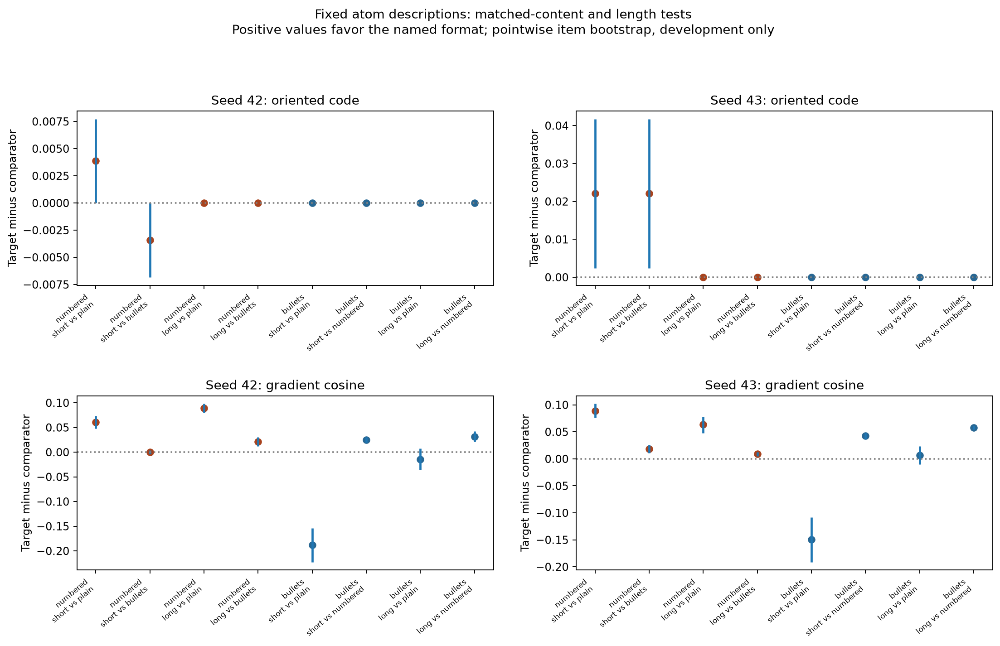
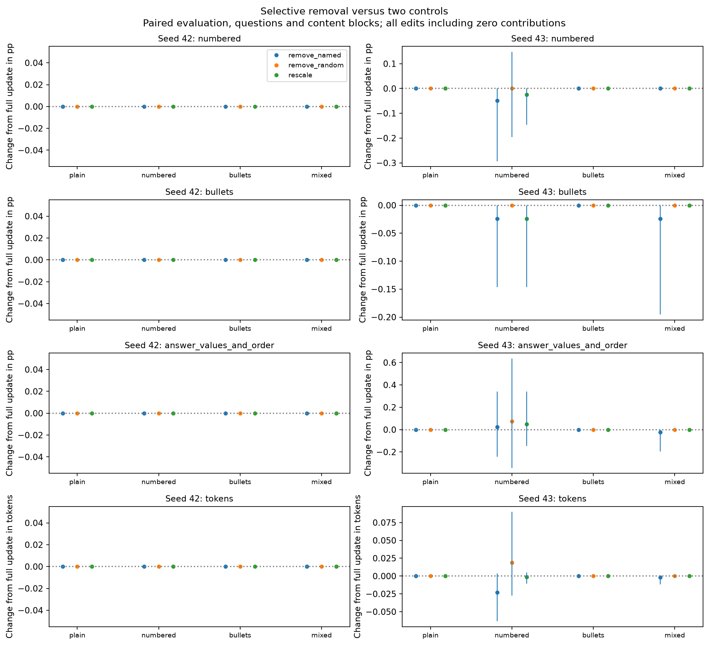
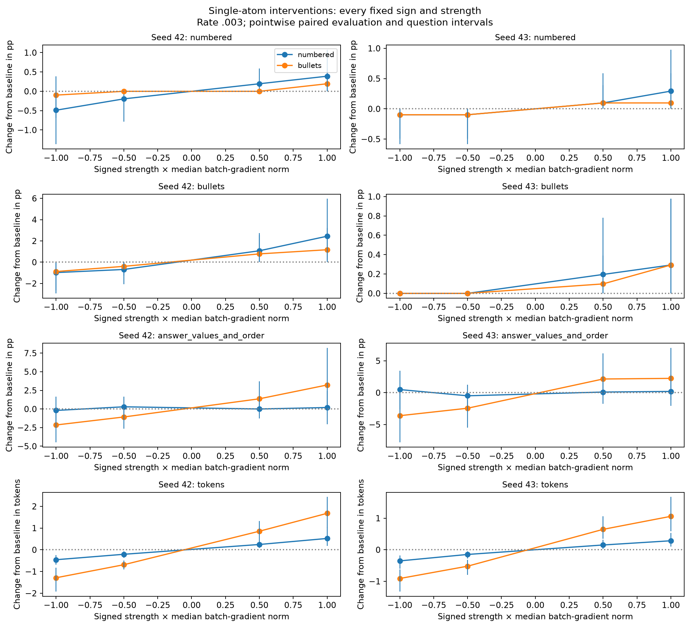
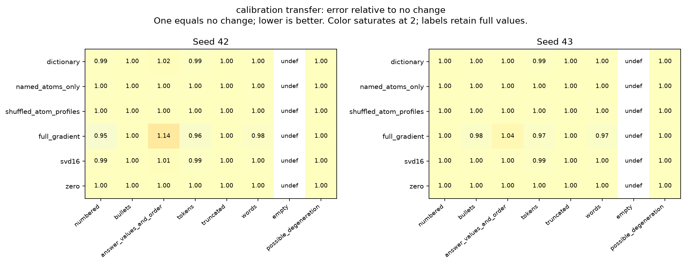
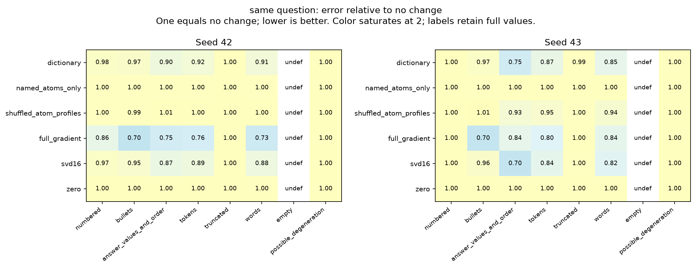

The goal is a small set of meaningfully described atoms that explains and approximately predicts batch-update effects. Beating full gradients or SVD is not required. Description validity, causal selectivity and forecast accuracy are separate questions. This is a development experiment with two reused Gemma-3 4B rank-8 query/value LoRA adapters, 136 tensors, four simple task families and four batch-content blocks.
All candidate descriptions, examples, methods, rates and interventions were fixed before new results. Each seed completed 48 matched semantic gradients, 3,072 proposal responses and 74,752 independent evaluation responses across 72 updates plus baseline. All forecasts were saved and locked before updates. The atom dictionary was learned from normalized EKFAC-projected gradients; batch codes restore the projected norm. It was not learned from raw magnitude-bearing gradients.
Descriptions: The fixed numbered-list candidate has positive matched physical-gradient preference against plain answers in both seeds, but its sparse code is positive on only one of eight short items in seed 42 and three of eight in seed 43; both have zero code on all long semantic items. The fixed bullets candidate has zero code on every semantic item in both seeds and has negative mean bullet-versus-plain physical preference on short answers. These descriptions do not yet supply a robust, selective explanation of the new tasks.
Selective interventions: The targeted named coefficient is zero in 16 of 16 batches for seed 42 and 11 of 16 for seed 43, including all bulleted batches in both seeds. Those removals and their zero-norm controls are literally unchanged updates and cannot establish causal necessity. The five nonzero numbered removals in seed 43 have tiny effects: averaged over numbered batches, numbering falls by 0.0488 percentage points, with a pointwise question/block interval of -0.293 to 0 points. Single-atom interventions change length in both signs and seeds. The seed-42 numbered candidate at strength +1 increases bullets by 2.44 points and numbering by only 0.391 points, while adding 0.522 tokens. Format shifts remain confounded; no label is retrospectively promoted to a validated verbosity feature.
Primary forecasts: Primary calibration-transfer dictionary content/order nRMSE is 1.015/0.999, with pointwise intervals 0.984-1.119/0.991-1.011. Numbering nRMSE is 0.994/1.000 and bullets 1.000/0.998. Named-only forecasts are effectively no change. Dictionary mean token-change predictions are +0.054/+0.019 versus actual +3.621/+1.744. All primary methods predict zero additional truncation despite actual mean increases of 1.59/0.684 percentage points. There is no convincing primary atom forecast or named-atom explanation in this development study.
Secondary evidence: The complete dictionary retains some same-question numerical signal: content/order nRMSE 0.896/0.750; the seed-43 pointwise interval is 0.589-0.974, and seed 42 includes one. Same-question token nRMSE is 0.917/0.867. These use evaluation-question proposal profiles and do not validate the primary calibration transfer or the descriptions of the named atoms. No comparison against SVD or full gradients is a success requirement. All task/style tails, missing events, probability-range violations and no-effect edits are retained.
Next development: Investigate the atom encoding before another prospective generation study. Freeze a separate retrospective diagnostic of original Lasso, an unshrunk least-squares refit on exactly its active support, fixed OMP16, and a dense least-squares dictionary-span reference, using all cached batch projections and the same frozen dictionary. Select no penalty or support using observed behavioral outcomes. Measure reconstruction, magnitude, named-atom inclusion and coefficient stability. Recomputed historical forecasts must remain labeled retrospective development diagnostics. Any later prospective test still needs fixed held-out descriptions, selective interventions, separate calibration and independent evaluation, and newly locked forecasts. Do not promise a positive result or expand proposal banks as a generic cure.
The two candidate labels are numbered lists and bulleted lists, selected earlier from discovery-training examples. They were hypotheses, not established meanings. The assay compares sparse codes and physical gradient cosines for the named format against plain text and the other list format on eight separate items, each in short and long versions with matching requested content. Positive differences favor the description. All items, tasks, lengths and 500-dimensional sparse codes are retained in the semantic assay files. No new atom is promoted from this assay.

| seed | label | long | metric | comparison | mean preference | positive pairs | zero pairs | pairs | item bootstrap lo | item bootstrap hi |
|---|---|---|---|---|---|---|---|---|---|---|
| 42 | numbered | False | oriented_code | plain | 0.003869 | 1 | 7 | 8 | 0 | 0.007737 |
| 42 | numbered | False | oriented_code | bullets | -0.003416 | 0 | 6 | 8 | -0.006833 | 0 |
| 42 | numbered | False | gradient_cosine | plain | 0.06034 | 7 | 0 | 8 | 0.04756 | 0.07313 |
| 42 | numbered | False | gradient_cosine | bullets | 0.0001678 | 4 | 0 | 8 | -0.003621 | 0.003965 |
| 42 | numbered | True | oriented_code | plain | 0 | 0 | 8 | 8 | 0 | 0 |
| 42 | numbered | True | oriented_code | bullets | 0 | 0 | 8 | 8 | 0 | 0 |
| 42 | numbered | True | gradient_cosine | plain | 0.08921 | 8 | 0 | 8 | 0.08021 | 0.0982 |
| 42 | numbered | True | gradient_cosine | bullets | 0.02117 | 6 | 0 | 8 | 0.01199 | 0.02998 |
| 42 | bullets | False | oriented_code | plain | 0 | 0 | 8 | 8 | 0 | 0 |
| 42 | bullets | False | oriented_code | numbered | 0 | 0 | 8 | 8 | 0 | 0 |
| 42 | bullets | False | gradient_cosine | plain | -0.1884 | 1 | 0 | 8 | -0.2225 | -0.1538 |
| 42 | bullets | False | gradient_cosine | numbered | 0.02513 | 8 | 0 | 8 | 0.01937 | 0.03042 |
| 42 | bullets | True | oriented_code | plain | 0 | 0 | 8 | 8 | 0 | 0 |
| 42 | bullets | True | oriented_code | numbered | 0 | 0 | 8 | 8 | 0 | 0 |
| 42 | bullets | True | gradient_cosine | plain | -0.01414 | 3 | 0 | 8 | -0.03605 | 0.007776 |
| 42 | bullets | True | gradient_cosine | numbered | 0.03114 | 7 | 0 | 8 | 0.02159 | 0.04223 |
| 43 | numbered | False | oriented_code | plain | 0.02206 | 3 | 5 | 8 | 0.002344 | 0.04177 |
| 43 | numbered | False | oriented_code | bullets | 0.02206 | 3 | 5 | 8 | 0.002344 | 0.04177 |
| 43 | numbered | False | gradient_cosine | plain | 0.08903 | 8 | 0 | 8 | 0.07591 | 0.1022 |
| 43 | numbered | False | gradient_cosine | bullets | 0.01806 | 6 | 0 | 8 | 0.01055 | 0.02558 |
| 43 | numbered | True | oriented_code | plain | 0 | 0 | 8 | 8 | 0 | 0 |
| 43 | numbered | True | oriented_code | bullets | 0 | 0 | 8 | 8 | 0 | 0 |
| 43 | numbered | True | gradient_cosine | plain | 0.0639 | 8 | 0 | 8 | 0.04775 | 0.07759 |
| 43 | numbered | True | gradient_cosine | bullets | 0.008902 | 6 | 0 | 8 | 0.005065 | 0.01274 |
| 43 | bullets | False | oriented_code | plain | 0 | 0 | 8 | 8 | 0 | 0 |
| 43 | bullets | False | oriented_code | numbered | 0 | 0 | 8 | 8 | 0 | 0 |
| 43 | bullets | False | gradient_cosine | plain | -0.1496 | 1 | 0 | 8 | -0.1911 | -0.1084 |
| 43 | bullets | False | gradient_cosine | numbered | 0.04229 | 8 | 0 | 8 | 0.03647 | 0.04811 |
| 43 | bullets | True | oriented_code | plain | 0 | 0 | 8 | 8 | 0 | 0 |
| 43 | bullets | True | oriented_code | numbered | 0 | 0 | 8 | 8 | 0 | 0 |
| 43 | bullets | True | gradient_cosine | plain | 0.006573 | 3 | 0 | 8 | -0.01044 | 0.02358 |
| 43 | bullets | True | gradient_cosine | numbered | 0.05742 | 8 | 0 | 8 | 0.05406 | 0.06077 |
Every batch is evaluated after its full update, after removing its named atom contribution, after removing an equal-norm contribution along a fixed random nonnamed atom, and after rescaling the full update to match the remaining named-removal norm. The target is bullets for bulleted batches and numbered for the other styles. Zero contributions remain zero edits. Removing an atom is tested against both controls, with content, length, truncation, emptiness and possible degeneration retained. The random comparison is one fixed draw per batch, not an average over random atoms.

| seed | style | batches | zero named contributions | named coefficients |
|---|---|---|---|---|
| 42 | plain | 4 | 4 | [0.0, 0.0, 0.0, 0.0] |
| 42 | numbered | 4 | 4 | [0.0, 0.0, 0.0, 0.0] |
| 42 | bullets | 4 | 4 | [0.0, 0.0, 0.0, 0.0] |
| 42 | mixed | 4 | 4 | [0.0, 0.0, 0.0, 0.0] |
| 43 | plain | 4 | 4 | [0.0, 0.0, 0.0, 0.0] |
| 43 | numbered | 4 | 0 | [1.4445202350616455, 1.727250099182129, 1.9382182359695435, 1.0497183799743652] |
| 43 | bullets | 4 | 4 | [0.0, 0.0, 0.0, 0.0] |
| 43 | mixed | 4 | 3 | [0.0, 0.25068336725234985, 0.0, 0.0] |
All signed single-atom strengths are shown, with no selected best strength. Positive strength follows the discovery-training descent orientation. A format shift accompanied by worse content or altered length is not sufficient evidence of a selective formatting concept.

Before updates, baseline sampled responses estimate every atom's behavioral effect through the standard score-function covariance. The primary forecast sums batch coefficients times mean atom effects on eight separate calibration questions and transfers that prediction to 16 evaluation questions with different templates. Same-question estimates are secondary. Dictionary, named-only, shuffled atom-profile, full-gradient, SVD16 and zero forecasts are all retained. Rates stay fixed at .003; no regression, clipping or outcome fitting is used.
One unit of relative RMSE means the same error as predicting no change. Lower is better. A zero observed effect makes relative error undefined. Binary-endpoint absolute errors and changes are fractions; multiply by 100 for percentage points. Tokens and words use their own units.

| seed | method | endpoint | rmse | nrmse | actual mean | predicted mean | worst batch rmse | bias | outside probability range fraction | both mc questions blocks nrmse lo | both mc questions blocks nrmse hi | both mc questions blocks nrmse defined replicates | both mc questions blocks mse difference vs zero lo | both mc questions blocks mse difference vs zero hi |
|---|---|---|---|---|---|---|---|---|---|---|---|---|---|---|
| 42 | dictionary | numbered | 0.02383 | 0.9944 | 0.01221 | 0.0003052 | 0.04048 | -0.0119 | 0 | 0.9771 | 1 | 1000 | -2.897e-05 | 0 |
| 42 | dictionary | bullets | 0.1054 | 1 | 0.0354 | 0 | 0.2138 | -0.0354 | 0 | 1 | 1 | 1000 | 0 | 0 |
| 42 | dictionary | answer_values_and_order | 0.09887 | 1.015 | -0.01221 | 0.007425 | 0.1663 | 0.01963 | 0.1562 | 0.9844 | 1.119 | 1000 | -0.0004611 | 0.00164 |
| 42 | dictionary | tokens | 6.024 | 0.9885 | 3.621 | 0.05418 | 13.41 | -3.567 | undefined | 0.9799 | 0.9945 | 1000 | -1.451 | -0.4284 |
| 42 | dictionary | truncated | 0.03577 | 1 | 0.01587 | 0 | 0.08682 | -0.01587 | 0 | 1 | 1 | 1000 | 0 | 0 |
| 42 | dictionary | words | 2.18 | 0.9968 | 1.309 | 0.005816 | 4.706 | -1.303 | undefined | 0.993 | 1 | 1000 | -0.06451 | 0.0001049 |
| 42 | dictionary | empty | 0 | undefined | 0 | 0 | 0 | 0 | 0 | undefined | undefined | 0 | 0 | 0 |
| 42 | dictionary | possible_degeneration | 0.01906 | 1 | 0.007751 | 0 | 0.04385 | -0.007751 | 0 | 1 | 1 | 1000 | 0 | 0 |
| 42 | named_atoms_only | numbered | 0.02396 | 1 | 0.01221 | 2.423e-06 | 0.04059 | -0.0122 | 0 | 0.9997 | 1 | 1000 | -2.819e-07 | 0 |
| 42 | named_atoms_only | bullets | 0.1054 | 1 | 0.0354 | 0 | 0.2138 | -0.0354 | 0 | 1 | 1 | 1000 | 0 | 0 |
| 42 | named_atoms_only | answer_values_and_order | 0.09736 | 0.9999 | -0.01221 | 3.837e-05 | 0.1693 | 0.01225 | 0.02344 | 0.9995 | 1 | 1000 | -1.306e-05 | 2.667e-06 |
| 42 | named_atoms_only | tokens | 6.094 | 0.9999 | 3.621 | 0.0002812 | 13.54 | -3.621 | undefined | 0.9998 | 1 | 1000 | -0.0202 | -3.117e-05 |
| 42 | named_atoms_only | truncated | 0.03577 | 1 | 0.01587 | 0 | 0.08682 | -0.01587 | 0 | 1 | 1 | 1000 | 0 | 0 |
| 42 | named_atoms_only | words | 2.186 | 1 | 1.309 | 5.57e-05 | 4.719 | -1.309 | undefined | 0.9999 | 1 | 1000 | -0.001238 | -2.908e-06 |
| 42 | named_atoms_only | empty | 0 | undefined | 0 | 0 | 0 | 0 | 0 | undefined | undefined | 0 | 0 | 0 |
| 42 | named_atoms_only | possible_degeneration | 0.01906 | 1 | 0.007751 | 0 | 0.04385 | -0.007751 | 0 | 1 | 1 | 1000 | 0 | 0 |
| 42 | shuffled_atom_profiles | numbered | 0.02395 | 0.9995 | 0.01221 | 1.557e-05 | 0.04056 | -0.01219 | 0.3281 | 0.9976 | 1 | 1000 | -2.793e-06 | 0 |
| 42 | shuffled_atom_profiles | bullets | 0.1054 | 1 | 0.0354 | 0 | 0.2138 | -0.0354 | 0 | 1 | 1 | 1000 | 0 | 0 |
| 42 | shuffled_atom_profiles | answer_values_and_order | 0.09755 | 1.002 | -0.01221 | 0.001203 | 0.1692 | 0.01341 | 0.125 | 0.9974 | 1.013 | 1000 | -6.709e-05 | 0.0001979 |
| 42 | shuffled_atom_profiles | tokens | 6.096 | 1 | 3.621 | 0.002598 | 13.56 | -3.619 | undefined | 0.9993 | 1.001 | 1000 | -0.04495 | 0.105 |
| 42 | shuffled_atom_profiles | truncated | 0.03577 | 1 | 0.01587 | 0 | 0.08682 | -0.01587 | 0 | 1 | 1 | 1000 | 0 | 0 |
| 42 | shuffled_atom_profiles | words | 2.186 | 0.9996 | 1.309 | 0.0009125 | 4.719 | -1.308 | undefined | 0.9988 | 1 | 1000 | -0.01114 | 0.003174 |
| 42 | shuffled_atom_profiles | empty | 0 | undefined | 0 | 0 | 0 | 0 | 0 | undefined | undefined | 0 | 0 | 0 |
| 42 | shuffled_atom_profiles | possible_degeneration | 0.01906 | 1 | 0.007751 | 0 | 0.04385 | -0.007751 | 0 | 1 | 1 | 1000 | 0 | 0 |
| 42 | full_gradient | numbered | 0.02267 | 0.946 | 0.01221 | 0.002205 | 0.03914 | -0.01 | 0 | 0.8563 | 1 | 1000 | -0.0002139 | 0 |
| 42 | full_gradient | bullets | 0.1054 | 1 | 0.0354 | 0 | 0.2138 | -0.0354 | 0 | 1 | 1 | 1000 | 0 | 0 |
| 42 | full_gradient | answer_values_and_order | 0.1107 | 1.137 | -0.01221 | 0.02633 | 0.2247 | 0.03854 | 0.2539 | 0.971 | 1.988 | 1000 | -0.0008089 | 0.02401 |
| 42 | full_gradient | tokens | 5.86 | 0.9616 | 3.621 | 0.1935 | 12.98 | -3.428 | undefined | 0.9296 | 0.986 | 1000 | -5.195 | -1.062 |
| 42 | full_gradient | truncated | 0.03577 | 1 | 0.01587 | 0 | 0.08682 | -0.01587 | 0 | 1 | 1 | 1000 | 0 | 0 |
| 42 | full_gradient | words | 2.146 | 0.9814 | 1.309 | 0.03709 | 4.602 | -1.272 | undefined | 0.9613 | 0.9954 | 1000 | -0.3919 | -0.0415 |
| 42 | full_gradient | empty | 0 | undefined | 0 | 0 | 0 | 0 | 0 | undefined | undefined | 0 | 0 | 0 |
| 42 | full_gradient | possible_degeneration | 0.01906 | 1 | 0.007751 | 0 | 0.04385 | -0.007751 | 0 | 1 | 1 | 1000 | 0 | 0 |
| 42 | svd16 | numbered | 0.02378 | 0.9924 | 0.01221 | 0.0003865 | 0.04043 | -0.01182 | 0 | 0.9702 | 1 | 1000 | -3.983e-05 | 0 |
| 42 | svd16 | bullets | 0.1054 | 1 | 0.0354 | 0 | 0.2138 | -0.0354 | 0 | 1 | 1 | 1000 | 0 | 0 |
| 42 | svd16 | answer_values_and_order | 0.09877 | 1.014 | -0.01221 | 0.008112 | 0.1658 | 0.02032 | 0.1641 | 0.9798 | 1.132 | 1000 | -0.0006048 | 0.00185 |
| 42 | svd16 | tokens | 6.008 | 0.9858 | 3.621 | 0.06957 | 13.35 | -3.552 | undefined | 0.9756 | 0.993 | 1000 | -1.834 | -0.5143 |
| 42 | svd16 | truncated | 0.03577 | 1 | 0.01587 | 0 | 0.08682 | -0.01587 | 0 | 1 | 1 | 1000 | 0 | 0 |
| 42 | svd16 | words | 2.177 | 0.9958 | 1.309 | 0.0076 | 4.699 | -1.301 | undefined | 0.991 | 1 | 1000 | -0.08414 | -0.000545 |
| 42 | svd16 | empty | 0 | undefined | 0 | 0 | 0 | 0 | 0 | undefined | undefined | 0 | 0 | 0 |
| 42 | svd16 | possible_degeneration | 0.01906 | 1 | 0.007751 | 0 | 0.04385 | -0.007751 | 0 | 1 | 1 | 1000 | 0 | 0 |
| 42 | zero | numbered | 0.02396 | 1 | 0.01221 | 0 | 0.04059 | -0.01221 | 0 | 1 | 1 | 1000 | 0 | 0 |
| 42 | zero | bullets | 0.1054 | 1 | 0.0354 | 0 | 0.2138 | -0.0354 | 0 | 1 | 1 | 1000 | 0 | 0 |
| 42 | zero | answer_values_and_order | 0.09737 | 1 | -0.01221 | 0 | 0.1694 | 0.01221 | 0 | 1 | 1 | 1000 | 0 | 0 |
| 42 | zero | tokens | 6.094 | 1 | 3.621 | 0 | 13.54 | -3.621 | undefined | 1 | 1 | 1000 | 0 | 0 |
| 42 | zero | truncated | 0.03577 | 1 | 0.01587 | 0 | 0.08682 | -0.01587 | 0 | 1 | 1 | 1000 | 0 | 0 |
| 42 | zero | words | 2.187 | 1 | 1.309 | 0 | 4.72 | -1.309 | undefined | 1 | 1 | 1000 | 0 | 0 |
| 42 | zero | empty | 0 | undefined | 0 | 0 | 0 | 0 | 0 | undefined | undefined | 0 | 0 | 0 |
| 42 | zero | possible_degeneration | 0.01906 | 1 | 0.007751 | 0 | 0.04385 | -0.007751 | 0 | 1 | 1 | 1000 | 0 | 0 |
| 43 | dictionary | numbered | 0.01448 | 1 | 0.00647 | 0 | 0.02376 | -0.00647 | 0 | 1 | 1 | 1000 | 0 | 0 |
| 43 | dictionary | bullets | 0.03678 | 0.9984 | 0.006775 | 0.0002231 | 0.08223 | -0.006552 | 0 | undefined | undefined | 993 | -2.145e-05 | 0 |
| 43 | dictionary | answer_values_and_order | 0.1116 | 0.9992 | -0.008667 | -0.0009075 | 0.199 | 0.00776 | 0.1211 | 0.9914 | 1.011 | 1000 | -0.0002466 | 0.0003351 |
| 43 | dictionary | tokens | 3.215 | 0.9907 | 1.744 | 0.01912 | 7.038 | -1.725 | undefined | 0.9834 | 0.9969 | 1000 | -0.3662 | -0.07123 |
| 43 | dictionary | truncated | 0.01657 | 1 | 0.006836 | 0 | 0.03847 | -0.006836 | 0 | 1 | 1 | 1000 | 0 | 0 |
| 43 | dictionary | words | 1.076 | 0.9991 | 0.5419 | 0.0004994 | 2.376 | -0.5414 | undefined | 0.9933 | 1.005 | 1000 | -0.01624 | 0.0112 |
| 43 | dictionary | empty | 0 | undefined | 0 | 0 | 0 | 0 | 0 | undefined | undefined | 0 | 0 | 0 |
| 43 | dictionary | possible_degeneration | 0.0101 | 1 | 0.003601 | 0 | 0.02471 | -0.003601 | 0 | 1 | 1 | 1000 | 0 | 0 |
| 43 | named_atoms_only | numbered | 0.01448 | 1 | 0.00647 | 0 | 0.02376 | -0.00647 | 0 | 1 | 1 | 1000 | 0 | 0 |
| 43 | named_atoms_only | bullets | 0.03684 | 1 | 0.006775 | 7.642e-06 | 0.08231 | -0.006767 | 0 | undefined | undefined | 993 | -3.418e-07 | 1.47e-09 |
| 43 | named_atoms_only | answer_values_and_order | 0.1117 | 0.9998 | -0.008667 | -3.518e-05 | 0.1985 | 0.008632 | 0.03906 | 0.9992 | 1 | 1000 | -1.764e-05 | 5.25e-06 |
| 43 | named_atoms_only | tokens | 3.245 | 1 | 1.744 | -1.112e-05 | 7.1 | -1.744 | undefined | 1 | 1 | 1000 | -2.828e-05 | 3.334e-05 |
| 43 | named_atoms_only | truncated | 0.01657 | 1 | 0.006836 | 0 | 0.03847 | -0.006836 | 0 | 1 | 1 | 1000 | 0 | 0 |
| 43 | named_atoms_only | words | 1.077 | 1 | 0.5419 | 8.43e-05 | 2.378 | -0.5418 | undefined | 1 | 1 | 1000 | -1.626e-05 | 2.236e-05 |
| 43 | named_atoms_only | empty | 0 | undefined | 0 | 0 | 0 | 0 | 0 | undefined | undefined | 0 | 0 | 0 |
| 43 | named_atoms_only | possible_degeneration | 0.0101 | 1 | 0.003601 | 0 | 0.02471 | -0.003601 | 0 | 1 | 1 | 1000 | 0 | 0 |
| 43 | shuffled_atom_profiles | numbered | 0.01448 | 1 | 0.00647 | 0 | 0.02376 | -0.00647 | 0 | 1 | 1 | 1000 | 0 | 0 |
| 43 | shuffled_atom_profiles | bullets | 0.03683 | 0.9997 | 0.006775 | 3.778e-06 | 0.08229 | -0.006771 | 0.3555 | undefined | undefined | 993 | -5.207e-06 | 3.989e-07 |
| 43 | shuffled_atom_profiles | answer_values_and_order | 0.1121 | 1.004 | -0.008667 | 0.0003659 | 0.1996 | 0.009033 | 0.07812 | 0.9983 | 1.012 | 1000 | -4.19e-05 | 0.000348 |
| 43 | shuffled_atom_profiles | tokens | 3.24 | 0.9984 | 1.744 | 0.001837 | 7.085 | -1.742 | undefined | 0.9966 | 0.9999 | 1000 | -0.0777 | -0.001979 |
| 43 | shuffled_atom_profiles | truncated | 0.01657 | 1 | 0.006836 | 0 | 0.03847 | -0.006836 | 0 | 1 | 1 | 1000 | 0 | 0 |
| 43 | shuffled_atom_profiles | words | 1.075 | 0.9983 | 0.5419 | 0.001512 | 2.375 | -0.5404 | undefined | 0.9951 | 1.001 | 1000 | -0.01177 | 0.002828 |
| 43 | shuffled_atom_profiles | empty | 0 | undefined | 0 | 0 | 0 | 0 | 0 | undefined | undefined | 0 | 0 | 0 |
| 43 | shuffled_atom_profiles | possible_degeneration | 0.0101 | 1 | 0.003601 | 0 | 0.02471 | -0.003601 | 0 | 1 | 1 | 1000 | 0 | 0 |
| 43 | full_gradient | numbered | 0.01448 | 1 | 0.00647 | 0 | 0.02376 | -0.00647 | 0 | 1 | 1 | 1000 | 0 | 0 |
| 43 | full_gradient | bullets | 0.03595 | 0.9759 | 0.006775 | 0.004325 | 0.08055 | -0.00245 | 0 | undefined | undefined | 993 | -0.0002974 | 0.0001649 |
| 43 | full_gradient | answer_values_and_order | 0.1163 | 1.041 | -0.008667 | 0.01877 | 0.1825 | 0.02744 | 0.1953 | 0.9587 | 1.609 | 1000 | -0.001253 | 0.01488 |
| 43 | full_gradient | tokens | 3.15 | 0.9708 | 1.744 | 0.07179 | 6.891 | -1.673 | undefined | 0.9411 | 0.9958 | 1000 | -1.291 | -0.09056 |
| 43 | full_gradient | truncated | 0.01657 | 1 | 0.006836 | 0 | 0.03847 | -0.006836 | 0 | 1 | 1 | 1000 | 0 | 0 |
| 43 | full_gradient | words | 1.047 | 0.9717 | 0.5419 | 0.03456 | 2.285 | -0.5074 | undefined | 0.9443 | 0.9966 | 1000 | -0.1452 | -0.008802 |
| 43 | full_gradient | empty | 0 | undefined | 0 | 0 | 0 | 0 | 0 | undefined | undefined | 0 | 0 | 0 |
| 43 | full_gradient | possible_degeneration | 0.0101 | 1 | 0.003601 | 0 | 0.02471 | -0.003601 | 0 | 1 | 1 | 1000 | 0 | 0 |
| 43 | svd16 | numbered | 0.01448 | 1 | 0.00647 | 0 | 0.02376 | -0.00647 | 0 | 1 | 1 | 1000 | 0 | 0 |
| 43 | svd16 | bullets | 0.03675 | 0.9977 | 0.006775 | 0.0002909 | 0.08219 | -0.006484 | 0.05078 | undefined | undefined | 993 | -3.148e-05 | 0 |
| 43 | svd16 | answer_values_and_order | 0.1115 | 0.9983 | -0.008667 | -0.0009034 | 0.1992 | 0.007764 | 0.1133 | 0.989 | 1.013 | 1000 | -0.0003102 | 0.0003673 |
| 43 | svd16 | tokens | 3.208 | 0.9887 | 1.744 | 0.02573 | 7.023 | -1.719 | undefined | 0.9797 | 0.9963 | 1000 | -0.4501 | -0.08088 |
| 43 | svd16 | truncated | 0.01657 | 1 | 0.006836 | 0 | 0.03847 | -0.006836 | 0 | 1 | 1 | 1000 | 0 | 0 |
| 43 | svd16 | words | 1.076 | 0.9989 | 0.5419 | 0.0003662 | 2.375 | -0.5416 | undefined | 0.9917 | 1.006 | 1000 | -0.0203 | 0.01419 |
| 43 | svd16 | empty | 0 | undefined | 0 | 0 | 0 | 0 | 0 | undefined | undefined | 0 | 0 | 0 |
| 43 | svd16 | possible_degeneration | 0.0101 | 1 | 0.003601 | 0 | 0.02471 | -0.003601 | 0 | 1 | 1 | 1000 | 0 | 0 |
| 43 | zero | numbered | 0.01448 | 1 | 0.00647 | 0 | 0.02376 | -0.00647 | 0 | 1 | 1 | 1000 | 0 | 0 |
| 43 | zero | bullets | 0.03684 | 1 | 0.006775 | 0 | 0.08231 | -0.006775 | 0 | undefined | undefined | 993 | 0 | 0 |
| 43 | zero | answer_values_and_order | 0.1117 | 1 | -0.008667 | 0 | 0.1985 | 0.008667 | 0 | 1 | 1 | 1000 | 0 | 0 |
| 43 | zero | tokens | 3.245 | 1 | 1.744 | 0 | 7.1 | -1.744 | undefined | 1 | 1 | 1000 | 0 | 0 |
| 43 | zero | truncated | 0.01657 | 1 | 0.006836 | 0 | 0.03847 | -0.006836 | 0 | 1 | 1 | 1000 | 0 | 0 |
| 43 | zero | words | 1.077 | 1 | 0.5419 | 0 | 2.378 | -0.5419 | undefined | 1 | 1 | 1000 | 0 | 0 |
| 43 | zero | empty | 0 | undefined | 0 | 0 | 0 | 0 | 0 | undefined | undefined | 0 | 0 | 0 |
| 43 | zero | possible_degeneration | 0.0101 | 1 | 0.003601 | 0 | 0.02471 | -0.003601 | 0 | 1 | 1 | 1000 | 0 | 0 |

| seed | method | endpoint | rmse | nrmse | actual mean | predicted mean | worst batch rmse | bias | outside probability range fraction | both mc questions blocks nrmse lo | both mc questions blocks nrmse hi | both mc questions blocks nrmse defined replicates | both mc questions blocks mse difference vs zero lo | both mc questions blocks mse difference vs zero hi |
|---|---|---|---|---|---|---|---|---|---|---|---|---|---|---|
| 42 | dictionary | numbered | 0.02337 | 0.9755 | 0.01221 | 0.001112 | 0.03983 | -0.01109 | 0 | 0.9446 | 1.074 | 1000 | -0.0001024 | 4.288e-05 |
| 42 | dictionary | bullets | 0.1018 | 0.9653 | 0.0354 | 0.001519 | 0.209 | -0.03388 | 0 | 0.9351 | 1.001 | 1000 | -0.002432 | 9.737e-06 |
| 42 | dictionary | answer_values_and_order | 0.08724 | 0.8959 | -0.01221 | 0.004079 | 0.1371 | 0.01629 | 0.01562 | 0.7721 | 1.044 | 1000 | -0.006118 | 0.0006805 |
| 42 | dictionary | tokens | 5.588 | 0.917 | 3.621 | 0.3046 | 12.51 | -3.317 | undefined | 0.8821 | 0.9474 | 1000 | -9.374 | -3.26 |
| 42 | dictionary | truncated | 0.03577 | 1 | 0.01587 | 0 | 0.08682 | -0.01587 | 0 | 1 | 1 | 1000 | 0 | 0 |
| 42 | dictionary | words | 1.988 | 0.9092 | 1.309 | 0.1152 | 4.313 | -1.194 | undefined | 0.8674 | 0.9485 | 1000 | -1.38 | -0.4036 |
| 42 | dictionary | empty | 0 | undefined | 0 | 0 | 0 | 0 | 0 | undefined | undefined | 0 | 0 | 0 |
| 42 | dictionary | possible_degeneration | 0.01906 | 1 | 0.007751 | 0 | 0.04385 | -0.007751 | 0 | 1 | 1 | 1000 | 0 | 0 |
| 42 | named_atoms_only | numbered | 0.02395 | 0.9997 | 0.01221 | 1.023e-05 | 0.04059 | -0.0122 | 0 | 0.999 | 1 | 1000 | -1.434e-06 | 3.537e-09 |
| 42 | named_atoms_only | bullets | 0.1054 | 0.9994 | 0.0354 | 1.816e-05 | 0.2137 | -0.03538 | 0 | 0.9985 | 1 | 1000 | -5.121e-05 | 6.457e-08 |
| 42 | named_atoms_only | answer_values_and_order | 0.09718 | 0.9981 | -0.01221 | 5.456e-05 | 0.1678 | 0.01226 | 0 | 0.995 | 1 | 1000 | -0.0001679 | 1.092e-06 |
| 42 | named_atoms_only | tokens | 6.088 | 0.999 | 3.621 | 0.002545 | 13.5 | -3.619 | undefined | 0.9976 | 1 | 1000 | -0.2408 | -0.0005743 |
| 42 | named_atoms_only | truncated | 0.03577 | 1 | 0.01587 | 0 | 0.08682 | -0.01587 | 0 | 1 | 1 | 1000 | 0 | 0 |
| 42 | named_atoms_only | words | 2.184 | 0.9989 | 1.309 | 0.001014 | 4.702 | -1.308 | undefined | 0.9972 | 1 | 1000 | -0.03503 | -6.981e-05 |
| 42 | named_atoms_only | empty | 0 | undefined | 0 | 0 | 0 | 0 | 0 | undefined | undefined | 0 | 0 | 0 |
| 42 | named_atoms_only | possible_degeneration | 0.01906 | 1 | 0.007751 | 0 | 0.04385 | -0.007751 | 0 | 1 | 1 | 1000 | 0 | 0 |
| 42 | shuffled_atom_profiles | numbered | 0.0239 | 0.9974 | 0.01221 | 4.16e-05 | 0.04038 | -0.01217 | 0 | 0.989 | 1.003 | 1000 | -1.541e-05 | 3.201e-06 |
| 42 | shuffled_atom_profiles | bullets | 0.1047 | 0.993 | 0.0354 | 0.0003195 | 0.2129 | -0.03508 | 0 | 0.9842 | 1 | 1000 | -0.0005293 | 1.171e-06 |
| 42 | shuffled_atom_profiles | answer_values_and_order | 0.09787 | 1.005 | -0.01221 | -0.0002485 | 0.1769 | 0.01196 | 0 | 0.9837 | 1.027 | 1000 | -0.0003253 | 0.0009481 |
| 42 | shuffled_atom_profiles | tokens | 6.117 | 1.004 | 3.621 | 0.0008926 | 13.71 | -3.62 | undefined | 0.9939 | 1.012 | 1000 | -0.3631 | 1.201 |
| 42 | shuffled_atom_profiles | truncated | 0.03577 | 1 | 0.01587 | 0 | 0.08682 | -0.01587 | 0 | 1 | 1 | 1000 | 0 | 0 |
| 42 | shuffled_atom_profiles | words | 2.195 | 1.004 | 1.309 | 0.0005859 | 4.788 | -1.308 | undefined | 0.9928 | 1.014 | 1000 | -0.05683 | 0.1746 |
| 42 | shuffled_atom_profiles | empty | 0 | undefined | 0 | 0 | 0 | 0 | 0 | undefined | undefined | 0 | 0 | 0 |
| 42 | shuffled_atom_profiles | possible_degeneration | 0.01906 | 1 | 0.007751 | 0 | 0.04385 | -0.007751 | 0 | 1 | 1 | 1000 | 0 | 0 |
| 42 | full_gradient | numbered | 0.02058 | 0.8589 | 0.01221 | 0.006072 | 0.03308 | -0.006135 | 0 | 0.6841 | 1.74 | 1000 | -0.0006033 | 0.0006692 |
| 42 | full_gradient | bullets | 0.07328 | 0.6951 | 0.0354 | 0.01058 | 0.1583 | -0.02482 | 0 | 0.4147 | 1.016 | 1000 | -0.01706 | 0.0001345 |
| 42 | full_gradient | answer_values_and_order | 0.07328 | 0.7525 | -0.01221 | 0.01063 | 0.1171 | 0.02284 | 0.02734 | 0.5913 | 1.221 | 1000 | -0.01155 | 0.003444 |
| 42 | full_gradient | tokens | 4.643 | 0.7619 | 3.621 | 1.179 | 10.34 | -2.442 | undefined | 0.6878 | 0.8499 | 1000 | -24.53 | -8.211 |
| 42 | full_gradient | truncated | 0.03577 | 1 | 0.01587 | 0 | 0.08682 | -0.01587 | 0 | 1 | 1 | 1000 | 0 | 0 |
| 42 | full_gradient | words | 1.604 | 0.7334 | 1.309 | 0.4895 | 3.471 | -0.8194 | undefined | 0.6486 | 0.8488 | 1000 | -3.753 | -1.003 |
| 42 | full_gradient | empty | 0 | undefined | 0 | 0 | 0 | 0 | 0 | undefined | undefined | 0 | 0 | 0 |
| 42 | full_gradient | possible_degeneration | 0.01906 | 1 | 0.007751 | 0 | 0.04385 | -0.007751 | 0 | 1 | 1 | 1000 | 0 | 0 |
| 42 | svd16 | numbered | 0.02326 | 0.9709 | 0.01221 | 0.001433 | 0.03955 | -0.01077 | 0 | 0.9336 | 1.106 | 1000 | -0.0001265 | 7.119e-05 |
| 42 | svd16 | bullets | 0.09992 | 0.9479 | 0.0354 | 0.002149 | 0.2073 | -0.03325 | 0 | 0.9031 | 1.002 | 1000 | -0.003687 | 1.347e-05 |
| 42 | svd16 | answer_values_and_order | 0.08451 | 0.8679 | -0.01221 | 0.004977 | 0.1321 | 0.01718 | 0.01562 | 0.7283 | 1.061 | 1000 | -0.007702 | 0.0007842 |
| 42 | svd16 | tokens | 5.451 | 0.8945 | 3.621 | 0.4116 | 12.11 | -3.21 | undefined | 0.8524 | 0.9337 | 1000 | -11.99 | -4.017 |
| 42 | svd16 | truncated | 0.03577 | 1 | 0.01587 | 0 | 0.08682 | -0.01587 | 0 | 1 | 1 | 1000 | 0 | 0 |
| 42 | svd16 | words | 1.933 | 0.8843 | 1.309 | 0.1567 | 4.157 | -1.152 | undefined | 0.8334 | 0.9351 | 1000 | -1.779 | -0.4907 |
| 42 | svd16 | empty | 0 | undefined | 0 | 0 | 0 | 0 | 0 | undefined | undefined | 0 | 0 | 0 |
| 42 | svd16 | possible_degeneration | 0.01906 | 1 | 0.007751 | 0 | 0.04385 | -0.007751 | 0 | 1 | 1 | 1000 | 0 | 0 |
| 42 | zero | numbered | 0.02396 | 1 | 0.01221 | 0 | 0.04059 | -0.01221 | 0 | 1 | 1 | 1000 | 0 | 0 |
| 42 | zero | bullets | 0.1054 | 1 | 0.0354 | 0 | 0.2138 | -0.0354 | 0 | 1 | 1 | 1000 | 0 | 0 |
| 42 | zero | answer_values_and_order | 0.09737 | 1 | -0.01221 | 0 | 0.1694 | 0.01221 | 0 | 1 | 1 | 1000 | 0 | 0 |
| 42 | zero | tokens | 6.094 | 1 | 3.621 | 0 | 13.54 | -3.621 | undefined | 1 | 1 | 1000 | 0 | 0 |
| 42 | zero | truncated | 0.03577 | 1 | 0.01587 | 0 | 0.08682 | -0.01587 | 0 | 1 | 1 | 1000 | 0 | 0 |
| 42 | zero | words | 2.187 | 1 | 1.309 | 0 | 4.72 | -1.309 | undefined | 1 | 1 | 1000 | 0 | 0 |
| 42 | zero | empty | 0 | undefined | 0 | 0 | 0 | 0 | 0 | undefined | undefined | 0 | 0 | 0 |
| 42 | zero | possible_degeneration | 0.01906 | 1 | 0.007751 | 0 | 0.04385 | -0.007751 | 0 | 1 | 1 | 1000 | 0 | 0 |
| 43 | dictionary | numbered | 0.01448 | 1 | 0.00647 | 0 | 0.02376 | -0.00647 | 0 | 1 | 1 | 1000 | 0 | 0 |
| 43 | dictionary | bullets | 0.03579 | 0.9717 | 0.006775 | 0.0003686 | 0.08059 | -0.006406 | 0 | undefined | undefined | 993 | -0.0002766 | 2.133e-07 |
| 43 | dictionary | answer_values_and_order | 0.08375 | 0.7497 | -0.008667 | 0.006996 | 0.1264 | 0.01566 | 0 | 0.5892 | 0.9743 | 1000 | -0.01393 | -0.0002258 |
| 43 | dictionary | tokens | 2.813 | 0.867 | 1.744 | 0.2288 | 6.254 | -1.516 | undefined | 0.796 | 0.9413 | 1000 | -4.466 | -1.123 |
| 43 | dictionary | truncated | 0.01646 | 0.9932 | 0.006836 | -0.0001213 | 0.03799 | -0.006957 | 0 | 0.9751 | 1.01 | 1000 | -2.006e-05 | 6.504e-06 |
| 43 | dictionary | words | 0.9103 | 0.8451 | 0.5419 | 0.08848 | 2.06 | -0.4535 | undefined | 0.7345 | 0.9532 | 1000 | -0.6045 | -0.1117 |
| 43 | dictionary | empty | 0 | undefined | 0 | 0 | 0 | 0 | 0 | undefined | undefined | 0 | 0 | 0 |
| 43 | dictionary | possible_degeneration | 0.0101 | 1 | 0.003601 | 0 | 0.02471 | -0.003601 | 0 | 1 | 1 | 1000 | 0 | 0 |
| 43 | named_atoms_only | numbered | 0.01448 | 1 | 0.00647 | 0 | 0.02376 | -0.00647 | 0 | 1 | 1 | 1000 | 0 | 0 |
| 43 | named_atoms_only | bullets | 0.03681 | 0.9993 | 0.006775 | 2.137e-05 | 0.08231 | -0.006754 | 0 | undefined | undefined | 993 | -7.968e-06 | 6.301e-09 |
| 43 | named_atoms_only | answer_values_and_order | 0.1118 | 1 | -0.008667 | -5.237e-06 | 0.1985 | 0.008662 | 0 | 0.9945 | 1.003 | 1000 | -6.21e-05 | 9.474e-05 |
| 43 | named_atoms_only | tokens | 3.245 | 1 | 1.744 | 0.002403 | 7.1 | -1.742 | undefined | 0.9999 | 1 | 1000 | -0.002019 | 0.0051 |
| 43 | named_atoms_only | truncated | 0.01657 | 1 | 0.006836 | -2.221e-06 | 0.03847 | -0.006838 | 0 | 1 | 1 | 1000 | 0 | 4.094e-09 |
| 43 | named_atoms_only | words | 1.077 | 1 | 0.5419 | 0.001032 | 2.378 | -0.5409 | undefined | 0.9999 | 1 | 1000 | -0.000205 | 0.0009935 |
| 43 | named_atoms_only | empty | 0 | undefined | 0 | 0 | 0 | 0 | 0 | undefined | undefined | 0 | 0 | 0 |
| 43 | named_atoms_only | possible_degeneration | 0.0101 | 1 | 0.003601 | 0 | 0.02471 | -0.003601 | 0 | 1 | 1 | 1000 | 0 | 0 |
| 43 | shuffled_atom_profiles | numbered | 0.01448 | 1 | 0.00647 | 0 | 0.02376 | -0.00647 | 0 | 1 | 1 | 1000 | 0 | 0 |
| 43 | shuffled_atom_profiles | bullets | 0.03722 | 1.01 | 0.006775 | 2.584e-05 | 0.08313 | -0.006749 | 0 | undefined | undefined | 993 | 0 | 0.0001091 |
| 43 | shuffled_atom_profiles | answer_values_and_order | 0.1036 | 0.9275 | -0.008667 | 0.002794 | 0.1679 | 0.01146 | 0 | 0.8602 | 1.038 | 1000 | -0.005498 | 0.000396 |
| 43 | shuffled_atom_profiles | tokens | 3.09 | 0.9525 | 1.744 | 0.06049 | 6.727 | -1.684 | undefined | 0.9262 | 0.9801 | 1000 | -1.722 | -0.3944 |
| 43 | shuffled_atom_profiles | truncated | 0.01651 | 0.9961 | 0.006836 | 1.11e-05 | 0.03829 | -0.006825 | 0 | 0.9836 | 1 | 1000 | -1.167e-05 | 7.874e-08 |
| 43 | shuffled_atom_profiles | words | 1.01 | 0.9378 | 0.5419 | 0.02797 | 2.222 | -0.514 | undefined | 0.8963 | 0.9789 | 1000 | -0.2495 | -0.05325 |
| 43 | shuffled_atom_profiles | empty | 0 | undefined | 0 | 0 | 0 | 0 | 0 | undefined | undefined | 0 | 0 | 0 |
| 43 | shuffled_atom_profiles | possible_degeneration | 0.0101 | 1 | 0.003601 | 0 | 0.02471 | -0.003601 | 0 | 1 | 1 | 1000 | 0 | 0 |
| 43 | full_gradient | numbered | 0.01448 | 1 | 0.00647 | 0 | 0.02376 | -0.00647 | 0 | 1 | 1 | 1000 | 0 | 0 |
| 43 | full_gradient | bullets | 0.02571 | 0.6979 | 0.006775 | 0.003459 | 0.06053 | -0.003315 | 0.007812 | undefined | undefined | 993 | -0.002223 | 7.994e-05 |
| 43 | full_gradient | answer_values_and_order | 0.09435 | 0.8445 | -0.008667 | 0.0104 | 0.2657 | 0.01907 | 0.07031 | 0.5609 | 1.238 | 1000 | -0.01267 | 0.006901 |
| 43 | full_gradient | tokens | 2.597 | 0.8003 | 1.744 | 0.6685 | 6.007 | -1.076 | undefined | 0.6946 | 0.9128 | 1000 | -6.559 | -1.68 |
| 43 | full_gradient | truncated | 0.01664 | 1.004 | 0.006836 | -0.0002361 | 0.03855 | -0.007072 | 0.01172 | 0.9935 | 1.056 | 1000 | -5.133e-06 | 3.777e-05 |
| 43 | full_gradient | words | 0.9047 | 0.8399 | 0.5419 | 0.285 | 2.184 | -0.2569 | undefined | 0.6647 | 1.003 | 1000 | -0.7543 | 0.009755 |
| 43 | full_gradient | empty | 0 | undefined | 0 | 0 | 0 | 0 | 0 | undefined | undefined | 0 | 0 | 0 |
| 43 | full_gradient | possible_degeneration | 0.0101 | 1 | 0.003601 | 0 | 0.02471 | -0.003601 | 0 | 1 | 1 | 1000 | 0 | 0 |
| 43 | svd16 | numbered | 0.01448 | 1 | 0.00647 | 0 | 0.02376 | -0.00647 | 0 | 1 | 1 | 1000 | 0 | 0 |
| 43 | svd16 | bullets | 0.03547 | 0.9628 | 0.006775 | 0.0004227 | 0.08021 | -0.006352 | 0 | undefined | undefined | 993 | -0.0003627 | 3.871e-07 |
| 43 | svd16 | answer_values_and_order | 0.07839 | 0.7017 | -0.008667 | 0.008662 | 0.121 | 0.01733 | 0.01562 | 0.5244 | 0.9644 | 1000 | -0.01612 | -0.0002697 |
| 43 | svd16 | tokens | 2.735 | 0.8429 | 1.744 | 0.3112 | 6.084 | -1.433 | undefined | 0.7596 | 0.9318 | 1000 | -5.359 | -1.279 |
| 43 | svd16 | truncated | 0.01652 | 0.9969 | 0.006836 | -0.0002136 | 0.03808 | -0.00705 | 0.01172 | 0.9875 | 1.034 | 1000 | -1.164e-05 | 1.773e-05 |
| 43 | svd16 | words | 0.8833 | 0.8201 | 0.5419 | 0.1201 | 2.008 | -0.4219 | undefined | 0.6956 | 0.9489 | 1000 | -0.703 | -0.1217 |
| 43 | svd16 | empty | 0 | undefined | 0 | 0 | 0 | 0 | 0 | undefined | undefined | 0 | 0 | 0 |
| 43 | svd16 | possible_degeneration | 0.0101 | 1 | 0.003601 | 0 | 0.02471 | -0.003601 | 0 | 1 | 1 | 1000 | 0 | 0 |
| 43 | zero | numbered | 0.01448 | 1 | 0.00647 | 0 | 0.02376 | -0.00647 | 0 | 1 | 1 | 1000 | 0 | 0 |
| 43 | zero | bullets | 0.03684 | 1 | 0.006775 | 0 | 0.08231 | -0.006775 | 0 | undefined | undefined | 993 | 0 | 0 |
| 43 | zero | answer_values_and_order | 0.1117 | 1 | -0.008667 | 0 | 0.1985 | 0.008667 | 0 | 1 | 1 | 1000 | 0 | 0 |
| 43 | zero | tokens | 3.245 | 1 | 1.744 | 0 | 7.1 | -1.744 | undefined | 1 | 1 | 1000 | 0 | 0 |
| 43 | zero | truncated | 0.01657 | 1 | 0.006836 | 0 | 0.03847 | -0.006836 | 0 | 1 | 1 | 1000 | 0 | 0 |
| 43 | zero | words | 1.077 | 1 | 0.5419 | 0 | 2.378 | -0.5419 | undefined | 1 | 1 | 1000 | 0 | 0 |
| 43 | zero | empty | 0 | undefined | 0 | 0 | 0 | 0 | 0 | undefined | undefined | 0 | 0 | 0 |
| 43 | zero | possible_degeneration | 0.0101 | 1 | 0.003601 | 0 | 0.02471 | -0.003601 | 0 | 1 | 1 | 1000 | 0 | 0 |
The downloadable atom-decomposition arrays retain all 500 coefficients, question-specific effect profiles, individual contributions, named-only forecasts and shuffled permutation. Named absolute share measures absolute contribution mass; named net share can exceed one because other contributions cancel. Undefined zero-denominator shares remain undefined. These are numerical decompositions and do not supply semantic descriptions for unnamed atoms. Missing proposal events yield zero derivatives and remain forecast failures. Linear predictions outside the probability range are not clipped.
There are 1,000 paired bootstrap replicates, fixed seed 2026101407. Proposal samples are resampled independently from evaluation samples, with common draws across conditions inside each question. Calibration and evaluation questions are resampled separately within each of four task families. Four content blocks are drawn jointly across all styles. Forecast tables separate proposal-only, evaluation-only, both-stream Monte Carlo variation, and both streams plus questions and blocks. Intervention intervals use paired evaluation samples, with and without question/block variation. Semantic intervals resample two matched items within each task while preserving format and length pairings. With only four blocks, four task families and two reused adapters, these are descriptive pointwise intervals, not broad population or multiplicity-adjusted significance claims. Empirical bootstrap intervals cannot recover missing events. Undefined ratios are counted without dropping replicates.
| seed | scope | batch | style | endpoint | active atoms | named absolute share | named net share | named net mean | dictionary net mean | zero named target |
|---|---|---|---|---|---|---|---|---|---|---|
| 42 | calibration_transfer | 0 | plain | numbered | 10 | 0 | 0 | 0 | 0.000509 | True |
| 42 | calibration_transfer | 0 | plain | bullets | 10 | undefined | undefined | 0 | 0 | True |
| 42 | calibration_transfer | 0 | plain | answer_values_and_order | 10 | 0 | 0 | 0 | 0.02164 | True |
| 42 | calibration_transfer | 0 | plain | tokens | 10 | 0 | 0 | 0 | 0.1536 | True |
| 42 | calibration_transfer | 0 | plain | truncated | 10 | undefined | undefined | 0 | 0 | True |
| 42 | calibration_transfer | 0 | plain | words | 10 | 0 | 0 | 0 | 0.01597 | True |
| 42 | calibration_transfer | 0 | plain | empty | 10 | undefined | undefined | 0 | 0 | True |
| 42 | calibration_transfer | 0 | plain | possible_degeneration | 10 | undefined | undefined | 0 | 0 | True |
| 42 | calibration_transfer | 1 | numbered | numbered | 19 | 0 | 0 | 0 | 0.0002155 | True |
| 42 | calibration_transfer | 1 | numbered | bullets | 19 | undefined | undefined | 0 | 0 | True |
| 42 | calibration_transfer | 1 | numbered | answer_values_and_order | 19 | 0 | 0 | 0 | 0.001571 | True |
| 42 | calibration_transfer | 1 | numbered | tokens | 19 | 0 | 0 | 0 | 0.01475 | True |
| 42 | calibration_transfer | 1 | numbered | truncated | 19 | undefined | undefined | 0 | 0 | True |
| 42 | calibration_transfer | 1 | numbered | words | 19 | 0 | 0 | 0 | 0.001135 | True |
| 42 | calibration_transfer | 1 | numbered | empty | 19 | undefined | undefined | 0 | 0 | True |
| 42 | calibration_transfer | 1 | numbered | possible_degeneration | 19 | undefined | undefined | 0 | 0 | True |
| 42 | calibration_transfer | 2 | bullets | numbered | 14 | 0 | 0 | 0 | 0.0003424 | True |
| 42 | calibration_transfer | 2 | bullets | bullets | 14 | undefined | undefined | 0 | 0 | True |
| 42 | calibration_transfer | 2 | bullets | answer_values_and_order | 14 | 0 | 0 | 0 | 0.004439 | True |
| 42 | calibration_transfer | 2 | bullets | tokens | 14 | 0 | 0 | 0 | 0.02181 | True |
| 42 | calibration_transfer | 2 | bullets | truncated | 14 | undefined | undefined | 0 | 0 | True |
| 42 | calibration_transfer | 2 | bullets | words | 14 | 0 | 0 | 0 | 0.002778 | True |
| 42 | calibration_transfer | 2 | bullets | empty | 14 | undefined | undefined | 0 | 0 | True |
| 42 | calibration_transfer | 2 | bullets | possible_degeneration | 14 | undefined | undefined | 0 | 0 | True |
| 42 | calibration_transfer | 3 | mixed | numbered | 18 | 0 | 0 | 0 | 0.0002488 | True |
| 42 | calibration_transfer | 3 | mixed | bullets | 18 | undefined | undefined | 0 | 0 | True |
| 42 | calibration_transfer | 3 | mixed | answer_values_and_order | 18 | 0 | 0 | 0 | 0.004178 | True |
| 42 | calibration_transfer | 3 | mixed | tokens | 18 | 0 | 0 | 0 | 0.0353 | True |
| 42 | calibration_transfer | 3 | mixed | truncated | 18 | undefined | undefined | 0 | 0 | True |
| 42 | calibration_transfer | 3 | mixed | words | 18 | 0 | 0 | 0 | 0.003533 | True |
| 42 | calibration_transfer | 3 | mixed | empty | 18 | undefined | undefined | 0 | 0 | True |
| 42 | calibration_transfer | 3 | mixed | possible_degeneration | 18 | undefined | undefined | 0 | 0 | True |
| 42 | calibration_transfer | 4 | plain | numbered | 12 | 0 | 0 | 0 | 0.0005206 | True |
| 42 | calibration_transfer | 4 | plain | bullets | 12 | undefined | undefined | 0 | 0 | True |
| 42 | calibration_transfer | 4 | plain | answer_values_and_order | 12 | 0 | 0 | 0 | 0.02228 | True |
| 42 | calibration_transfer | 4 | plain | tokens | 12 | 0 | 0 | 0 | 0.164 | True |
| 42 | calibration_transfer | 4 | plain | truncated | 12 | undefined | undefined | 0 | 0 | True |
| 42 | calibration_transfer | 4 | plain | words | 12 | 0 | 0 | 0 | 0.01613 | True |
| 42 | calibration_transfer | 4 | plain | empty | 12 | undefined | undefined | 0 | 0 | True |
| 42 | calibration_transfer | 4 | plain | possible_degeneration | 12 | undefined | undefined | 0 | 0 | True |
| 42 | calibration_transfer | 5 | numbered | numbered | 17 | 0 | 0 | 0 | 0.0002453 | True |
| 42 | calibration_transfer | 5 | numbered | bullets | 17 | undefined | undefined | 0 | 0 | True |
| 42 | calibration_transfer | 5 | numbered | answer_values_and_order | 17 | 0 | 0 | 0 | 0.002055 | True |
| 42 | calibration_transfer | 5 | numbered | tokens | 17 | 0 | 0 | 0 | 0.01615 | True |
| 42 | calibration_transfer | 5 | numbered | truncated | 17 | undefined | undefined | 0 | 0 | True |
| 42 | calibration_transfer | 5 | numbered | words | 17 | 0 | 0 | 0 | 0.00146 | True |
| 42 | calibration_transfer | 5 | numbered | empty | 17 | undefined | undefined | 0 | 0 | True |
| 42 | calibration_transfer | 5 | numbered | possible_degeneration | 17 | undefined | undefined | 0 | 0 | True |
| 42 | calibration_transfer | 6 | bullets | numbered | 17 | 0.02739 | 0.02739 | 6.738e-06 | 0.000246 | True |
| 42 | calibration_transfer | 6 | bullets | bullets | 17 | undefined | undefined | 0 | 0 | True |
| 42 | calibration_transfer | 6 | bullets | answer_values_and_order | 17 | 0.01199 | 0.01815 | 3.823e-05 | 0.002106 | True |
| 42 | calibration_transfer | 6 | bullets | tokens | 17 | 0.01368 | 0.02046 | 0.0001907 | 0.009324 | True |
| 42 | calibration_transfer | 6 | bullets | truncated | 17 | undefined | undefined | 0 | 0 | True |
| 42 | calibration_transfer | 6 | bullets | words | 17 | 0.0234 | 0.0267 | 7.267e-05 | 0.002722 | True |
| 42 | calibration_transfer | 6 | bullets | empty | 17 | undefined | undefined | 0 | 0 | True |
| 42 | calibration_transfer | 6 | bullets | possible_degeneration | 17 | undefined | undefined | 0 | 0 | True |
| 42 | calibration_transfer | 7 | mixed | numbered | 14 | 0 | 0 | 0 | 0.0001806 | True |
| 42 | calibration_transfer | 7 | mixed | bullets | 14 | undefined | undefined | 0 | 0 | True |
| 42 | calibration_transfer | 7 | mixed | answer_values_and_order | 14 | 0 | 0 | 0 | 0.004035 | True |
| 42 | calibration_transfer | 7 | mixed | tokens | 14 | 0 | 0 | 0 | 0.03245 | True |
| 42 | calibration_transfer | 7 | mixed | truncated | 14 | undefined | undefined | 0 | 0 | True |
| 42 | calibration_transfer | 7 | mixed | words | 14 | 0 | 0 | 0 | 0.003792 | True |
| 42 | calibration_transfer | 7 | mixed | empty | 14 | undefined | undefined | 0 | 0 | True |
| 42 | calibration_transfer | 7 | mixed | possible_degeneration | 14 | undefined | undefined | 0 | 0 | True |
| 42 | calibration_transfer | 8 | plain | numbered | 14 | 0.02899 | 0.03093 | 1.439e-05 | 0.0004653 | True |
| 42 | calibration_transfer | 8 | plain | bullets | 14 | undefined | undefined | 0 | 0 | True |
| 42 | calibration_transfer | 8 | plain | answer_values_and_order | 14 | 0.02385 | 0.02389 | 0.0004756 | 0.01991 | True |
| 42 | calibration_transfer | 8 | plain | tokens | 14 | 0.02629 | 0.02678 | 0.00381 | 0.1422 | True |
| 42 | calibration_transfer | 8 | plain | truncated | 14 | undefined | undefined | 0 | 0 | True |
| 42 | calibration_transfer | 8 | plain | words | 14 | 0.03534 | 0.03988 | 0.0006282 | 0.01575 | True |
| 42 | calibration_transfer | 8 | plain | empty | 14 | undefined | undefined | 0 | 0 | True |
| 42 | calibration_transfer | 8 | plain | possible_degeneration | 14 | undefined | undefined | 0 | 0 | True |
| 42 | calibration_transfer | 9 | numbered | numbered | 8 | 0 | 0 | 0 | 0.0002043 | True |
| 42 | calibration_transfer | 9 | numbered | bullets | 8 | undefined | undefined | 0 | 0 | True |
| 42 | calibration_transfer | 9 | numbered | answer_values_and_order | 8 | 0 | 0 | 0 | 0.001524 | True |
| 42 | calibration_transfer | 9 | numbered | tokens | 8 | 0 | 0 | 0 | 0.01729 | True |
| 42 | calibration_transfer | 9 | numbered | truncated | 8 | undefined | undefined | 0 | 0 | True |
| 42 | calibration_transfer | 9 | numbered | words | 8 | 0 | 0 | 0 | 0.001432 | True |
| 42 | calibration_transfer | 9 | numbered | empty | 8 | undefined | undefined | 0 | 0 | True |
| 42 | calibration_transfer | 9 | numbered | possible_degeneration | 8 | undefined | undefined | 0 | 0 | True |
| 42 | calibration_transfer | 10 | bullets | numbered | 19 | 0 | 0 | 0 | 0.0003182 | True |
| 42 | calibration_transfer | 10 | bullets | bullets | 19 | undefined | undefined | 0 | 0 | True |
| 42 | calibration_transfer | 10 | bullets | answer_values_and_order | 19 | 0 | 0 | 0 | 0.003027 | True |
| 42 | calibration_transfer | 10 | bullets | tokens | 19 | 0 | 0 | 0 | 0.01632 | True |
| 42 | calibration_transfer | 10 | bullets | truncated | 19 | undefined | undefined | 0 | 0 | True |
| 42 | calibration_transfer | 10 | bullets | words | 19 | 0 | 0 | 0 | 0.003309 | True |
| 42 | calibration_transfer | 10 | bullets | empty | 19 | undefined | undefined | 0 | 0 | True |
| 42 | calibration_transfer | 10 | bullets | possible_degeneration | 19 | undefined | undefined | 0 | 0 | True |
| 42 | calibration_transfer | 11 | mixed | numbered | 12 | 0 | 0 | 0 | 0.0002223 | True |
| 42 | calibration_transfer | 11 | mixed | bullets | 12 | undefined | undefined | 0 | 0 | True |
| 42 | calibration_transfer | 11 | mixed | answer_values_and_order | 12 | 0 | 0 | 0 | 0.002761 | True |
| 42 | calibration_transfer | 11 | mixed | tokens | 12 | 0 | 0 | 0 | 0.03001 | True |
| 42 | calibration_transfer | 11 | mixed | truncated | 12 | undefined | undefined | 0 | 0 | True |
| 42 | calibration_transfer | 11 | mixed | words | 12 | 0 | 0 | 0 | 0.003182 | True |
| 42 | calibration_transfer | 11 | mixed | empty | 12 | undefined | undefined | 0 | 0 | True |
| 42 | calibration_transfer | 11 | mixed | possible_degeneration | 12 | undefined | undefined | 0 | 0 | True |
| 42 | calibration_transfer | 12 | plain | numbered | 11 | 0 | 0 | 0 | 0.000444 | True |
| 42 | calibration_transfer | 12 | plain | bullets | 11 | undefined | undefined | 0 | 0 | True |
| 42 | calibration_transfer | 12 | plain | answer_values_and_order | 11 | 0 | 0 | 0 | 0.01879 | True |
| 42 | calibration_transfer | 12 | plain | tokens | 11 | 0 | 0 | 0 | 0.1432 | True |
| 42 | calibration_transfer | 12 | plain | truncated | 11 | undefined | undefined | 0 | 0 | True |
| 42 | calibration_transfer | 12 | plain | words | 11 | 0 | 0 | 0 | 0.01547 | True |
| 42 | calibration_transfer | 12 | plain | empty | 11 | undefined | undefined | 0 | 0 | True |
| 42 | calibration_transfer | 12 | plain | possible_degeneration | 11 | undefined | undefined | 0 | 0 | True |
| 42 | calibration_transfer | 13 | numbered | numbered | 10 | 0 | 0 | 0 | 0.0002826 | True |
| 42 | calibration_transfer | 13 | numbered | bullets | 10 | undefined | undefined | 0 | 0 | True |
| 42 | calibration_transfer | 13 | numbered | answer_values_and_order | 10 | 0 | 0 | 0 | 0.003639 | True |
| 42 | calibration_transfer | 13 | numbered | tokens | 10 | 0 | 0 | 0 | 0.02245 | True |
| 42 | calibration_transfer | 13 | numbered | truncated | 10 | undefined | undefined | 0 | 0 | True |
| 42 | calibration_transfer | 13 | numbered | words | 10 | 0 | 0 | 0 | 0.00107 | True |
| 42 | calibration_transfer | 13 | numbered | empty | 10 | undefined | undefined | 0 | 0 | True |
| 42 | calibration_transfer | 13 | numbered | possible_degeneration | 10 | undefined | undefined | 0 | 0 | True |
| 42 | calibration_transfer | 14 | bullets | numbered | 15 | 0.06398 | 0.06398 | 1.764e-05 | 0.0002756 | True |
| 42 | calibration_transfer | 14 | bullets | bullets | 15 | undefined | undefined | 0 | 0 | True |
| 42 | calibration_transfer | 14 | bullets | answer_values_and_order | 15 | 0.02018 | 0.02036 | 0.0001001 | 0.004915 | True |
| 42 | calibration_transfer | 14 | bullets | tokens | 15 | 0.02153 | 0.02236 | 0.0004993 | 0.02233 | True |
| 42 | calibration_transfer | 14 | bullets | truncated | 15 | undefined | undefined | 0 | 0 | True |
| 42 | calibration_transfer | 14 | bullets | words | 15 | 0.06476 | 0.06826 | 0.0001902 | 0.002787 | True |
| 42 | calibration_transfer | 14 | bullets | empty | 15 | undefined | undefined | 0 | 0 | True |
| 42 | calibration_transfer | 14 | bullets | possible_degeneration | 15 | undefined | undefined | 0 | 0 | True |
| 42 | calibration_transfer | 15 | mixed | numbered | 15 | 0 | 0 | 0 | 0.000162 | True |
| 42 | calibration_transfer | 15 | mixed | bullets | 15 | undefined | undefined | 0 | 0 | True |
| 42 | calibration_transfer | 15 | mixed | answer_values_and_order | 15 | 0 | 0 | 0 | 0.001943 | True |
| 42 | calibration_transfer | 15 | mixed | tokens | 15 | 0 | 0 | 0 | 0.02571 | True |
| 42 | calibration_transfer | 15 | mixed | truncated | 15 | undefined | undefined | 0 | 0 | True |
| 42 | calibration_transfer | 15 | mixed | words | 15 | 0 | 0 | 0 | 0.002535 | True |
| 42 | calibration_transfer | 15 | mixed | empty | 15 | undefined | undefined | 0 | 0 | True |
| 42 | calibration_transfer | 15 | mixed | possible_degeneration | 15 | undefined | undefined | 0 | 0 | True |
| 42 | same_question | 0 | plain | numbered | 10 | 0 | 0 | 0 | 0.002414 | True |
| 42 | same_question | 0 | plain | bullets | 10 | 0 | 0 | 0 | 0.002188 | True |
| 42 | same_question | 0 | plain | answer_values_and_order | 10 | 0 | 0 | 0 | 0.01488 | True |
| 42 | same_question | 0 | plain | tokens | 10 | 0 | 0 | 0 | 0.9088 | True |
| 42 | same_question | 0 | plain | truncated | 10 | undefined | undefined | 0 | 0 | True |
| 42 | same_question | 0 | plain | words | 10 | 0 | 0 | 0 | 0.3465 | True |
| 42 | same_question | 0 | plain | empty | 10 | undefined | undefined | 0 | 0 | True |
| 42 | same_question | 0 | plain | possible_degeneration | 10 | undefined | undefined | 0 | 0 | True |
| 42 | same_question | 1 | numbered | numbered | 19 | 0 | 0 | 0 | 0.0005693 | True |
| 42 | same_question | 1 | numbered | bullets | 19 | 0 | 0 | 0 | 0.001012 | True |
| 42 | same_question | 1 | numbered | answer_values_and_order | 19 | 0 | -0 | 0 | -0.001606 | True |
| 42 | same_question | 1 | numbered | tokens | 19 | 0 | 0 | 0 | 0.06187 | True |
| 42 | same_question | 1 | numbered | truncated | 19 | undefined | undefined | 0 | 0 | True |
| 42 | same_question | 1 | numbered | words | 19 | 0 | 0 | 0 | 0.02059 | True |
| 42 | same_question | 1 | numbered | empty | 19 | undefined | undefined | 0 | 0 | True |
| 42 | same_question | 1 | numbered | possible_degeneration | 19 | undefined | undefined | 0 | 0 | True |
| 42 | same_question | 2 | bullets | numbered | 14 | 0 | 0 | 0 | 0.0008818 | True |
| 42 | same_question | 2 | bullets | bullets | 14 | 0 | 0 | 0 | 0.001934 | True |
| 42 | same_question | 2 | bullets | answer_values_and_order | 14 | 0 | 0 | 0 | 8.797e-05 | True |
| 42 | same_question | 2 | bullets | tokens | 14 | 0 | 0 | 0 | 0.08358 | True |
| 42 | same_question | 2 | bullets | truncated | 14 | undefined | undefined | 0 | 0 | True |
| 42 | same_question | 2 | bullets | words | 14 | 0 | 0 | 0 | 0.03048 | True |
| 42 | same_question | 2 | bullets | empty | 14 | undefined | undefined | 0 | 0 | True |
| 42 | same_question | 2 | bullets | possible_degeneration | 14 | undefined | undefined | 0 | 0 | True |
| 42 | same_question | 3 | mixed | numbered | 18 | 0 | 0 | 0 | 0.000829 | True |
| 42 | same_question | 3 | mixed | bullets | 18 | 0 | 0 | 0 | 0.001096 | True |
| 42 | same_question | 3 | mixed | answer_values_and_order | 18 | 0 | 0 | 0 | 0.001739 | True |
| 42 | same_question | 3 | mixed | tokens | 18 | 0 | 0 | 0 | 0.1957 | True |
| 42 | same_question | 3 | mixed | truncated | 18 | undefined | undefined | 0 | 0 | True |
| 42 | same_question | 3 | mixed | words | 18 | 0 | 0 | 0 | 0.07278 | True |
| 42 | same_question | 3 | mixed | empty | 18 | undefined | undefined | 0 | 0 | True |
| 42 | same_question | 3 | mixed | possible_degeneration | 18 | undefined | undefined | 0 | 0 | True |
| 42 | same_question | 4 | plain | numbered | 12 | 0 | 0 | 0 | 0.002493 | True |
| 42 | same_question | 4 | plain | bullets | 12 | 0 | 0 | 0 | 0.002193 | True |
| 42 | same_question | 4 | plain | answer_values_and_order | 12 | 0 | 0 | 0 | 0.01547 | True |
| 42 | same_question | 4 | plain | tokens | 12 | 0 | 0 | 0 | 0.9567 | True |
| 42 | same_question | 4 | plain | truncated | 12 | undefined | undefined | 0 | 0 | True |
| 42 | same_question | 4 | plain | words | 12 | 0 | 0 | 0 | 0.3645 | True |
| 42 | same_question | 4 | plain | empty | 12 | undefined | undefined | 0 | 0 | True |
| 42 | same_question | 4 | plain | possible_degeneration | 12 | undefined | undefined | 0 | 0 | True |
| 42 | same_question | 5 | numbered | numbered | 17 | 0 | 0 | 0 | 0.0006622 | True |
| 42 | same_question | 5 | numbered | bullets | 17 | 0 | 0 | 0 | 0.001169 | True |
| 42 | same_question | 5 | numbered | answer_values_and_order | 17 | 0 | -0 | 0 | -0.001559 | True |
| 42 | same_question | 5 | numbered | tokens | 17 | 0 | 0 | 0 | 0.06496 | True |
| 42 | same_question | 5 | numbered | truncated | 17 | undefined | undefined | 0 | 0 | True |
| 42 | same_question | 5 | numbered | words | 17 | 0 | 0 | 0 | 0.02179 | True |
| 42 | same_question | 5 | numbered | empty | 17 | undefined | undefined | 0 | 0 | True |
| 42 | same_question | 5 | numbered | possible_degeneration | 17 | undefined | undefined | 0 | 0 | True |
| 42 | same_question | 6 | bullets | numbered | 17 | 0.02967 | 0.03039 | 2.017e-05 | 0.0006639 | True |
| 42 | same_question | 6 | bullets | bullets | 17 | 0.02349 | 0.0235 | 4.242e-05 | 0.001805 | True |
| 42 | same_question | 6 | bullets | answer_values_and_order | 17 | 0.01289 | -44.75 | 3.772e-05 | -8.43e-07 | True |
| 42 | same_question | 6 | bullets | tokens | 17 | 0.01579 | 0.04746 | 0.001803 | 0.03798 | True |
| 42 | same_question | 6 | bullets | truncated | 17 | undefined | undefined | 0 | 0 | True |
| 42 | same_question | 6 | bullets | words | 17 | 0.01537 | 0.04398 | 0.0007357 | 0.01673 | True |
| 42 | same_question | 6 | bullets | empty | 17 | undefined | undefined | 0 | 0 | True |
| 42 | same_question | 6 | bullets | possible_degeneration | 17 | undefined | undefined | 0 | 0 | True |
| 42 | same_question | 7 | mixed | numbered | 14 | 0 | 0 | 0 | 0.0006693 | True |
| 42 | same_question | 7 | mixed | bullets | 14 | 0 | 0 | 0 | 0.0008884 | True |
| 42 | same_question | 7 | mixed | answer_values_and_order | 14 | 0 | 0 | 0 | 0.002285 | True |
| 42 | same_question | 7 | mixed | tokens | 14 | 0 | 0 | 0 | 0.1816 | True |
| 42 | same_question | 7 | mixed | truncated | 14 | undefined | undefined | 0 | 0 | True |
| 42 | same_question | 7 | mixed | words | 14 | 0 | 0 | 0 | 0.06961 | True |
| 42 | same_question | 7 | mixed | empty | 14 | undefined | undefined | 0 | 0 | True |
| 42 | same_question | 7 | mixed | possible_degeneration | 14 | undefined | undefined | 0 | 0 | True |
| 42 | same_question | 8 | plain | numbered | 14 | 0.03908 | 0.04216 | 9.078e-05 | 0.002153 | True |
| 42 | same_question | 8 | plain | bullets | 14 | 0.05031 | 0.05245 | 0.0001371 | 0.002613 | True |
| 42 | same_question | 8 | plain | answer_values_and_order | 14 | 0.03143 | 0.04917 | 0.0007364 | 0.01498 | True |
| 42 | same_question | 8 | plain | tokens | 14 | 0.03863 | 0.04032 | 0.03419 | 0.848 | True |
| 42 | same_question | 8 | plain | truncated | 14 | undefined | undefined | 0 | 0 | True |
| 42 | same_question | 8 | plain | words | 14 | 0.03904 | 0.04173 | 0.01357 | 0.3251 | True |
| 42 | same_question | 8 | plain | empty | 14 | undefined | undefined | 0 | 0 | True |
| 42 | same_question | 8 | plain | possible_degeneration | 14 | undefined | undefined | 0 | 0 | True |
| 42 | same_question | 9 | numbered | numbered | 8 | 0 | 0 | 0 | 0.0006105 | True |
| 42 | same_question | 9 | numbered | bullets | 8 | 0 | 0 | 0 | 0.001088 | True |
| 42 | same_question | 9 | numbered | answer_values_and_order | 8 | 0 | -0 | 0 | -8.202e-05 | True |
| 42 | same_question | 9 | numbered | tokens | 8 | 0 | 0 | 0 | 0.08685 | True |
| 42 | same_question | 9 | numbered | truncated | 8 | undefined | undefined | 0 | 0 | True |
| 42 | same_question | 9 | numbered | words | 8 | 0 | 0 | 0 | 0.03112 | True |
| 42 | same_question | 9 | numbered | empty | 8 | undefined | undefined | 0 | 0 | True |
| 42 | same_question | 9 | numbered | possible_degeneration | 8 | undefined | undefined | 0 | 0 | True |
| 42 | same_question | 10 | bullets | numbered | 19 | 0 | 0 | 0 | 0.0008015 | True |
| 42 | same_question | 10 | bullets | bullets | 19 | 0 | 0 | 0 | 0.002047 | True |
| 42 | same_question | 10 | bullets | answer_values_and_order | 19 | 0 | 0 | 0 | 0.0008523 | True |
| 42 | same_question | 10 | bullets | tokens | 19 | 0 | 0 | 0 | 0.07745 | True |
| 42 | same_question | 10 | bullets | truncated | 19 | undefined | undefined | 0 | 0 | True |
| 42 | same_question | 10 | bullets | words | 19 | 0 | 0 | 0 | 0.0294 | True |
| 42 | same_question | 10 | bullets | empty | 19 | undefined | undefined | 0 | 0 | True |
| 42 | same_question | 10 | bullets | possible_degeneration | 19 | undefined | undefined | 0 | 0 | True |
| 42 | same_question | 11 | mixed | numbered | 12 | 0 | 0 | 0 | 0.0006739 | True |
| 42 | same_question | 11 | mixed | bullets | 12 | 0 | 0 | 0 | 0.001043 | True |
| 42 | same_question | 11 | mixed | answer_values_and_order | 12 | 0 | 0 | 0 | 0.001657 | True |
| 42 | same_question | 11 | mixed | tokens | 12 | 0 | 0 | 0 | 0.166 | True |
| 42 | same_question | 11 | mixed | truncated | 12 | undefined | undefined | 0 | 0 | True |
| 42 | same_question | 11 | mixed | words | 12 | 0 | 0 | 0 | 0.06203 | True |
| 42 | same_question | 11 | mixed | empty | 12 | undefined | undefined | 0 | 0 | True |
| 42 | same_question | 11 | mixed | possible_degeneration | 12 | undefined | undefined | 0 | 0 | True |
| 42 | same_question | 12 | plain | numbered | 11 | 0 | 0 | 0 | 0.002129 | True |
| 42 | same_question | 12 | plain | bullets | 11 | 0 | 0 | 0 | 0.001913 | True |
| 42 | same_question | 12 | plain | answer_values_and_order | 11 | 0 | 0 | 0 | 0.01288 | True |
| 42 | same_question | 12 | plain | tokens | 11 | 0 | 0 | 0 | 0.8324 | True |
| 42 | same_question | 12 | plain | truncated | 11 | undefined | undefined | 0 | 0 | True |
| 42 | same_question | 12 | plain | words | 11 | 0 | 0 | 0 | 0.3178 | True |
| 42 | same_question | 12 | plain | empty | 11 | undefined | undefined | 0 | 0 | True |
| 42 | same_question | 12 | plain | possible_degeneration | 11 | undefined | undefined | 0 | 0 | True |
| 42 | same_question | 13 | numbered | numbered | 10 | 0 | 0 | 0 | 0.000805 | True |
| 42 | same_question | 13 | numbered | bullets | 10 | 0 | 0 | 0 | 0.0011 | True |
| 42 | same_question | 13 | numbered | answer_values_and_order | 10 | 0 | -0 | 0 | -0.0002956 | True |
| 42 | same_question | 13 | numbered | tokens | 10 | 0 | 0 | 0 | 0.09744 | True |
| 42 | same_question | 13 | numbered | truncated | 10 | undefined | undefined | 0 | 0 | True |
| 42 | same_question | 13 | numbered | words | 10 | 0 | 0 | 0 | 0.0319 | True |
| 42 | same_question | 13 | numbered | empty | 10 | undefined | undefined | 0 | 0 | True |
| 42 | same_question | 13 | numbered | possible_degeneration | 10 | undefined | undefined | 0 | 0 | True |
| 42 | same_question | 14 | bullets | numbered | 15 | 0.06469 | 0.06469 | 5.281e-05 | 0.0008163 | True |
| 42 | same_question | 14 | bullets | bullets | 15 | 0.07439 | 0.07439 | 0.000111 | 0.001493 | True |
| 42 | same_question | 14 | bullets | answer_values_and_order | 15 | 0.03142 | 0.05154 | 9.875e-05 | 0.001916 | True |
| 42 | same_question | 14 | bullets | tokens | 15 | 0.038 | 0.04391 | 0.004718 | 0.1075 | True |
| 42 | same_question | 14 | bullets | truncated | 15 | undefined | undefined | 0 | 0 | True |
| 42 | same_question | 14 | bullets | words | 15 | 0.03908 | 0.04755 | 0.001926 | 0.0405 | True |
| 42 | same_question | 14 | bullets | empty | 15 | undefined | undefined | 0 | 0 | True |
| 42 | same_question | 14 | bullets | possible_degeneration | 15 | undefined | undefined | 0 | 0 | True |
| 42 | same_question | 15 | mixed | numbered | 15 | 0 | 0 | 0 | 0.0006227 | True |
| 42 | same_question | 15 | mixed | bullets | 15 | 0 | 0 | 0 | 0.0007288 | True |
| 42 | same_question | 15 | mixed | answer_values_and_order | 15 | 0 | 0 | 0 | 0.002062 | True |
| 42 | same_question | 15 | mixed | tokens | 15 | 0 | 0 | 0 | 0.166 | True |
| 42 | same_question | 15 | mixed | truncated | 15 | undefined | undefined | 0 | 0 | True |
| 42 | same_question | 15 | mixed | words | 15 | 0 | 0 | 0 | 0.06284 | True |
| 42 | same_question | 15 | mixed | empty | 15 | undefined | undefined | 0 | 0 | True |
| 42 | same_question | 15 | mixed | possible_degeneration | 15 | undefined | undefined | 0 | 0 | True |
| 43 | calibration_transfer | 0 | plain | numbered | 7 | undefined | undefined | 0 | 0 | True |
| 43 | calibration_transfer | 0 | plain | bullets | 7 | 0 | 0 | 0 | 7.321e-05 | True |
| 43 | calibration_transfer | 0 | plain | answer_values_and_order | 7 | 0 | -0 | 0 | -0.001042 | True |
| 43 | calibration_transfer | 0 | plain | tokens | 7 | 0 | 0 | 0 | 0.06363 | True |
| 43 | calibration_transfer | 0 | plain | truncated | 7 | undefined | undefined | 0 | 0 | True |
| 43 | calibration_transfer | 0 | plain | words | 7 | 0 | 0 | 0 | 0.001917 | True |
| 43 | calibration_transfer | 0 | plain | empty | 7 | undefined | undefined | 0 | 0 | True |
| 43 | calibration_transfer | 0 | plain | possible_degeneration | 7 | undefined | undefined | 0 | 0 | True |
| 43 | calibration_transfer | 1 | numbered | numbered | 13 | undefined | undefined | 0 | 0 | False |
| 43 | calibration_transfer | 1 | numbered | bullets | 13 | 0.07078 | 0.0764 | 2.755e-05 | 0.0003606 | False |
| 43 | calibration_transfer | 1 | numbered | answer_values_and_order | 13 | 0.07347 | 0.07711 | -0.0001268 | -0.001645 | False |
| 43 | calibration_transfer | 1 | numbered | tokens | 13 | 0.01452 | 0.09748 | -4.01e-05 | -0.0004113 | False |
| 43 | calibration_transfer | 1 | numbered | truncated | 13 | undefined | undefined | 0 | 0 | False |
| 43 | calibration_transfer | 1 | numbered | words | 13 | 0.1433 | -0.2131 | 0.0003039 | -0.001427 | False |
| 43 | calibration_transfer | 1 | numbered | empty | 13 | undefined | undefined | 0 | 0 | False |
| 43 | calibration_transfer | 1 | numbered | possible_degeneration | 13 | undefined | undefined | 0 | 0 | False |
| 43 | calibration_transfer | 2 | bullets | numbered | 16 | undefined | undefined | 0 | 0 | True |
| 43 | calibration_transfer | 2 | bullets | bullets | 16 | 0 | 0 | 0 | 0.0004272 | True |
| 43 | calibration_transfer | 2 | bullets | answer_values_and_order | 16 | 0 | -0 | 0 | -0.0001285 | True |
| 43 | calibration_transfer | 2 | bullets | tokens | 16 | 0 | 0 | 0 | 0.002554 | True |
| 43 | calibration_transfer | 2 | bullets | truncated | 16 | undefined | undefined | 0 | 0 | True |
| 43 | calibration_transfer | 2 | bullets | words | 16 | 0 | 0 | 0 | 0.000715 | True |
| 43 | calibration_transfer | 2 | bullets | empty | 16 | undefined | undefined | 0 | 0 | True |
| 43 | calibration_transfer | 2 | bullets | possible_degeneration | 16 | undefined | undefined | 0 | 0 | True |
| 43 | calibration_transfer | 3 | mixed | numbered | 12 | undefined | undefined | 0 | 0 | True |
| 43 | calibration_transfer | 3 | mixed | bullets | 12 | 0 | 0 | 0 | 0.0001719 | True |
| 43 | calibration_transfer | 3 | mixed | answer_values_and_order | 12 | 0 | -0 | 0 | -0.001082 | True |
| 43 | calibration_transfer | 3 | mixed | tokens | 12 | 0 | 0 | 0 | 0.01219 | True |
| 43 | calibration_transfer | 3 | mixed | truncated | 12 | undefined | undefined | 0 | 0 | True |
| 43 | calibration_transfer | 3 | mixed | words | 12 | 0 | -0 | 0 | -0.000743 | True |
| 43 | calibration_transfer | 3 | mixed | empty | 12 | undefined | undefined | 0 | 0 | True |
| 43 | calibration_transfer | 3 | mixed | possible_degeneration | 12 | undefined | undefined | 0 | 0 | True |
| 43 | calibration_transfer | 4 | plain | numbered | 8 | undefined | undefined | 0 | 0 | True |
| 43 | calibration_transfer | 4 | plain | bullets | 8 | 0 | 0 | 0 | 2.888e-05 | True |
| 43 | calibration_transfer | 4 | plain | answer_values_and_order | 8 | 0 | -0 | 0 | -0.0007922 | True |
| 43 | calibration_transfer | 4 | plain | tokens | 8 | 0 | 0 | 0 | 0.06655 | True |
| 43 | calibration_transfer | 4 | plain | truncated | 8 | undefined | undefined | 0 | 0 | True |
| 43 | calibration_transfer | 4 | plain | words | 8 | 0 | 0 | 0 | 0.001561 | True |
| 43 | calibration_transfer | 4 | plain | empty | 8 | undefined | undefined | 0 | 0 | True |
| 43 | calibration_transfer | 4 | plain | possible_degeneration | 8 | undefined | undefined | 0 | 0 | True |
| 43 | calibration_transfer | 5 | numbered | numbered | 14 | undefined | undefined | 0 | 0 | False |
| 43 | calibration_transfer | 5 | numbered | bullets | 14 | 0.1012 | 0.1095 | 3.295e-05 | 0.0003009 | False |
| 43 | calibration_transfer | 5 | numbered | answer_values_and_order | 14 | 0.08546 | 0.0932 | -0.0001517 | -0.001627 | False |
| 43 | calibration_transfer | 5 | numbered | tokens | 14 | 0.02848 | 0.3452 | -4.794e-05 | -0.0001389 | False |
| 43 | calibration_transfer | 5 | numbered | truncated | 14 | undefined | undefined | 0 | 0 | False |
| 43 | calibration_transfer | 5 | numbered | words | 14 | 0.1873 | -0.5312 | 0.0003634 | -0.0006842 | False |
| 43 | calibration_transfer | 5 | numbered | empty | 14 | undefined | undefined | 0 | 0 | False |
| 43 | calibration_transfer | 5 | numbered | possible_degeneration | 14 | undefined | undefined | 0 | 0 | False |
| 43 | calibration_transfer | 6 | bullets | numbered | 13 | undefined | undefined | 0 | 0 | True |
| 43 | calibration_transfer | 6 | bullets | bullets | 13 | 0 | 0 | 0 | 0.0002855 | True |
| 43 | calibration_transfer | 6 | bullets | answer_values_and_order | 13 | 0 | -0 | 0 | -0.0006462 | True |
| 43 | calibration_transfer | 6 | bullets | tokens | 13 | 0 | 0 | 0 | 0.0007854 | True |
| 43 | calibration_transfer | 6 | bullets | truncated | 13 | undefined | undefined | 0 | 0 | True |
| 43 | calibration_transfer | 6 | bullets | words | 13 | 0 | 0 | 0 | 0.001589 | True |
| 43 | calibration_transfer | 6 | bullets | empty | 13 | undefined | undefined | 0 | 0 | True |
| 43 | calibration_transfer | 6 | bullets | possible_degeneration | 13 | undefined | undefined | 0 | 0 | True |
| 43 | calibration_transfer | 7 | mixed | numbered | 23 | undefined | undefined | 0 | 0 | False |
| 43 | calibration_transfer | 7 | mixed | bullets | 23 | 0.03253 | 0.03834 | 4.782e-06 | 0.0001247 | False |
| 43 | calibration_transfer | 7 | mixed | answer_values_and_order | 23 | 0.0158 | 0.01974 | -2.201e-05 | -0.001115 | False |
| 43 | calibration_transfer | 7 | mixed | tokens | 23 | 0.0005532 | -0.0005578 | -6.958e-06 | 0.01247 | False |
| 43 | calibration_transfer | 7 | mixed | truncated | 23 | undefined | undefined | 0 | 0 | False |
| 43 | calibration_transfer | 7 | mixed | words | 23 | 0.03512 | -0.4366 | 5.275e-05 | -0.0001208 | False |
| 43 | calibration_transfer | 7 | mixed | empty | 23 | undefined | undefined | 0 | 0 | False |
| 43 | calibration_transfer | 7 | mixed | possible_degeneration | 23 | undefined | undefined | 0 | 0 | False |
| 43 | calibration_transfer | 8 | plain | numbered | 10 | undefined | undefined | 0 | 0 | True |
| 43 | calibration_transfer | 8 | plain | bullets | 10 | 0 | 0 | 0 | 1.757e-05 | True |
| 43 | calibration_transfer | 8 | plain | answer_values_and_order | 10 | 0 | -0 | 0 | -0.001028 | True |
| 43 | calibration_transfer | 8 | plain | tokens | 10 | 0 | 0 | 0 | 0.06535 | True |
| 43 | calibration_transfer | 8 | plain | truncated | 10 | undefined | undefined | 0 | 0 | True |
| 43 | calibration_transfer | 8 | plain | words | 10 | 0 | 0 | 0 | 0.002322 | True |
| 43 | calibration_transfer | 8 | plain | empty | 10 | undefined | undefined | 0 | 0 | True |
| 43 | calibration_transfer | 8 | plain | possible_degeneration | 10 | undefined | undefined | 0 | 0 | True |
| 43 | calibration_transfer | 9 | numbered | numbered | 11 | undefined | undefined | 0 | 0 | False |
| 43 | calibration_transfer | 9 | numbered | bullets | 11 | 0.1173 | 0.1204 | 3.697e-05 | 0.0003072 | False |
| 43 | calibration_transfer | 9 | numbered | answer_values_and_order | 11 | 0.1167 | 0.128 | -0.0001702 | -0.001329 | False |
| 43 | calibration_transfer | 9 | numbered | tokens | 11 | 0.03633 | 0.3058 | -5.38e-05 | -0.0001759 | False |
| 43 | calibration_transfer | 9 | numbered | truncated | 11 | undefined | undefined | 0 | 0 | False |
| 43 | calibration_transfer | 9 | numbered | words | 11 | 0.2595 | -0.563 | 0.0004078 | -0.0007244 | False |
| 43 | calibration_transfer | 9 | numbered | empty | 11 | undefined | undefined | 0 | 0 | False |
| 43 | calibration_transfer | 9 | numbered | possible_degeneration | 11 | undefined | undefined | 0 | 0 | False |
| 43 | calibration_transfer | 10 | bullets | numbered | 12 | undefined | undefined | 0 | 0 | True |
| 43 | calibration_transfer | 10 | bullets | bullets | 12 | 0 | 0 | 0 | 0.0003372 | True |
| 43 | calibration_transfer | 10 | bullets | answer_values_and_order | 12 | 0 | -0 | 0 | -0.0006837 | True |
| 43 | calibration_transfer | 10 | bullets | tokens | 12 | 0 | -0 | 0 | -0.0001675 | True |
| 43 | calibration_transfer | 10 | bullets | truncated | 12 | undefined | undefined | 0 | 0 | True |
| 43 | calibration_transfer | 10 | bullets | words | 12 | 0 | 0 | 0 | 0.001363 | True |
| 43 | calibration_transfer | 10 | bullets | empty | 12 | undefined | undefined | 0 | 0 | True |
| 43 | calibration_transfer | 10 | bullets | possible_degeneration | 12 | undefined | undefined | 0 | 0 | True |
| 43 | calibration_transfer | 11 | mixed | numbered | 9 | undefined | undefined | 0 | 0 | True |
| 43 | calibration_transfer | 11 | mixed | bullets | 9 | 0 | 0 | 0 | 0.0001794 | True |
| 43 | calibration_transfer | 11 | mixed | answer_values_and_order | 9 | 0 | -0 | 0 | -0.0008564 | True |
| 43 | calibration_transfer | 11 | mixed | tokens | 9 | 0 | 0 | 0 | 0.009245 | True |
| 43 | calibration_transfer | 11 | mixed | truncated | 9 | undefined | undefined | 0 | 0 | True |
| 43 | calibration_transfer | 11 | mixed | words | 9 | 0 | -0 | 0 | -0.0002771 | True |
| 43 | calibration_transfer | 11 | mixed | empty | 9 | undefined | undefined | 0 | 0 | True |
| 43 | calibration_transfer | 11 | mixed | possible_degeneration | 9 | undefined | undefined | 0 | 0 | True |
| 43 | calibration_transfer | 12 | plain | numbered | 12 | undefined | undefined | 0 | 0 | True |
| 43 | calibration_transfer | 12 | plain | bullets | 12 | 0 | 0 | 0 | 4.903e-05 | True |
| 43 | calibration_transfer | 12 | plain | answer_values_and_order | 12 | 0 | -0 | 0 | -0.0012 | True |
| 43 | calibration_transfer | 12 | plain | tokens | 12 | 0 | 0 | 0 | 0.06278 | True |
| 43 | calibration_transfer | 12 | plain | truncated | 12 | undefined | undefined | 0 | 0 | True |
| 43 | calibration_transfer | 12 | plain | words | 12 | 0 | 0 | 0 | 0.002711 | True |
| 43 | calibration_transfer | 12 | plain | empty | 12 | undefined | undefined | 0 | 0 | True |
| 43 | calibration_transfer | 12 | plain | possible_degeneration | 12 | undefined | undefined | 0 | 0 | True |
| 43 | calibration_transfer | 13 | numbered | numbered | 13 | undefined | undefined | 0 | 0 | False |
| 43 | calibration_transfer | 13 | numbered | bullets | 13 | 0.05437 | 0.06135 | 2.002e-05 | 0.0003264 | False |
| 43 | calibration_transfer | 13 | numbered | answer_values_and_order | 13 | 0.05058 | 0.07824 | -9.217e-05 | -0.001178 | False |
| 43 | calibration_transfer | 13 | numbered | tokens | 13 | 0.00988 | 0.04074 | -2.914e-05 | -0.0007152 | False |
| 43 | calibration_transfer | 13 | numbered | truncated | 13 | undefined | undefined | 0 | 0 | False |
| 43 | calibration_transfer | 13 | numbered | words | 13 | 0.1005 | -0.1362 | 0.0002209 | -0.001622 | False |
| 43 | calibration_transfer | 13 | numbered | empty | 13 | undefined | undefined | 0 | 0 | False |
| 43 | calibration_transfer | 13 | numbered | possible_degeneration | 13 | undefined | undefined | 0 | 0 | False |
| 43 | calibration_transfer | 14 | bullets | numbered | 13 | undefined | undefined | 0 | 0 | True |
| 43 | calibration_transfer | 14 | bullets | bullets | 13 | 0 | 0 | 0 | 0.0003933 | True |
| 43 | calibration_transfer | 14 | bullets | answer_values_and_order | 13 | 0 | 0 | 0 | 0.0007279 | True |
| 43 | calibration_transfer | 14 | bullets | tokens | 13 | 0 | 0 | 0 | 0.001839 | True |
| 43 | calibration_transfer | 14 | bullets | truncated | 13 | undefined | undefined | 0 | 0 | True |
| 43 | calibration_transfer | 14 | bullets | words | 13 | 0 | 0 | 0 | 0.001925 | True |
| 43 | calibration_transfer | 14 | bullets | empty | 13 | undefined | undefined | 0 | 0 | True |
| 43 | calibration_transfer | 14 | bullets | possible_degeneration | 13 | undefined | undefined | 0 | 0 | True |
| 43 | calibration_transfer | 15 | mixed | numbered | 16 | undefined | undefined | 0 | 0 | True |
| 43 | calibration_transfer | 15 | mixed | bullets | 16 | 0 | 0 | 0 | 0.0001874 | True |
| 43 | calibration_transfer | 15 | mixed | answer_values_and_order | 16 | 0 | -0 | 0 | -0.0008949 | True |
| 43 | calibration_transfer | 15 | mixed | tokens | 16 | 0 | 0 | 0 | 0.01011 | True |
| 43 | calibration_transfer | 15 | mixed | truncated | 16 | undefined | undefined | 0 | 0 | True |
| 43 | calibration_transfer | 15 | mixed | words | 16 | 0 | -0 | 0 | -0.0005165 | True |
| 43 | calibration_transfer | 15 | mixed | empty | 16 | undefined | undefined | 0 | 0 | True |
| 43 | calibration_transfer | 15 | mixed | possible_degeneration | 16 | undefined | undefined | 0 | 0 | True |
| 43 | same_question | 0 | plain | numbered | 7 | undefined | undefined | 0 | 0 | True |
| 43 | same_question | 0 | plain | bullets | 7 | 0 | 0 | 0 | 0.0002041 | True |
| 43 | same_question | 0 | plain | answer_values_and_order | 7 | 0 | 0 | 0 | 0.03239 | True |
| 43 | same_question | 0 | plain | tokens | 7 | 0 | 0 | 0 | 0.8874 | True |
| 43 | same_question | 0 | plain | truncated | 7 | 0 | 0 | 0 | 0.0002394 | True |
| 43 | same_question | 0 | plain | words | 7 | 0 | 0 | 0 | 0.3615 | True |
| 43 | same_question | 0 | plain | empty | 7 | undefined | undefined | 0 | 0 | True |
| 43 | same_question | 0 | plain | possible_degeneration | 7 | undefined | undefined | 0 | 0 | True |
| 43 | same_question | 1 | numbered | numbered | 13 | undefined | undefined | 0 | 0 | False |
| 43 | same_question | 1 | numbered | bullets | 13 | 0.1408 | 0.1532 | 7.704e-05 | 0.0005029 | False |
| 43 | same_question | 1 | numbered | answer_values_and_order | 13 | 0.1198 | 0.002524 | -1.888e-05 | -0.00748 | False |
| 43 | same_question | 1 | numbered | tokens | 13 | 0.06577 | -0.07841 | 0.008662 | -0.1105 | False |
| 43 | same_question | 1 | numbered | truncated | 13 | 0.0195 | 0.01992 | -8.007e-06 | -0.0004019 | False |
| 43 | same_question | 1 | numbered | words | 13 | 0.06267 | -0.06627 | 0.00372 | -0.05614 | False |
| 43 | same_question | 1 | numbered | empty | 13 | undefined | undefined | 0 | 0 | False |
| 43 | same_question | 1 | numbered | possible_degeneration | 13 | undefined | undefined | 0 | 0 | False |
| 43 | same_question | 2 | bullets | numbered | 16 | undefined | undefined | 0 | 0 | True |
| 43 | same_question | 2 | bullets | bullets | 16 | 0 | 0 | 0 | 0.00058 | True |
| 43 | same_question | 2 | bullets | answer_values_and_order | 16 | 0 | -0 | 0 | -0.005875 | True |
| 43 | same_question | 2 | bullets | tokens | 16 | 0 | -0 | 0 | -0.06905 | True |
| 43 | same_question | 2 | bullets | truncated | 16 | 0 | -0 | 0 | -0.0003447 | True |
| 43 | same_question | 2 | bullets | words | 16 | 0 | -0 | 0 | -0.03755 | True |
| 43 | same_question | 2 | bullets | empty | 16 | undefined | undefined | 0 | 0 | True |
| 43 | same_question | 2 | bullets | possible_degeneration | 16 | undefined | undefined | 0 | 0 | True |
| 43 | same_question | 3 | mixed | numbered | 12 | undefined | undefined | 0 | 0 | True |
| 43 | same_question | 3 | mixed | bullets | 12 | 0 | 0 | 0 | 0.0001721 | True |
| 43 | same_question | 3 | mixed | answer_values_and_order | 12 | 0 | 0 | 0 | 0.00362 | True |
| 43 | same_question | 3 | mixed | tokens | 12 | 0 | 0 | 0 | 0.1325 | True |
| 43 | same_question | 3 | mixed | truncated | 12 | 0 | -0 | 0 | -0.0001021 | True |
| 43 | same_question | 3 | mixed | words | 12 | 0 | 0 | 0 | 0.04861 | True |
| 43 | same_question | 3 | mixed | empty | 12 | undefined | undefined | 0 | 0 | True |
| 43 | same_question | 3 | mixed | possible_degeneration | 12 | undefined | undefined | 0 | 0 | True |
| 43 | same_question | 4 | plain | numbered | 8 | undefined | undefined | 0 | 0 | True |
| 43 | same_question | 4 | plain | bullets | 8 | 0 | 0 | 0 | 0.0001438 | True |
| 43 | same_question | 4 | plain | answer_values_and_order | 8 | 0 | 0 | 0 | 0.03481 | True |
| 43 | same_question | 4 | plain | tokens | 8 | 0 | 0 | 0 | 0.957 | True |
| 43 | same_question | 4 | plain | truncated | 8 | 0 | 0 | 0 | 0.0002894 | True |
| 43 | same_question | 4 | plain | words | 8 | 0 | 0 | 0 | 0.3907 | True |
| 43 | same_question | 4 | plain | empty | 8 | undefined | undefined | 0 | 0 | True |
| 43 | same_question | 4 | plain | possible_degeneration | 8 | undefined | undefined | 0 | 0 | True |
| 43 | same_question | 5 | numbered | numbered | 14 | undefined | undefined | 0 | 0 | False |
| 43 | same_question | 5 | numbered | bullets | 14 | 0.1556 | 0.1682 | 9.212e-05 | 0.0005476 | False |
| 43 | same_question | 5 | numbered | answer_values_and_order | 14 | 0.1809 | 0.003766 | -2.258e-05 | -0.005995 | False |
| 43 | same_question | 5 | numbered | tokens | 14 | 0.1184 | -0.1467 | 0.01036 | -0.07058 | False |
| 43 | same_question | 5 | numbered | truncated | 14 | 0.03405 | 0.03505 | -9.574e-06 | -0.0002731 | False |
| 43 | same_question | 5 | numbered | words | 14 | 0.1108 | -0.1218 | 0.004449 | -0.03654 | False |
| 43 | same_question | 5 | numbered | empty | 14 | undefined | undefined | 0 | 0 | False |
| 43 | same_question | 5 | numbered | possible_degeneration | 14 | undefined | undefined | 0 | 0 | False |
| 43 | same_question | 6 | bullets | numbered | 13 | undefined | undefined | 0 | 0 | True |
| 43 | same_question | 6 | bullets | bullets | 13 | 0 | 0 | 0 | 0.0005553 | True |
| 43 | same_question | 6 | bullets | answer_values_and_order | 13 | 0 | -0 | 0 | -0.001706 | True |
| 43 | same_question | 6 | bullets | tokens | 13 | 0 | -0 | 0 | -0.03028 | True |
| 43 | same_question | 6 | bullets | truncated | 13 | 0 | -0 | 0 | -0.0002147 | True |
| 43 | same_question | 6 | bullets | words | 13 | 0 | -0 | 0 | -0.01521 | True |
| 43 | same_question | 6 | bullets | empty | 13 | undefined | undefined | 0 | 0 | True |
| 43 | same_question | 6 | bullets | possible_degeneration | 13 | undefined | undefined | 0 | 0 | True |
| 43 | same_question | 7 | mixed | numbered | 23 | undefined | undefined | 0 | 0 | False |
| 43 | same_question | 7 | mixed | bullets | 23 | 0.04408 | 0.06848 | 1.337e-05 | 0.0001952 | False |
| 43 | same_question | 7 | mixed | answer_values_and_order | 23 | 0.01896 | -0.0007216 | -3.277e-06 | 0.00454 | False |
| 43 | same_question | 7 | mixed | tokens | 23 | 0.008035 | 0.009227 | 0.001503 | 0.1629 | False |
| 43 | same_question | 7 | mixed | truncated | 23 | 0.008428 | 0.02211 | -1.39e-06 | -6.286e-05 | False |
| 43 | same_question | 7 | mixed | words | 23 | 0.00881 | 0.01023 | 0.0006456 | 0.06311 | False |
| 43 | same_question | 7 | mixed | empty | 23 | undefined | undefined | 0 | 0 | False |
| 43 | same_question | 7 | mixed | possible_degeneration | 23 | undefined | undefined | 0 | 0 | False |
| 43 | same_question | 8 | plain | numbered | 10 | undefined | undefined | 0 | 0 | True |
| 43 | same_question | 8 | plain | bullets | 10 | 0 | 0 | 0 | 0.0002404 | True |
| 43 | same_question | 8 | plain | answer_values_and_order | 10 | 0 | 0 | 0 | 0.03448 | True |
| 43 | same_question | 8 | plain | tokens | 10 | 0 | 0 | 0 | 0.9472 | True |
| 43 | same_question | 8 | plain | truncated | 10 | 0 | 0 | 0 | 0.0003042 | True |
| 43 | same_question | 8 | plain | words | 10 | 0 | 0 | 0 | 0.3877 | True |
| 43 | same_question | 8 | plain | empty | 10 | undefined | undefined | 0 | 0 | True |
| 43 | same_question | 8 | plain | possible_degeneration | 10 | undefined | undefined | 0 | 0 | True |
| 43 | same_question | 9 | numbered | numbered | 11 | undefined | undefined | 0 | 0 | False |
| 43 | same_question | 9 | numbered | bullets | 11 | 0.1908 | 0.1945 | 0.0001034 | 0.0005313 | False |
| 43 | same_question | 9 | numbered | answer_values_and_order | 11 | 0.2185 | 0.00462 | -2.533e-05 | -0.005483 | False |
| 43 | same_question | 9 | numbered | tokens | 11 | 0.1403 | -0.1825 | 0.01162 | -0.06367 | False |
| 43 | same_question | 9 | numbered | truncated | 11 | 0.03917 | 0.03952 | -1.074e-05 | -0.0002719 | False |
| 43 | same_question | 9 | numbered | words | 11 | 0.1314 | -0.1458 | 0.004992 | -0.03423 | False |
| 43 | same_question | 9 | numbered | empty | 11 | undefined | undefined | 0 | 0 | False |
| 43 | same_question | 9 | numbered | possible_degeneration | 11 | undefined | undefined | 0 | 0 | False |
| 43 | same_question | 10 | bullets | numbered | 12 | undefined | undefined | 0 | 0 | True |
| 43 | same_question | 10 | bullets | bullets | 12 | 0 | 0 | 0 | 0.0006743 | True |
| 43 | same_question | 10 | bullets | answer_values_and_order | 12 | 0 | -0 | 0 | -0.001311 | True |
| 43 | same_question | 10 | bullets | tokens | 12 | 0 | -0 | 0 | -0.02194 | True |
| 43 | same_question | 10 | bullets | truncated | 12 | 0 | -0 | 0 | -0.0002678 | True |
| 43 | same_question | 10 | bullets | words | 12 | 0 | -0 | 0 | -0.01357 | True |
| 43 | same_question | 10 | bullets | empty | 12 | undefined | undefined | 0 | 0 | True |
| 43 | same_question | 10 | bullets | possible_degeneration | 12 | undefined | undefined | 0 | 0 | True |
| 43 | same_question | 11 | mixed | numbered | 9 | undefined | undefined | 0 | 0 | True |
| 43 | same_question | 11 | mixed | bullets | 9 | 0 | 0 | 0 | 0.0002421 | True |
| 43 | same_question | 11 | mixed | answer_values_and_order | 9 | 0 | 0 | 0 | 0.002417 | True |
| 43 | same_question | 11 | mixed | tokens | 9 | 0 | 0 | 0 | 0.09756 | True |
| 43 | same_question | 11 | mixed | truncated | 9 | 0 | -0 | 0 | -0.0001237 | True |
| 43 | same_question | 11 | mixed | words | 9 | 0 | 0 | 0 | 0.03521 | True |
| 43 | same_question | 11 | mixed | empty | 9 | undefined | undefined | 0 | 0 | True |
| 43 | same_question | 11 | mixed | possible_degeneration | 9 | undefined | undefined | 0 | 0 | True |
| 43 | same_question | 12 | plain | numbered | 12 | undefined | undefined | 0 | 0 | True |
| 43 | same_question | 12 | plain | bullets | 12 | 0 | 0 | 0 | 0.0001894 | True |
| 43 | same_question | 12 | plain | answer_values_and_order | 12 | 0 | 0 | 0 | 0.03392 | True |
| 43 | same_question | 12 | plain | tokens | 12 | 0 | 0 | 0 | 0.9123 | True |
| 43 | same_question | 12 | plain | truncated | 12 | 0 | 0 | 0 | 0.0002612 | True |
| 43 | same_question | 12 | plain | words | 12 | 0 | 0 | 0 | 0.3738 | True |
| 43 | same_question | 12 | plain | empty | 12 | undefined | undefined | 0 | 0 | True |
| 43 | same_question | 12 | plain | possible_degeneration | 12 | undefined | undefined | 0 | 0 | True |
| 43 | same_question | 13 | numbered | numbered | 13 | undefined | undefined | 0 | 0 | False |
| 43 | same_question | 13 | numbered | bullets | 13 | 0.1053 | 0.1207 | 5.598e-05 | 0.0004639 | False |
| 43 | same_question | 13 | numbered | answer_values_and_order | 13 | 0.08817 | 0.001884 | -1.372e-05 | -0.007283 | False |
| 43 | same_question | 13 | numbered | tokens | 13 | 0.04755 | -0.05513 | 0.006295 | -0.1142 | False |
| 43 | same_question | 13 | numbered | truncated | 13 | 0.01516 | 0.01569 | -5.819e-06 | -0.0003708 | False |
| 43 | same_question | 13 | numbered | words | 13 | 0.04584 | -0.0472 | 0.002704 | -0.05728 | False |
| 43 | same_question | 13 | numbered | empty | 13 | undefined | undefined | 0 | 0 | False |
| 43 | same_question | 13 | numbered | possible_degeneration | 13 | undefined | undefined | 0 | 0 | False |
| 43 | same_question | 14 | bullets | numbered | 13 | undefined | undefined | 0 | 0 | True |
| 43 | same_question | 14 | bullets | bullets | 13 | 0 | 0 | 0 | 0.0004907 | True |
| 43 | same_question | 14 | bullets | answer_values_and_order | 13 | 0 | -0 | 0 | -0.002499 | True |
| 43 | same_question | 14 | bullets | tokens | 13 | 0 | -0 | 0 | -0.06213 | True |
| 43 | same_question | 14 | bullets | truncated | 13 | 0 | -0 | 0 | -0.0004136 | True |
| 43 | same_question | 14 | bullets | words | 13 | 0 | -0 | 0 | -0.03243 | True |
| 43 | same_question | 14 | bullets | empty | 13 | undefined | undefined | 0 | 0 | True |
| 43 | same_question | 14 | bullets | possible_degeneration | 13 | undefined | undefined | 0 | 0 | True |
| 43 | same_question | 15 | mixed | numbered | 16 | undefined | undefined | 0 | 0 | True |
| 43 | same_question | 15 | mixed | bullets | 16 | 0 | 0 | 0 | 0.0001652 | True |
| 43 | same_question | 15 | mixed | answer_values_and_order | 16 | 0 | 0 | 0 | 0.003392 | True |
| 43 | same_question | 15 | mixed | tokens | 16 | 0 | 0 | 0 | 0.1057 | True |
| 43 | same_question | 15 | mixed | truncated | 16 | 0 | -0 | 0 | -0.0001869 | True |
| 43 | same_question | 15 | mixed | words | 16 | 0 | 0 | 0 | 0.03802 | True |
| 43 | same_question | 15 | mixed | empty | 16 | undefined | undefined | 0 | 0 | True |
| 43 | same_question | 15 | mixed | possible_degeneration | 16 | undefined | undefined | 0 | 0 | True |
| seed | question | task | split | endpoint | nonzero samples | baseline |
|---|---|---|---|---|---|---|
| 42 | calibration-sorting-00 | sorting | calibration | numbered | 0 | 0 |
| 42 | calibration-sorting-00 | sorting | calibration | bullets | 0 | 0 |
| 42 | calibration-sorting-00 | sorting | calibration | answer_values_and_order | 128 | 1 |
| 42 | calibration-sorting-00 | sorting | calibration | tokens | 128 | 7.18 |
| 42 | calibration-sorting-00 | sorting | calibration | truncated | 0 | 0 |
| 42 | calibration-sorting-00 | sorting | calibration | words | 128 | 3 |
| 42 | calibration-sorting-00 | sorting | calibration | empty | 0 | 0 |
| 42 | calibration-sorting-00 | sorting | calibration | possible_degeneration | 0 | 0 |
| 42 | calibration-lowercase-00 | lowercase | calibration | numbered | 0 | 0 |
| 42 | calibration-lowercase-00 | lowercase | calibration | bullets | 0 | 0 |
| 42 | calibration-lowercase-00 | lowercase | calibration | answer_values_and_order | 127 | 0.9922 |
| 42 | calibration-lowercase-00 | lowercase | calibration | tokens | 128 | 7.023 |
| 42 | calibration-lowercase-00 | lowercase | calibration | truncated | 0 | 0 |
| 42 | calibration-lowercase-00 | lowercase | calibration | words | 128 | 3 |
| 42 | calibration-lowercase-00 | lowercase | calibration | empty | 0 | 0 |
| 42 | calibration-lowercase-00 | lowercase | calibration | possible_degeneration | 0 | 0 |
| 42 | calibration-filtering-00 | filtering | calibration | numbered | 0 | 0 |
| 42 | calibration-filtering-00 | filtering | calibration | bullets | 0 | 0 |
| 42 | calibration-filtering-00 | filtering | calibration | answer_values_and_order | 80 | 0.625 |
| 42 | calibration-filtering-00 | filtering | calibration | tokens | 128 | 7.047 |
| 42 | calibration-filtering-00 | filtering | calibration | truncated | 0 | 0 |
| 42 | calibration-filtering-00 | filtering | calibration | words | 128 | 3.023 |
| 42 | calibration-filtering-00 | filtering | calibration | empty | 0 | 0 |
| 42 | calibration-filtering-00 | filtering | calibration | possible_degeneration | 0 | 0 |
| 42 | calibration-extraction-00 | extraction | calibration | numbered | 0 | 0 |
| 42 | calibration-extraction-00 | extraction | calibration | bullets | 0 | 0 |
| 42 | calibration-extraction-00 | extraction | calibration | answer_values_and_order | 127 | 0.9922 |
| 42 | calibration-extraction-00 | extraction | calibration | tokens | 128 | 6.031 |
| 42 | calibration-extraction-00 | extraction | calibration | truncated | 0 | 0 |
| 42 | calibration-extraction-00 | extraction | calibration | words | 128 | 2.984 |
| 42 | calibration-extraction-00 | extraction | calibration | empty | 0 | 0 |
| 42 | calibration-extraction-00 | extraction | calibration | possible_degeneration | 0 | 0 |
| 42 | calibration-sorting-01 | sorting | calibration | numbered | 0 | 0 |
| 42 | calibration-sorting-01 | sorting | calibration | bullets | 0 | 0 |
| 42 | calibration-sorting-01 | sorting | calibration | answer_values_and_order | 56 | 0.4375 |
| 42 | calibration-sorting-01 | sorting | calibration | tokens | 128 | 6.57 |
| 42 | calibration-sorting-01 | sorting | calibration | truncated | 0 | 0 |
| 42 | calibration-sorting-01 | sorting | calibration | words | 128 | 3 |
| 42 | calibration-sorting-01 | sorting | calibration | empty | 0 | 0 |
| 42 | calibration-sorting-01 | sorting | calibration | possible_degeneration | 0 | 0 |
| 42 | calibration-lowercase-01 | lowercase | calibration | numbered | 0 | 0 |
| 42 | calibration-lowercase-01 | lowercase | calibration | bullets | 0 | 0 |
| 42 | calibration-lowercase-01 | lowercase | calibration | answer_values_and_order | 127 | 0.9922 |
| 42 | calibration-lowercase-01 | lowercase | calibration | tokens | 128 | 5.008 |
| 42 | calibration-lowercase-01 | lowercase | calibration | truncated | 0 | 0 |
| 42 | calibration-lowercase-01 | lowercase | calibration | words | 128 | 2.984 |
| 42 | calibration-lowercase-01 | lowercase | calibration | empty | 0 | 0 |
| 42 | calibration-lowercase-01 | lowercase | calibration | possible_degeneration | 0 | 0 |
| 42 | calibration-filtering-01 | filtering | calibration | numbered | 1 | 0.007812 |
| 42 | calibration-filtering-01 | filtering | calibration | bullets | 0 | 0 |
| 42 | calibration-filtering-01 | filtering | calibration | answer_values_and_order | 108 | 0.8438 |
| 42 | calibration-filtering-01 | filtering | calibration | tokens | 128 | 6.273 |
| 42 | calibration-filtering-01 | filtering | calibration | truncated | 0 | 0 |
| 42 | calibration-filtering-01 | filtering | calibration | words | 128 | 2.977 |
| 42 | calibration-filtering-01 | filtering | calibration | empty | 0 | 0 |
| 42 | calibration-filtering-01 | filtering | calibration | possible_degeneration | 0 | 0 |
| 42 | calibration-extraction-01 | extraction | calibration | numbered | 0 | 0 |
| 42 | calibration-extraction-01 | extraction | calibration | bullets | 0 | 0 |
| 42 | calibration-extraction-01 | extraction | calibration | answer_values_and_order | 127 | 0.9922 |
| 42 | calibration-extraction-01 | extraction | calibration | tokens | 128 | 6.219 |
| 42 | calibration-extraction-01 | extraction | calibration | truncated | 0 | 0 |
| 42 | calibration-extraction-01 | extraction | calibration | words | 128 | 2.57 |
| 42 | calibration-extraction-01 | extraction | calibration | empty | 0 | 0 |
| 42 | calibration-extraction-01 | extraction | calibration | possible_degeneration | 0 | 0 |
| 42 | evaluation-sorting-00 | sorting | evaluation | numbered | 0 | 0 |
| 42 | evaluation-sorting-00 | sorting | evaluation | bullets | 0 | 0 |
| 42 | evaluation-sorting-00 | sorting | evaluation | answer_values_and_order | 125 | 0.9766 |
| 42 | evaluation-sorting-00 | sorting | evaluation | tokens | 128 | 8.922 |
| 42 | evaluation-sorting-00 | sorting | evaluation | truncated | 0 | 0 |
| 42 | evaluation-sorting-00 | sorting | evaluation | words | 128 | 3 |
| 42 | evaluation-sorting-00 | sorting | evaluation | empty | 0 | 0 |
| 42 | evaluation-sorting-00 | sorting | evaluation | possible_degeneration | 0 | 0 |
| 42 | evaluation-lowercase-00 | lowercase | evaluation | numbered | 0 | 0 |
| 42 | evaluation-lowercase-00 | lowercase | evaluation | bullets | 0 | 0 |
| 42 | evaluation-lowercase-00 | lowercase | evaluation | answer_values_and_order | 57 | 0.4453 |
| 42 | evaluation-lowercase-00 | lowercase | evaluation | tokens | 128 | 5.695 |
| 42 | evaluation-lowercase-00 | lowercase | evaluation | truncated | 0 | 0 |
| 42 | evaluation-lowercase-00 | lowercase | evaluation | words | 128 | 2.766 |
| 42 | evaluation-lowercase-00 | lowercase | evaluation | empty | 0 | 0 |
| 42 | evaluation-lowercase-00 | lowercase | evaluation | possible_degeneration | 0 | 0 |
| 42 | evaluation-filtering-00 | filtering | evaluation | numbered | 2 | 0.01562 |
| 42 | evaluation-filtering-00 | filtering | evaluation | bullets | 0 | 0 |
| 42 | evaluation-filtering-00 | filtering | evaluation | answer_values_and_order | 17 | 0.1328 |
| 42 | evaluation-filtering-00 | filtering | evaluation | tokens | 128 | 4.094 |
| 42 | evaluation-filtering-00 | filtering | evaluation | truncated | 0 | 0 |
| 42 | evaluation-filtering-00 | filtering | evaluation | words | 128 | 1.953 |
| 42 | evaluation-filtering-00 | filtering | evaluation | empty | 0 | 0 |
| 42 | evaluation-filtering-00 | filtering | evaluation | possible_degeneration | 0 | 0 |
| 42 | evaluation-extraction-00 | extraction | evaluation | numbered | 0 | 0 |
| 42 | evaluation-extraction-00 | extraction | evaluation | bullets | 0 | 0 |
| 42 | evaluation-extraction-00 | extraction | evaluation | answer_values_and_order | 128 | 1 |
| 42 | evaluation-extraction-00 | extraction | evaluation | tokens | 128 | 7.031 |
| 42 | evaluation-extraction-00 | extraction | evaluation | truncated | 0 | 0 |
| 42 | evaluation-extraction-00 | extraction | evaluation | words | 128 | 2.797 |
| 42 | evaluation-extraction-00 | extraction | evaluation | empty | 0 | 0 |
| 42 | evaluation-extraction-00 | extraction | evaluation | possible_degeneration | 0 | 0 |
| 42 | evaluation-sorting-01 | sorting | evaluation | numbered | 3 | 0.02344 |
| 42 | evaluation-sorting-01 | sorting | evaluation | bullets | 14 | 0.1094 |
| 42 | evaluation-sorting-01 | sorting | evaluation | answer_values_and_order | 88 | 0.6875 |
| 42 | evaluation-sorting-01 | sorting | evaluation | tokens | 128 | 8.211 |
| 42 | evaluation-sorting-01 | sorting | evaluation | truncated | 0 | 0 |
| 42 | evaluation-sorting-01 | sorting | evaluation | words | 128 | 3.57 |
| 42 | evaluation-sorting-01 | sorting | evaluation | empty | 0 | 0 |
| 42 | evaluation-sorting-01 | sorting | evaluation | possible_degeneration | 0 | 0 |
| 42 | evaluation-lowercase-01 | lowercase | evaluation | numbered | 0 | 0 |
| 42 | evaluation-lowercase-01 | lowercase | evaluation | bullets | 0 | 0 |
| 42 | evaluation-lowercase-01 | lowercase | evaluation | answer_values_and_order | 44 | 0.3438 |
| 42 | evaluation-lowercase-01 | lowercase | evaluation | tokens | 128 | 5.242 |
| 42 | evaluation-lowercase-01 | lowercase | evaluation | truncated | 0 | 0 |
| 42 | evaluation-lowercase-01 | lowercase | evaluation | words | 128 | 2.625 |
| 42 | evaluation-lowercase-01 | lowercase | evaluation | empty | 0 | 0 |
| 42 | evaluation-lowercase-01 | lowercase | evaluation | possible_degeneration | 0 | 0 |
| 42 | evaluation-filtering-01 | filtering | evaluation | numbered | 0 | 0 |
| 42 | evaluation-filtering-01 | filtering | evaluation | bullets | 0 | 0 |
| 42 | evaluation-filtering-01 | filtering | evaluation | answer_values_and_order | 0 | 0 |
| 42 | evaluation-filtering-01 | filtering | evaluation | tokens | 128 | 4.383 |
| 42 | evaluation-filtering-01 | filtering | evaluation | truncated | 0 | 0 |
| 42 | evaluation-filtering-01 | filtering | evaluation | words | 128 | 2.336 |
| 42 | evaluation-filtering-01 | filtering | evaluation | empty | 0 | 0 |
| 42 | evaluation-filtering-01 | filtering | evaluation | possible_degeneration | 0 | 0 |
| 42 | evaluation-extraction-01 | extraction | evaluation | numbered | 0 | 0 |
| 42 | evaluation-extraction-01 | extraction | evaluation | bullets | 0 | 0 |
| 42 | evaluation-extraction-01 | extraction | evaluation | answer_values_and_order | 126 | 0.9844 |
| 42 | evaluation-extraction-01 | extraction | evaluation | tokens | 128 | 6.023 |
| 42 | evaluation-extraction-01 | extraction | evaluation | truncated | 0 | 0 |
| 42 | evaluation-extraction-01 | extraction | evaluation | words | 128 | 2.727 |
| 42 | evaluation-extraction-01 | extraction | evaluation | empty | 0 | 0 |
| 42 | evaluation-extraction-01 | extraction | evaluation | possible_degeneration | 0 | 0 |
| 42 | evaluation-sorting-02 | sorting | evaluation | numbered | 0 | 0 |
| 42 | evaluation-sorting-02 | sorting | evaluation | bullets | 0 | 0 |
| 42 | evaluation-sorting-02 | sorting | evaluation | answer_values_and_order | 106 | 0.8281 |
| 42 | evaluation-sorting-02 | sorting | evaluation | tokens | 128 | 7.031 |
| 42 | evaluation-sorting-02 | sorting | evaluation | truncated | 0 | 0 |
| 42 | evaluation-sorting-02 | sorting | evaluation | words | 128 | 3.031 |
| 42 | evaluation-sorting-02 | sorting | evaluation | empty | 0 | 0 |
| 42 | evaluation-sorting-02 | sorting | evaluation | possible_degeneration | 0 | 0 |
| 42 | evaluation-lowercase-02 | lowercase | evaluation | numbered | 0 | 0 |
| 42 | evaluation-lowercase-02 | lowercase | evaluation | bullets | 0 | 0 |
| 42 | evaluation-lowercase-02 | lowercase | evaluation | answer_values_and_order | 5 | 0.03906 |
| 42 | evaluation-lowercase-02 | lowercase | evaluation | tokens | 128 | 4.859 |
| 42 | evaluation-lowercase-02 | lowercase | evaluation | truncated | 0 | 0 |
| 42 | evaluation-lowercase-02 | lowercase | evaluation | words | 128 | 2.836 |
| 42 | evaluation-lowercase-02 | lowercase | evaluation | empty | 0 | 0 |
| 42 | evaluation-lowercase-02 | lowercase | evaluation | possible_degeneration | 0 | 0 |
| 42 | evaluation-filtering-02 | filtering | evaluation | numbered | 1 | 0.007812 |
| 42 | evaluation-filtering-02 | filtering | evaluation | bullets | 0 | 0 |
| 42 | evaluation-filtering-02 | filtering | evaluation | answer_values_and_order | 1 | 0.007812 |
| 42 | evaluation-filtering-02 | filtering | evaluation | tokens | 128 | 5.719 |
| 42 | evaluation-filtering-02 | filtering | evaluation | truncated | 0 | 0 |
| 42 | evaluation-filtering-02 | filtering | evaluation | words | 128 | 2.344 |
| 42 | evaluation-filtering-02 | filtering | evaluation | empty | 0 | 0 |
| 42 | evaluation-filtering-02 | filtering | evaluation | possible_degeneration | 0 | 0 |
| 42 | evaluation-extraction-02 | extraction | evaluation | numbered | 0 | 0 |
| 42 | evaluation-extraction-02 | extraction | evaluation | bullets | 0 | 0 |
| 42 | evaluation-extraction-02 | extraction | evaluation | answer_values_and_order | 126 | 0.9844 |
| 42 | evaluation-extraction-02 | extraction | evaluation | tokens | 128 | 6.344 |
| 42 | evaluation-extraction-02 | extraction | evaluation | truncated | 0 | 0 |
| 42 | evaluation-extraction-02 | extraction | evaluation | words | 128 | 2.273 |
| 42 | evaluation-extraction-02 | extraction | evaluation | empty | 0 | 0 |
| 42 | evaluation-extraction-02 | extraction | evaluation | possible_degeneration | 0 | 0 |
| 42 | evaluation-sorting-03 | sorting | evaluation | numbered | 1 | 0.007812 |
| 42 | evaluation-sorting-03 | sorting | evaluation | bullets | 0 | 0 |
| 42 | evaluation-sorting-03 | sorting | evaluation | answer_values_and_order | 124 | 0.9688 |
| 42 | evaluation-sorting-03 | sorting | evaluation | tokens | 128 | 7.594 |
| 42 | evaluation-sorting-03 | sorting | evaluation | truncated | 0 | 0 |
| 42 | evaluation-sorting-03 | sorting | evaluation | words | 128 | 3.023 |
| 42 | evaluation-sorting-03 | sorting | evaluation | empty | 0 | 0 |
| 42 | evaluation-sorting-03 | sorting | evaluation | possible_degeneration | 0 | 0 |
| 42 | evaluation-lowercase-03 | lowercase | evaluation | numbered | 0 | 0 |
| 42 | evaluation-lowercase-03 | lowercase | evaluation | bullets | 1 | 0.007812 |
| 42 | evaluation-lowercase-03 | lowercase | evaluation | answer_values_and_order | 44 | 0.3438 |
| 42 | evaluation-lowercase-03 | lowercase | evaluation | tokens | 128 | 6.203 |
| 42 | evaluation-lowercase-03 | lowercase | evaluation | truncated | 0 | 0 |
| 42 | evaluation-lowercase-03 | lowercase | evaluation | words | 128 | 2.969 |
| 42 | evaluation-lowercase-03 | lowercase | evaluation | empty | 0 | 0 |
| 42 | evaluation-lowercase-03 | lowercase | evaluation | possible_degeneration | 0 | 0 |
| 42 | evaluation-filtering-03 | filtering | evaluation | numbered | 0 | 0 |
| 42 | evaluation-filtering-03 | filtering | evaluation | bullets | 0 | 0 |
| 42 | evaluation-filtering-03 | filtering | evaluation | answer_values_and_order | 0 | 0 |
| 42 | evaluation-filtering-03 | filtering | evaluation | tokens | 128 | 12.48 |
| 42 | evaluation-filtering-03 | filtering | evaluation | truncated | 0 | 0 |
| 42 | evaluation-filtering-03 | filtering | evaluation | words | 128 | 5.25 |
| 42 | evaluation-filtering-03 | filtering | evaluation | empty | 0 | 0 |
| 42 | evaluation-filtering-03 | filtering | evaluation | possible_degeneration | 0 | 0 |
| 42 | evaluation-extraction-03 | extraction | evaluation | numbered | 0 | 0 |
| 42 | evaluation-extraction-03 | extraction | evaluation | bullets | 0 | 0 |
| 42 | evaluation-extraction-03 | extraction | evaluation | answer_values_and_order | 128 | 1 |
| 42 | evaluation-extraction-03 | extraction | evaluation | tokens | 128 | 5.031 |
| 42 | evaluation-extraction-03 | extraction | evaluation | truncated | 0 | 0 |
| 42 | evaluation-extraction-03 | extraction | evaluation | words | 128 | 2.344 |
| 42 | evaluation-extraction-03 | extraction | evaluation | empty | 0 | 0 |
| 42 | evaluation-extraction-03 | extraction | evaluation | possible_degeneration | 0 | 0 |
| 43 | calibration-sorting-00 | sorting | calibration | numbered | 0 | 0 |
| 43 | calibration-sorting-00 | sorting | calibration | bullets | 0 | 0 |
| 43 | calibration-sorting-00 | sorting | calibration | answer_values_and_order | 126 | 0.9844 |
| 43 | calibration-sorting-00 | sorting | calibration | tokens | 128 | 7.008 |
| 43 | calibration-sorting-00 | sorting | calibration | truncated | 0 | 0 |
| 43 | calibration-sorting-00 | sorting | calibration | words | 128 | 2.984 |
| 43 | calibration-sorting-00 | sorting | calibration | empty | 0 | 0 |
| 43 | calibration-sorting-00 | sorting | calibration | possible_degeneration | 0 | 0 |
| 43 | calibration-lowercase-00 | lowercase | calibration | numbered | 0 | 0 |
| 43 | calibration-lowercase-00 | lowercase | calibration | bullets | 1 | 0.007812 |
| 43 | calibration-lowercase-00 | lowercase | calibration | answer_values_and_order | 128 | 1 |
| 43 | calibration-lowercase-00 | lowercase | calibration | tokens | 128 | 7.078 |
| 43 | calibration-lowercase-00 | lowercase | calibration | truncated | 0 | 0 |
| 43 | calibration-lowercase-00 | lowercase | calibration | words | 128 | 3.023 |
| 43 | calibration-lowercase-00 | lowercase | calibration | empty | 0 | 0 |
| 43 | calibration-lowercase-00 | lowercase | calibration | possible_degeneration | 0 | 0 |
| 43 | calibration-filtering-00 | filtering | calibration | numbered | 0 | 0 |
| 43 | calibration-filtering-00 | filtering | calibration | bullets | 1 | 0.007812 |
| 43 | calibration-filtering-00 | filtering | calibration | answer_values_and_order | 45 | 0.3516 |
| 43 | calibration-filtering-00 | filtering | calibration | tokens | 128 | 7.094 |
| 43 | calibration-filtering-00 | filtering | calibration | truncated | 0 | 0 |
| 43 | calibration-filtering-00 | filtering | calibration | words | 128 | 3.047 |
| 43 | calibration-filtering-00 | filtering | calibration | empty | 0 | 0 |
| 43 | calibration-filtering-00 | filtering | calibration | possible_degeneration | 0 | 0 |
| 43 | calibration-extraction-00 | extraction | calibration | numbered | 0 | 0 |
| 43 | calibration-extraction-00 | extraction | calibration | bullets | 0 | 0 |
| 43 | calibration-extraction-00 | extraction | calibration | answer_values_and_order | 128 | 1 |
| 43 | calibration-extraction-00 | extraction | calibration | tokens | 128 | 6.141 |
| 43 | calibration-extraction-00 | extraction | calibration | truncated | 0 | 0 |
| 43 | calibration-extraction-00 | extraction | calibration | words | 128 | 2.859 |
| 43 | calibration-extraction-00 | extraction | calibration | empty | 0 | 0 |
| 43 | calibration-extraction-00 | extraction | calibration | possible_degeneration | 0 | 0 |
| 43 | calibration-sorting-01 | sorting | calibration | numbered | 0 | 0 |
| 43 | calibration-sorting-01 | sorting | calibration | bullets | 0 | 0 |
| 43 | calibration-sorting-01 | sorting | calibration | answer_values_and_order | 15 | 0.1172 |
| 43 | calibration-sorting-01 | sorting | calibration | tokens | 128 | 6.086 |
| 43 | calibration-sorting-01 | sorting | calibration | truncated | 0 | 0 |
| 43 | calibration-sorting-01 | sorting | calibration | words | 128 | 2.984 |
| 43 | calibration-sorting-01 | sorting | calibration | empty | 0 | 0 |
| 43 | calibration-sorting-01 | sorting | calibration | possible_degeneration | 0 | 0 |
| 43 | calibration-lowercase-01 | lowercase | calibration | numbered | 0 | 0 |
| 43 | calibration-lowercase-01 | lowercase | calibration | bullets | 0 | 0 |
| 43 | calibration-lowercase-01 | lowercase | calibration | answer_values_and_order | 128 | 1 |
| 43 | calibration-lowercase-01 | lowercase | calibration | tokens | 128 | 5.008 |
| 43 | calibration-lowercase-01 | lowercase | calibration | truncated | 0 | 0 |
| 43 | calibration-lowercase-01 | lowercase | calibration | words | 128 | 3 |
| 43 | calibration-lowercase-01 | lowercase | calibration | empty | 0 | 0 |
| 43 | calibration-lowercase-01 | lowercase | calibration | possible_degeneration | 0 | 0 |
| 43 | calibration-filtering-01 | filtering | calibration | numbered | 0 | 0 |
| 43 | calibration-filtering-01 | filtering | calibration | bullets | 0 | 0 |
| 43 | calibration-filtering-01 | filtering | calibration | answer_values_and_order | 119 | 0.9297 |
| 43 | calibration-filtering-01 | filtering | calibration | tokens | 128 | 6.047 |
| 43 | calibration-filtering-01 | filtering | calibration | truncated | 0 | 0 |
| 43 | calibration-filtering-01 | filtering | calibration | words | 128 | 2.992 |
| 43 | calibration-filtering-01 | filtering | calibration | empty | 0 | 0 |
| 43 | calibration-filtering-01 | filtering | calibration | possible_degeneration | 0 | 0 |
| 43 | calibration-extraction-01 | extraction | calibration | numbered | 0 | 0 |
| 43 | calibration-extraction-01 | extraction | calibration | bullets | 0 | 0 |
| 43 | calibration-extraction-01 | extraction | calibration | answer_values_and_order | 127 | 0.9922 |
| 43 | calibration-extraction-01 | extraction | calibration | tokens | 128 | 6.242 |
| 43 | calibration-extraction-01 | extraction | calibration | truncated | 0 | 0 |
| 43 | calibration-extraction-01 | extraction | calibration | words | 128 | 2.68 |
| 43 | calibration-extraction-01 | extraction | calibration | empty | 0 | 0 |
| 43 | calibration-extraction-01 | extraction | calibration | possible_degeneration | 0 | 0 |
| 43 | evaluation-sorting-00 | sorting | evaluation | numbered | 0 | 0 |
| 43 | evaluation-sorting-00 | sorting | evaluation | bullets | 0 | 0 |
| 43 | evaluation-sorting-00 | sorting | evaluation | answer_values_and_order | 127 | 0.9922 |
| 43 | evaluation-sorting-00 | sorting | evaluation | tokens | 128 | 8.555 |
| 43 | evaluation-sorting-00 | sorting | evaluation | truncated | 0 | 0 |
| 43 | evaluation-sorting-00 | sorting | evaluation | words | 128 | 3 |
| 43 | evaluation-sorting-00 | sorting | evaluation | empty | 0 | 0 |
| 43 | evaluation-sorting-00 | sorting | evaluation | possible_degeneration | 0 | 0 |
| 43 | evaluation-lowercase-00 | lowercase | evaluation | numbered | 0 | 0 |
| 43 | evaluation-lowercase-00 | lowercase | evaluation | bullets | 0 | 0 |
| 43 | evaluation-lowercase-00 | lowercase | evaluation | answer_values_and_order | 15 | 0.1172 |
| 43 | evaluation-lowercase-00 | lowercase | evaluation | tokens | 128 | 5.516 |
| 43 | evaluation-lowercase-00 | lowercase | evaluation | truncated | 0 | 0 |
| 43 | evaluation-lowercase-00 | lowercase | evaluation | words | 128 | 2.703 |
| 43 | evaluation-lowercase-00 | lowercase | evaluation | empty | 0 | 0 |
| 43 | evaluation-lowercase-00 | lowercase | evaluation | possible_degeneration | 0 | 0 |
| 43 | evaluation-filtering-00 | filtering | evaluation | numbered | 0 | 0 |
| 43 | evaluation-filtering-00 | filtering | evaluation | bullets | 0 | 0 |
| 43 | evaluation-filtering-00 | filtering | evaluation | answer_values_and_order | 35 | 0.2734 |
| 43 | evaluation-filtering-00 | filtering | evaluation | tokens | 128 | 3.641 |
| 43 | evaluation-filtering-00 | filtering | evaluation | truncated | 0 | 0 |
| 43 | evaluation-filtering-00 | filtering | evaluation | words | 128 | 1.82 |
| 43 | evaluation-filtering-00 | filtering | evaluation | empty | 0 | 0 |
| 43 | evaluation-filtering-00 | filtering | evaluation | possible_degeneration | 0 | 0 |
| 43 | evaluation-extraction-00 | extraction | evaluation | numbered | 0 | 0 |
| 43 | evaluation-extraction-00 | extraction | evaluation | bullets | 0 | 0 |
| 43 | evaluation-extraction-00 | extraction | evaluation | answer_values_and_order | 125 | 0.9766 |
| 43 | evaluation-extraction-00 | extraction | evaluation | tokens | 128 | 6.961 |
| 43 | evaluation-extraction-00 | extraction | evaluation | truncated | 0 | 0 |
| 43 | evaluation-extraction-00 | extraction | evaluation | words | 128 | 2.742 |
| 43 | evaluation-extraction-00 | extraction | evaluation | empty | 0 | 0 |
| 43 | evaluation-extraction-00 | extraction | evaluation | possible_degeneration | 0 | 0 |
| 43 | evaluation-sorting-01 | sorting | evaluation | numbered | 0 | 0 |
| 43 | evaluation-sorting-01 | sorting | evaluation | bullets | 5 | 0.03906 |
| 43 | evaluation-sorting-01 | sorting | evaluation | answer_values_and_order | 88 | 0.6875 |
| 43 | evaluation-sorting-01 | sorting | evaluation | tokens | 128 | 7.383 |
| 43 | evaluation-sorting-01 | sorting | evaluation | truncated | 0 | 0 |
| 43 | evaluation-sorting-01 | sorting | evaluation | words | 128 | 3.109 |
| 43 | evaluation-sorting-01 | sorting | evaluation | empty | 0 | 0 |
| 43 | evaluation-sorting-01 | sorting | evaluation | possible_degeneration | 0 | 0 |
| 43 | evaluation-lowercase-01 | lowercase | evaluation | numbered | 0 | 0 |
| 43 | evaluation-lowercase-01 | lowercase | evaluation | bullets | 0 | 0 |
| 43 | evaluation-lowercase-01 | lowercase | evaluation | answer_values_and_order | 67 | 0.5234 |
| 43 | evaluation-lowercase-01 | lowercase | evaluation | tokens | 128 | 5.625 |
| 43 | evaluation-lowercase-01 | lowercase | evaluation | truncated | 0 | 0 |
| 43 | evaluation-lowercase-01 | lowercase | evaluation | words | 128 | 2.578 |
| 43 | evaluation-lowercase-01 | lowercase | evaluation | empty | 0 | 0 |
| 43 | evaluation-lowercase-01 | lowercase | evaluation | possible_degeneration | 0 | 0 |
| 43 | evaluation-filtering-01 | filtering | evaluation | numbered | 0 | 0 |
| 43 | evaluation-filtering-01 | filtering | evaluation | bullets | 0 | 0 |
| 43 | evaluation-filtering-01 | filtering | evaluation | answer_values_and_order | 0 | 0 |
| 43 | evaluation-filtering-01 | filtering | evaluation | tokens | 128 | 5.719 |
| 43 | evaluation-filtering-01 | filtering | evaluation | truncated | 0 | 0 |
| 43 | evaluation-filtering-01 | filtering | evaluation | words | 128 | 2.938 |
| 43 | evaluation-filtering-01 | filtering | evaluation | empty | 0 | 0 |
| 43 | evaluation-filtering-01 | filtering | evaluation | possible_degeneration | 0 | 0 |
| 43 | evaluation-extraction-01 | extraction | evaluation | numbered | 0 | 0 |
| 43 | evaluation-extraction-01 | extraction | evaluation | bullets | 0 | 0 |
| 43 | evaluation-extraction-01 | extraction | evaluation | answer_values_and_order | 124 | 0.9688 |
| 43 | evaluation-extraction-01 | extraction | evaluation | tokens | 128 | 5.977 |
| 43 | evaluation-extraction-01 | extraction | evaluation | truncated | 0 | 0 |
| 43 | evaluation-extraction-01 | extraction | evaluation | words | 128 | 2.695 |
| 43 | evaluation-extraction-01 | extraction | evaluation | empty | 0 | 0 |
| 43 | evaluation-extraction-01 | extraction | evaluation | possible_degeneration | 0 | 0 |
| 43 | evaluation-sorting-02 | sorting | evaluation | numbered | 0 | 0 |
| 43 | evaluation-sorting-02 | sorting | evaluation | bullets | 1 | 0.007812 |
| 43 | evaluation-sorting-02 | sorting | evaluation | answer_values_and_order | 104 | 0.8125 |
| 43 | evaluation-sorting-02 | sorting | evaluation | tokens | 128 | 7.109 |
| 43 | evaluation-sorting-02 | sorting | evaluation | truncated | 0 | 0 |
| 43 | evaluation-sorting-02 | sorting | evaluation | words | 128 | 3.031 |
| 43 | evaluation-sorting-02 | sorting | evaluation | empty | 0 | 0 |
| 43 | evaluation-sorting-02 | sorting | evaluation | possible_degeneration | 0 | 0 |
| 43 | evaluation-lowercase-02 | lowercase | evaluation | numbered | 0 | 0 |
| 43 | evaluation-lowercase-02 | lowercase | evaluation | bullets | 0 | 0 |
| 43 | evaluation-lowercase-02 | lowercase | evaluation | answer_values_and_order | 0 | 0 |
| 43 | evaluation-lowercase-02 | lowercase | evaluation | tokens | 128 | 5 |
| 43 | evaluation-lowercase-02 | lowercase | evaluation | truncated | 0 | 0 |
| 43 | evaluation-lowercase-02 | lowercase | evaluation | words | 128 | 2.922 |
| 43 | evaluation-lowercase-02 | lowercase | evaluation | empty | 0 | 0 |
| 43 | evaluation-lowercase-02 | lowercase | evaluation | possible_degeneration | 0 | 0 |
| 43 | evaluation-filtering-02 | filtering | evaluation | numbered | 0 | 0 |
| 43 | evaluation-filtering-02 | filtering | evaluation | bullets | 0 | 0 |
| 43 | evaluation-filtering-02 | filtering | evaluation | answer_values_and_order | 58 | 0.4531 |
| 43 | evaluation-filtering-02 | filtering | evaluation | tokens | 128 | 5.797 |
| 43 | evaluation-filtering-02 | filtering | evaluation | truncated | 0 | 0 |
| 43 | evaluation-filtering-02 | filtering | evaluation | words | 128 | 2.5 |
| 43 | evaluation-filtering-02 | filtering | evaluation | empty | 0 | 0 |
| 43 | evaluation-filtering-02 | filtering | evaluation | possible_degeneration | 0 | 0 |
| 43 | evaluation-extraction-02 | extraction | evaluation | numbered | 0 | 0 |
| 43 | evaluation-extraction-02 | extraction | evaluation | bullets | 0 | 0 |
| 43 | evaluation-extraction-02 | extraction | evaluation | answer_values_and_order | 128 | 1 |
| 43 | evaluation-extraction-02 | extraction | evaluation | tokens | 128 | 6.516 |
| 43 | evaluation-extraction-02 | extraction | evaluation | truncated | 0 | 0 |
| 43 | evaluation-extraction-02 | extraction | evaluation | words | 128 | 1.984 |
| 43 | evaluation-extraction-02 | extraction | evaluation | empty | 0 | 0 |
| 43 | evaluation-extraction-02 | extraction | evaluation | possible_degeneration | 0 | 0 |
| 43 | evaluation-sorting-03 | sorting | evaluation | numbered | 0 | 0 |
| 43 | evaluation-sorting-03 | sorting | evaluation | bullets | 1 | 0.007812 |
| 43 | evaluation-sorting-03 | sorting | evaluation | answer_values_and_order | 124 | 0.9688 |
| 43 | evaluation-sorting-03 | sorting | evaluation | tokens | 128 | 8.008 |
| 43 | evaluation-sorting-03 | sorting | evaluation | truncated | 1 | 0.007812 |
| 43 | evaluation-sorting-03 | sorting | evaluation | words | 128 | 3.375 |
| 43 | evaluation-sorting-03 | sorting | evaluation | empty | 0 | 0 |
| 43 | evaluation-sorting-03 | sorting | evaluation | possible_degeneration | 0 | 0 |
| 43 | evaluation-lowercase-03 | lowercase | evaluation | numbered | 0 | 0 |
| 43 | evaluation-lowercase-03 | lowercase | evaluation | bullets | 0 | 0 |
| 43 | evaluation-lowercase-03 | lowercase | evaluation | answer_values_and_order | 50 | 0.3906 |
| 43 | evaluation-lowercase-03 | lowercase | evaluation | tokens | 128 | 6.102 |
| 43 | evaluation-lowercase-03 | lowercase | evaluation | truncated | 0 | 0 |
| 43 | evaluation-lowercase-03 | lowercase | evaluation | words | 128 | 2.797 |
| 43 | evaluation-lowercase-03 | lowercase | evaluation | empty | 0 | 0 |
| 43 | evaluation-lowercase-03 | lowercase | evaluation | possible_degeneration | 0 | 0 |
| 43 | evaluation-filtering-03 | filtering | evaluation | numbered | 0 | 0 |
| 43 | evaluation-filtering-03 | filtering | evaluation | bullets | 0 | 0 |
| 43 | evaluation-filtering-03 | filtering | evaluation | answer_values_and_order | 2 | 0.01562 |
| 43 | evaluation-filtering-03 | filtering | evaluation | tokens | 128 | 10.73 |
| 43 | evaluation-filtering-03 | filtering | evaluation | truncated | 0 | 0 |
| 43 | evaluation-filtering-03 | filtering | evaluation | words | 128 | 4.617 |
| 43 | evaluation-filtering-03 | filtering | evaluation | empty | 0 | 0 |
| 43 | evaluation-filtering-03 | filtering | evaluation | possible_degeneration | 0 | 0 |
| 43 | evaluation-extraction-03 | extraction | evaluation | numbered | 0 | 0 |
| 43 | evaluation-extraction-03 | extraction | evaluation | bullets | 0 | 0 |
| 43 | evaluation-extraction-03 | extraction | evaluation | answer_values_and_order | 126 | 0.9844 |
| 43 | evaluation-extraction-03 | extraction | evaluation | tokens | 128 | 4.992 |
| 43 | evaluation-extraction-03 | extraction | evaluation | truncated | 0 | 0 |
| 43 | evaluation-extraction-03 | extraction | evaluation | words | 128 | 2.594 |
| 43 | evaluation-extraction-03 | extraction | evaluation | empty | 0 | 0 |
| 43 | evaluation-extraction-03 | extraction | evaluation | possible_degeneration | 0 | 0 |
Both original source snapshots were archived before any checkout changes. Source, input, cache, forecast and output hashes, the entire condition grid, response counts, pre-update locks and all adapter restores passed. The first norm auditor used a two-parts-per-million comparison of float32 reductions and failed on H100. Its code and log are preserved. The corrected auditor reproduces the frozen scaling formula exactly and reports higher-precision physical-norm residuals, at most 3.911 parts per million. No worker code, protocol, trajectories or updates changed.
Computation includes a full 500-direction bank and full gradients. Unique proposal gradient calls deduplicate exact token sequences within question while preserving sample multiplicities. Generation also requires token-decoding forwards; those forward counts were not instrumented in this study and are not inferred from gradient-call counts. No efficiency or compression claim is made.
| seed | elapsed seconds | forecast stage seconds | evaluation stage seconds | peak memory bytes | proposal gradient calls | training gradient calls | semantic gradient calls | proposal responses | evaluation responses | control norm residual max |
|---|---|---|---|---|---|---|---|---|---|---|
| 42 | 8702 | 485.8 | 8219 | 22680555008 | 499 | 48 | 48 | 3072 | 74752 | 0 |
| 43 | 3563 | 189 | 3375 | 23355708928 | 350 | 48 | 48 | 3072 | 74752 | 3.911e-06 |
metrics · edits · singles · pairs · condition forecasts · generation · shares · coverage · semantic contrasts · conditions · Pre-reading analysis plan · Summary JSON · Seed 42 decomposition · Seed 43 decomposition
The first evaluation question per task, sample zero: baseline, first block with every style and edit, and all eight single-atom conditions. All examples are retained. Content checks require the specified vocabulary values and their order, plus lowercase on that task; they are not unrestricted semantic correctness.
Produce the alphabetical ordering of this word collection: turnip, stoat, beetroot. Give each requested value exactly once. Choose your own presentation.
Expected values: ['beetroot', 'stoat', 'turnip']
Beetroot, Stoat, Turnip
{"checks": {"numbered": false, "bullets": false, "answer_values_and_order": true, "case_correct": true, "all_values_present": true, "words": 3, "empty": false, "unexpected_values": []}, "quality": {"tokens": 9, "truncated": false, "empty": false, "possible_degeneration": false}}Rewrite the following entries using only lowercase letters, in sequence: TOMATO, IGUANA, BANANA. Give each requested value exactly once. Choose your own presentation.
Expected values: ['tomato', 'iguana', 'banana']
iguana
{"checks": {"numbered": false, "bullets": false, "answer_values_and_order": false, "case_correct": true, "all_values_present": false, "words": 1, "empty": false, "unexpected_values": []}, "quality": {"tokens": 3, "truncated": false, "empty": false, "possible_degeneration": false}}Keep the animals and omit the foods, maintaining their sequence: cashew, heron, barley, parrot, otter, nectarine. Give each requested value exactly once. Choose your own presentation.
Expected values: ['heron', 'parrot', 'otter']
gnawr
{"checks": {"numbered": false, "bullets": false, "answer_values_and_order": false, "case_correct": true, "all_values_present": false, "words": 1, "empty": false, "unexpected_values": []}, "quality": {"tokens": 3, "truncated": false, "empty": false, "possible_degeneration": false}}Return the values labeled name, in record sequence, from: name=wombat, note=pear; name=seal, note=iguana; name=coconut, note=jaguar. Give each requested value exactly once. Choose your own presentation.
Expected values: ['wombat', 'seal', 'coconut']
wombat,seal,coconut
{"checks": {"numbered": false, "bullets": false, "answer_values_and_order": true, "case_correct": true, "all_values_present": true, "words": 1, "empty": false, "unexpected_values": []}, "quality": {"tokens": 7, "truncated": false, "empty": false, "possible_degeneration": false}}Produce the alphabetical ordering of this word collection: turnip, stoat, beetroot. Give each requested value exactly once. Choose your own presentation.
Expected values: ['beetroot', 'stoat', 'turnip']
Beetroot, Stoat, Turnip. model
{"checks": {"numbered": false, "bullets": false, "answer_values_and_order": true, "case_correct": true, "all_values_present": true, "words": 4, "empty": false, "unexpected_values": []}, "quality": {"tokens": 13, "truncated": false, "empty": false, "possible_degeneration": false}}Rewrite the following entries using only lowercase letters, in sequence: TOMATO, IGUANA, BANANA. Give each requested value exactly once. Choose your own presentation.
Expected values: ['tomato', 'iguana', 'banana']
iguana banana tomato model model tongue ans
{"checks": {"numbered": false, "bullets": false, "answer_values_and_order": false, "case_correct": true, "all_values_present": true, "words": 7, "empty": false, "unexpected_values": []}, "quality": {"tokens": 17, "truncated": false, "empty": false, "possible_degeneration": false}}Keep the animals and omit the foods, maintaining their sequence: cashew, heron, barley, parrot, otter, nectarine. Give each requested value exactly once. Choose your own presentation.
Expected values: ['heron', 'parrot', 'otter']
gnaw, parrot, otter, heron, barley, cashew.
{"checks": {"numbered": false, "bullets": false, "answer_values_and_order": false, "case_correct": true, "all_values_present": true, "words": 6, "empty": false, "unexpected_values": ["barley", "cashew"]}, "quality": {"tokens": 13, "truncated": false, "empty": false, "possible_degeneration": false}}Return the values labeled name, in record sequence, from: name=wombat, note=pear; name=seal, note=iguana; name=coconut, note=jaguar. Give each requested value exactly once. Choose your own presentation.
Expected values: ['wombat', 'seal', 'coconut']
wombat,seal,coconut.
{"checks": {"numbered": false, "bullets": false, "answer_values_and_order": true, "case_correct": true, "all_values_present": true, "words": 1, "empty": false, "unexpected_values": []}, "quality": {"tokens": 11, "truncated": false, "empty": false, "possible_degeneration": false}}Produce the alphabetical ordering of this word collection: turnip, stoat, beetroot. Give each requested value exactly once. Choose your own presentation.
Expected values: ['beetroot', 'stoat', 'turnip']
Beetroot, Stoat, Turnip. model
{"checks": {"numbered": false, "bullets": false, "answer_values_and_order": true, "case_correct": true, "all_values_present": true, "words": 4, "empty": false, "unexpected_values": []}, "quality": {"tokens": 13, "truncated": false, "empty": false, "possible_degeneration": false}}Rewrite the following entries using only lowercase letters, in sequence: TOMATO, IGUANA, BANANA. Give each requested value exactly once. Choose your own presentation.
Expected values: ['tomato', 'iguana', 'banana']
iguana banana tomato model model tongue ans
{"checks": {"numbered": false, "bullets": false, "answer_values_and_order": false, "case_correct": true, "all_values_present": true, "words": 7, "empty": false, "unexpected_values": []}, "quality": {"tokens": 17, "truncated": false, "empty": false, "possible_degeneration": false}}Keep the animals and omit the foods, maintaining their sequence: cashew, heron, barley, parrot, otter, nectarine. Give each requested value exactly once. Choose your own presentation.
Expected values: ['heron', 'parrot', 'otter']
gnaw, parrot, otter, heron, barley, cashew.
{"checks": {"numbered": false, "bullets": false, "answer_values_and_order": false, "case_correct": true, "all_values_present": true, "words": 6, "empty": false, "unexpected_values": ["barley", "cashew"]}, "quality": {"tokens": 13, "truncated": false, "empty": false, "possible_degeneration": false}}Return the values labeled name, in record sequence, from: name=wombat, note=pear; name=seal, note=iguana; name=coconut, note=jaguar. Give each requested value exactly once. Choose your own presentation.
Expected values: ['wombat', 'seal', 'coconut']
wombat,seal,coconut.
{"checks": {"numbered": false, "bullets": false, "answer_values_and_order": true, "case_correct": true, "all_values_present": true, "words": 1, "empty": false, "unexpected_values": []}, "quality": {"tokens": 11, "truncated": false, "empty": false, "possible_degeneration": false}}Produce the alphabetical ordering of this word collection: turnip, stoat, beetroot. Give each requested value exactly once. Choose your own presentation.
Expected values: ['beetroot', 'stoat', 'turnip']
Beetroot, Stoat, Turnip. model
{"checks": {"numbered": false, "bullets": false, "answer_values_and_order": true, "case_correct": true, "all_values_present": true, "words": 4, "empty": false, "unexpected_values": []}, "quality": {"tokens": 13, "truncated": false, "empty": false, "possible_degeneration": false}}Rewrite the following entries using only lowercase letters, in sequence: TOMATO, IGUANA, BANANA. Give each requested value exactly once. Choose your own presentation.
Expected values: ['tomato', 'iguana', 'banana']
iguana banana tomato model model tongue ans
{"checks": {"numbered": false, "bullets": false, "answer_values_and_order": false, "case_correct": true, "all_values_present": true, "words": 7, "empty": false, "unexpected_values": []}, "quality": {"tokens": 17, "truncated": false, "empty": false, "possible_degeneration": false}}Keep the animals and omit the foods, maintaining their sequence: cashew, heron, barley, parrot, otter, nectarine. Give each requested value exactly once. Choose your own presentation.
Expected values: ['heron', 'parrot', 'otter']
gnaw, parrot, otter, heron, barley, cashew.
{"checks": {"numbered": false, "bullets": false, "answer_values_and_order": false, "case_correct": true, "all_values_present": true, "words": 6, "empty": false, "unexpected_values": ["barley", "cashew"]}, "quality": {"tokens": 13, "truncated": false, "empty": false, "possible_degeneration": false}}Return the values labeled name, in record sequence, from: name=wombat, note=pear; name=seal, note=iguana; name=coconut, note=jaguar. Give each requested value exactly once. Choose your own presentation.
Expected values: ['wombat', 'seal', 'coconut']
wombat,seal,coconut.
{"checks": {"numbered": false, "bullets": false, "answer_values_and_order": true, "case_correct": true, "all_values_present": true, "words": 1, "empty": false, "unexpected_values": []}, "quality": {"tokens": 11, "truncated": false, "empty": false, "possible_degeneration": false}}Produce the alphabetical ordering of this word collection: turnip, stoat, beetroot. Give each requested value exactly once. Choose your own presentation.
Expected values: ['beetroot', 'stoat', 'turnip']
Beetroot, Stoat, Turnip. model
{"checks": {"numbered": false, "bullets": false, "answer_values_and_order": true, "case_correct": true, "all_values_present": true, "words": 4, "empty": false, "unexpected_values": []}, "quality": {"tokens": 13, "truncated": false, "empty": false, "possible_degeneration": false}}Rewrite the following entries using only lowercase letters, in sequence: TOMATO, IGUANA, BANANA. Give each requested value exactly once. Choose your own presentation.
Expected values: ['tomato', 'iguana', 'banana']
iguana banana tomato model model tongue ans
{"checks": {"numbered": false, "bullets": false, "answer_values_and_order": false, "case_correct": true, "all_values_present": true, "words": 7, "empty": false, "unexpected_values": []}, "quality": {"tokens": 17, "truncated": false, "empty": false, "possible_degeneration": false}}Keep the animals and omit the foods, maintaining their sequence: cashew, heron, barley, parrot, otter, nectarine. Give each requested value exactly once. Choose your own presentation.
Expected values: ['heron', 'parrot', 'otter']
gnaw, parrot, otter, heron, barley, cashew.
{"checks": {"numbered": false, "bullets": false, "answer_values_and_order": false, "case_correct": true, "all_values_present": true, "words": 6, "empty": false, "unexpected_values": ["barley", "cashew"]}, "quality": {"tokens": 13, "truncated": false, "empty": false, "possible_degeneration": false}}Return the values labeled name, in record sequence, from: name=wombat, note=pear; name=seal, note=iguana; name=coconut, note=jaguar. Give each requested value exactly once. Choose your own presentation.
Expected values: ['wombat', 'seal', 'coconut']
wombat,seal,coconut.
{"checks": {"numbered": false, "bullets": false, "answer_values_and_order": true, "case_correct": true, "all_values_present": true, "words": 1, "empty": false, "unexpected_values": []}, "quality": {"tokens": 11, "truncated": false, "empty": false, "possible_degeneration": false}}Produce the alphabetical ordering of this word collection: turnip, stoat, beetroot. Give each requested value exactly once. Choose your own presentation.
Expected values: ['beetroot', 'stoat', 'turnip']
Beetroot, Stoat, Turnip
{"checks": {"numbered": false, "bullets": false, "answer_values_and_order": true, "case_correct": true, "all_values_present": true, "words": 3, "empty": false, "unexpected_values": []}, "quality": {"tokens": 9, "truncated": false, "empty": false, "possible_degeneration": false}}Rewrite the following entries using only lowercase letters, in sequence: TOMATO, IGUANA, BANANA. Give each requested value exactly once. Choose your own presentation.
Expected values: ['tomato', 'iguana', 'banana']
iguana banana tomato
{"checks": {"numbered": false, "bullets": false, "answer_values_and_order": false, "case_correct": true, "all_values_present": true, "words": 3, "empty": false, "unexpected_values": []}, "quality": {"tokens": 6, "truncated": false, "empty": false, "possible_degeneration": false}}Keep the animals and omit the foods, maintaining their sequence: cashew, heron, barley, parrot, otter, nectarine. Give each requested value exactly once. Choose your own presentation.
Expected values: ['heron', 'parrot', 'otter']
Dolphin
{"checks": {"numbered": false, "bullets": false, "answer_values_and_order": false, "case_correct": true, "all_values_present": false, "words": 1, "empty": false, "unexpected_values": []}, "quality": {"tokens": 2, "truncated": false, "empty": false, "possible_degeneration": false}}Return the values labeled name, in record sequence, from: name=wombat, note=pear; name=seal, note=iguana; name=coconut, note=jaguar. Give each requested value exactly once. Choose your own presentation.
Expected values: ['wombat', 'seal', 'coconut']
wombat,seal,coconut
{"checks": {"numbered": false, "bullets": false, "answer_values_and_order": true, "case_correct": true, "all_values_present": true, "words": 1, "empty": false, "unexpected_values": []}, "quality": {"tokens": 7, "truncated": false, "empty": false, "possible_degeneration": false}}Produce the alphabetical ordering of this word collection: turnip, stoat, beetroot. Give each requested value exactly once. Choose your own presentation.
Expected values: ['beetroot', 'stoat', 'turnip']
Beetroot, Stoat, Turnip
{"checks": {"numbered": false, "bullets": false, "answer_values_and_order": true, "case_correct": true, "all_values_present": true, "words": 3, "empty": false, "unexpected_values": []}, "quality": {"tokens": 9, "truncated": false, "empty": false, "possible_degeneration": false}}Rewrite the following entries using only lowercase letters, in sequence: TOMATO, IGUANA, BANANA. Give each requested value exactly once. Choose your own presentation.
Expected values: ['tomato', 'iguana', 'banana']
iguana banana tomato
{"checks": {"numbered": false, "bullets": false, "answer_values_and_order": false, "case_correct": true, "all_values_present": true, "words": 3, "empty": false, "unexpected_values": []}, "quality": {"tokens": 6, "truncated": false, "empty": false, "possible_degeneration": false}}Keep the animals and omit the foods, maintaining their sequence: cashew, heron, barley, parrot, otter, nectarine. Give each requested value exactly once. Choose your own presentation.
Expected values: ['heron', 'parrot', 'otter']
Dolphin
{"checks": {"numbered": false, "bullets": false, "answer_values_and_order": false, "case_correct": true, "all_values_present": false, "words": 1, "empty": false, "unexpected_values": []}, "quality": {"tokens": 2, "truncated": false, "empty": false, "possible_degeneration": false}}Return the values labeled name, in record sequence, from: name=wombat, note=pear; name=seal, note=iguana; name=coconut, note=jaguar. Give each requested value exactly once. Choose your own presentation.
Expected values: ['wombat', 'seal', 'coconut']
wombat,seal,coconut
{"checks": {"numbered": false, "bullets": false, "answer_values_and_order": true, "case_correct": true, "all_values_present": true, "words": 1, "empty": false, "unexpected_values": []}, "quality": {"tokens": 7, "truncated": false, "empty": false, "possible_degeneration": false}}Produce the alphabetical ordering of this word collection: turnip, stoat, beetroot. Give each requested value exactly once. Choose your own presentation.
Expected values: ['beetroot', 'stoat', 'turnip']
Beetroot, Stoat, Turnip
{"checks": {"numbered": false, "bullets": false, "answer_values_and_order": true, "case_correct": true, "all_values_present": true, "words": 3, "empty": false, "unexpected_values": []}, "quality": {"tokens": 9, "truncated": false, "empty": false, "possible_degeneration": false}}Rewrite the following entries using only lowercase letters, in sequence: TOMATO, IGUANA, BANANA. Give each requested value exactly once. Choose your own presentation.
Expected values: ['tomato', 'iguana', 'banana']
iguana banana tomato
{"checks": {"numbered": false, "bullets": false, "answer_values_and_order": false, "case_correct": true, "all_values_present": true, "words": 3, "empty": false, "unexpected_values": []}, "quality": {"tokens": 6, "truncated": false, "empty": false, "possible_degeneration": false}}Keep the animals and omit the foods, maintaining their sequence: cashew, heron, barley, parrot, otter, nectarine. Give each requested value exactly once. Choose your own presentation.
Expected values: ['heron', 'parrot', 'otter']
Dolphin
{"checks": {"numbered": false, "bullets": false, "answer_values_and_order": false, "case_correct": true, "all_values_present": false, "words": 1, "empty": false, "unexpected_values": []}, "quality": {"tokens": 2, "truncated": false, "empty": false, "possible_degeneration": false}}Return the values labeled name, in record sequence, from: name=wombat, note=pear; name=seal, note=iguana; name=coconut, note=jaguar. Give each requested value exactly once. Choose your own presentation.
Expected values: ['wombat', 'seal', 'coconut']
wombat,seal,coconut
{"checks": {"numbered": false, "bullets": false, "answer_values_and_order": true, "case_correct": true, "all_values_present": true, "words": 1, "empty": false, "unexpected_values": []}, "quality": {"tokens": 7, "truncated": false, "empty": false, "possible_degeneration": false}}Produce the alphabetical ordering of this word collection: turnip, stoat, beetroot. Give each requested value exactly once. Choose your own presentation.
Expected values: ['beetroot', 'stoat', 'turnip']
Beetroot, Stoat, Turnip
{"checks": {"numbered": false, "bullets": false, "answer_values_and_order": true, "case_correct": true, "all_values_present": true, "words": 3, "empty": false, "unexpected_values": []}, "quality": {"tokens": 9, "truncated": false, "empty": false, "possible_degeneration": false}}Rewrite the following entries using only lowercase letters, in sequence: TOMATO, IGUANA, BANANA. Give each requested value exactly once. Choose your own presentation.
Expected values: ['tomato', 'iguana', 'banana']
iguana banana tomato
{"checks": {"numbered": false, "bullets": false, "answer_values_and_order": false, "case_correct": true, "all_values_present": true, "words": 3, "empty": false, "unexpected_values": []}, "quality": {"tokens": 6, "truncated": false, "empty": false, "possible_degeneration": false}}Keep the animals and omit the foods, maintaining their sequence: cashew, heron, barley, parrot, otter, nectarine. Give each requested value exactly once. Choose your own presentation.
Expected values: ['heron', 'parrot', 'otter']
Dolphin
{"checks": {"numbered": false, "bullets": false, "answer_values_and_order": false, "case_correct": true, "all_values_present": false, "words": 1, "empty": false, "unexpected_values": []}, "quality": {"tokens": 2, "truncated": false, "empty": false, "possible_degeneration": false}}Return the values labeled name, in record sequence, from: name=wombat, note=pear; name=seal, note=iguana; name=coconut, note=jaguar. Give each requested value exactly once. Choose your own presentation.
Expected values: ['wombat', 'seal', 'coconut']
wombat,seal,coconut
{"checks": {"numbered": false, "bullets": false, "answer_values_and_order": true, "case_correct": true, "all_values_present": true, "words": 1, "empty": false, "unexpected_values": []}, "quality": {"tokens": 7, "truncated": false, "empty": false, "possible_degeneration": false}}Produce the alphabetical ordering of this word collection: turnip, stoat, beetroot. Give each requested value exactly once. Choose your own presentation.
Expected values: ['beetroot', 'stoat', 'turnip']
Beetroot, Stoat, Turnip
{"checks": {"numbered": false, "bullets": false, "answer_values_and_order": true, "case_correct": true, "all_values_present": true, "words": 3, "empty": false, "unexpected_values": []}, "quality": {"tokens": 9, "truncated": false, "empty": false, "possible_degeneration": false}}Rewrite the following entries using only lowercase letters, in sequence: TOMATO, IGUANA, BANANA. Give each requested value exactly once. Choose your own presentation.
Expected values: ['tomato', 'iguana', 'banana']
iguana banana tomato
{"checks": {"numbered": false, "bullets": false, "answer_values_and_order": false, "case_correct": true, "all_values_present": true, "words": 3, "empty": false, "unexpected_values": []}, "quality": {"tokens": 6, "truncated": false, "empty": false, "possible_degeneration": false}}Keep the animals and omit the foods, maintaining their sequence: cashew, heron, barley, parrot, otter, nectarine. Give each requested value exactly once. Choose your own presentation.
Expected values: ['heron', 'parrot', 'otter']
Dolphin
{"checks": {"numbered": false, "bullets": false, "answer_values_and_order": false, "case_correct": true, "all_values_present": false, "words": 1, "empty": false, "unexpected_values": []}, "quality": {"tokens": 2, "truncated": false, "empty": false, "possible_degeneration": false}}Return the values labeled name, in record sequence, from: name=wombat, note=pear; name=seal, note=iguana; name=coconut, note=jaguar. Give each requested value exactly once. Choose your own presentation.
Expected values: ['wombat', 'seal', 'coconut']
wombat,seal,coconut
{"checks": {"numbered": false, "bullets": false, "answer_values_and_order": true, "case_correct": true, "all_values_present": true, "words": 1, "empty": false, "unexpected_values": []}, "quality": {"tokens": 7, "truncated": false, "empty": false, "possible_degeneration": false}}Produce the alphabetical ordering of this word collection: turnip, stoat, beetroot. Give each requested value exactly once. Choose your own presentation.
Expected values: ['beetroot', 'stoat', 'turnip']
Beetroot, Stoat, Turnip
{"checks": {"numbered": false, "bullets": false, "answer_values_and_order": true, "case_correct": true, "all_values_present": true, "words": 3, "empty": false, "unexpected_values": []}, "quality": {"tokens": 9, "truncated": false, "empty": false, "possible_degeneration": false}}Rewrite the following entries using only lowercase letters, in sequence: TOMATO, IGUANA, BANANA. Give each requested value exactly once. Choose your own presentation.
Expected values: ['tomato', 'iguana', 'banana']
iguana banana tomato
{"checks": {"numbered": false, "bullets": false, "answer_values_and_order": false, "case_correct": true, "all_values_present": true, "words": 3, "empty": false, "unexpected_values": []}, "quality": {"tokens": 6, "truncated": false, "empty": false, "possible_degeneration": false}}Keep the animals and omit the foods, maintaining their sequence: cashew, heron, barley, parrot, otter, nectarine. Give each requested value exactly once. Choose your own presentation.
Expected values: ['heron', 'parrot', 'otter']
Dolphin
{"checks": {"numbered": false, "bullets": false, "answer_values_and_order": false, "case_correct": true, "all_values_present": false, "words": 1, "empty": false, "unexpected_values": []}, "quality": {"tokens": 2, "truncated": false, "empty": false, "possible_degeneration": false}}Return the values labeled name, in record sequence, from: name=wombat, note=pear; name=seal, note=iguana; name=coconut, note=jaguar. Give each requested value exactly once. Choose your own presentation.
Expected values: ['wombat', 'seal', 'coconut']
wombat,seal,coconut
{"checks": {"numbered": false, "bullets": false, "answer_values_and_order": true, "case_correct": true, "all_values_present": true, "words": 1, "empty": false, "unexpected_values": []}, "quality": {"tokens": 7, "truncated": false, "empty": false, "possible_degeneration": false}}Produce the alphabetical ordering of this word collection: turnip, stoat, beetroot. Give each requested value exactly once. Choose your own presentation.
Expected values: ['beetroot', 'stoat', 'turnip']
Beetroot, Stoat, Turnip
{"checks": {"numbered": false, "bullets": false, "answer_values_and_order": true, "case_correct": true, "all_values_present": true, "words": 3, "empty": false, "unexpected_values": []}, "quality": {"tokens": 9, "truncated": false, "empty": false, "possible_degeneration": false}}Rewrite the following entries using only lowercase letters, in sequence: TOMATO, IGUANA, BANANA. Give each requested value exactly once. Choose your own presentation.
Expected values: ['tomato', 'iguana', 'banana']
iguana banana tomato
{"checks": {"numbered": false, "bullets": false, "answer_values_and_order": false, "case_correct": true, "all_values_present": true, "words": 3, "empty": false, "unexpected_values": []}, "quality": {"tokens": 6, "truncated": false, "empty": false, "possible_degeneration": false}}Keep the animals and omit the foods, maintaining their sequence: cashew, heron, barley, parrot, otter, nectarine. Give each requested value exactly once. Choose your own presentation.
Expected values: ['heron', 'parrot', 'otter']
Dolphin
{"checks": {"numbered": false, "bullets": false, "answer_values_and_order": false, "case_correct": true, "all_values_present": false, "words": 1, "empty": false, "unexpected_values": []}, "quality": {"tokens": 2, "truncated": false, "empty": false, "possible_degeneration": false}}Return the values labeled name, in record sequence, from: name=wombat, note=pear; name=seal, note=iguana; name=coconut, note=jaguar. Give each requested value exactly once. Choose your own presentation.
Expected values: ['wombat', 'seal', 'coconut']
wombat,seal,coconut
{"checks": {"numbered": false, "bullets": false, "answer_values_and_order": true, "case_correct": true, "all_values_present": true, "words": 1, "empty": false, "unexpected_values": []}, "quality": {"tokens": 7, "truncated": false, "empty": false, "possible_degeneration": false}}Produce the alphabetical ordering of this word collection: turnip, stoat, beetroot. Give each requested value exactly once. Choose your own presentation.
Expected values: ['beetroot', 'stoat', 'turnip']
Beetroot, Stoat, Turnip
{"checks": {"numbered": false, "bullets": false, "answer_values_and_order": true, "case_correct": true, "all_values_present": true, "words": 3, "empty": false, "unexpected_values": []}, "quality": {"tokens": 9, "truncated": false, "empty": false, "possible_degeneration": false}}Rewrite the following entries using only lowercase letters, in sequence: TOMATO, IGUANA, BANANA. Give each requested value exactly once. Choose your own presentation.
Expected values: ['tomato', 'iguana', 'banana']
iguana banana tomato
{"checks": {"numbered": false, "bullets": false, "answer_values_and_order": false, "case_correct": true, "all_values_present": true, "words": 3, "empty": false, "unexpected_values": []}, "quality": {"tokens": 6, "truncated": false, "empty": false, "possible_degeneration": false}}Keep the animals and omit the foods, maintaining their sequence: cashew, heron, barley, parrot, otter, nectarine. Give each requested value exactly once. Choose your own presentation.
Expected values: ['heron', 'parrot', 'otter']
Dolphin
{"checks": {"numbered": false, "bullets": false, "answer_values_and_order": false, "case_correct": true, "all_values_present": false, "words": 1, "empty": false, "unexpected_values": []}, "quality": {"tokens": 2, "truncated": false, "empty": false, "possible_degeneration": false}}Return the values labeled name, in record sequence, from: name=wombat, note=pear; name=seal, note=iguana; name=coconut, note=jaguar. Give each requested value exactly once. Choose your own presentation.
Expected values: ['wombat', 'seal', 'coconut']
wombat,seal,coconut
{"checks": {"numbered": false, "bullets": false, "answer_values_and_order": true, "case_correct": true, "all_values_present": true, "words": 1, "empty": false, "unexpected_values": []}, "quality": {"tokens": 7, "truncated": false, "empty": false, "possible_degeneration": false}}Produce the alphabetical ordering of this word collection: turnip, stoat, beetroot. Give each requested value exactly once. Choose your own presentation.
Expected values: ['beetroot', 'stoat', 'turnip']
Beetroot, Stoat, Turnip.
{"checks": {"numbered": false, "bullets": false, "answer_values_and_order": true, "case_correct": true, "all_values_present": true, "words": 3, "empty": false, "unexpected_values": []}, "quality": {"tokens": 10, "truncated": false, "empty": false, "possible_degeneration": false}}Rewrite the following entries using only lowercase letters, in sequence: TOMATO, IGUANA, BANANA. Give each requested value exactly once. Choose your own presentation.
Expected values: ['tomato', 'iguana', 'banana']
iguana banana tomato
{"checks": {"numbered": false, "bullets": false, "answer_values_and_order": false, "case_correct": true, "all_values_present": true, "words": 3, "empty": false, "unexpected_values": []}, "quality": {"tokens": 6, "truncated": false, "empty": false, "possible_degeneration": false}}Keep the animals and omit the foods, maintaining their sequence: cashew, heron, barley, parrot, otter, nectarine. Give each requested value exactly once. Choose your own presentation.
Expected values: ['heron', 'parrot', 'otter']
Dolphin
{"checks": {"numbered": false, "bullets": false, "answer_values_and_order": false, "case_correct": true, "all_values_present": false, "words": 1, "empty": false, "unexpected_values": []}, "quality": {"tokens": 2, "truncated": false, "empty": false, "possible_degeneration": false}}Return the values labeled name, in record sequence, from: name=wombat, note=pear; name=seal, note=iguana; name=coconut, note=jaguar. Give each requested value exactly once. Choose your own presentation.
Expected values: ['wombat', 'seal', 'coconut']
wombat,seal,coconut
{"checks": {"numbered": false, "bullets": false, "answer_values_and_order": true, "case_correct": true, "all_values_present": true, "words": 1, "empty": false, "unexpected_values": []}, "quality": {"tokens": 7, "truncated": false, "empty": false, "possible_degeneration": false}}Produce the alphabetical ordering of this word collection: turnip, stoat, beetroot. Give each requested value exactly once. Choose your own presentation.
Expected values: ['beetroot', 'stoat', 'turnip']
Beetroot, Stoat, Turnip.
{"checks": {"numbered": false, "bullets": false, "answer_values_and_order": true, "case_correct": true, "all_values_present": true, "words": 3, "empty": false, "unexpected_values": []}, "quality": {"tokens": 10, "truncated": false, "empty": false, "possible_degeneration": false}}Rewrite the following entries using only lowercase letters, in sequence: TOMATO, IGUANA, BANANA. Give each requested value exactly once. Choose your own presentation.
Expected values: ['tomato', 'iguana', 'banana']
iguana banana tomato
{"checks": {"numbered": false, "bullets": false, "answer_values_and_order": false, "case_correct": true, "all_values_present": true, "words": 3, "empty": false, "unexpected_values": []}, "quality": {"tokens": 6, "truncated": false, "empty": false, "possible_degeneration": false}}Keep the animals and omit the foods, maintaining their sequence: cashew, heron, barley, parrot, otter, nectarine. Give each requested value exactly once. Choose your own presentation.
Expected values: ['heron', 'parrot', 'otter']
Dolphin
{"checks": {"numbered": false, "bullets": false, "answer_values_and_order": false, "case_correct": true, "all_values_present": false, "words": 1, "empty": false, "unexpected_values": []}, "quality": {"tokens": 2, "truncated": false, "empty": false, "possible_degeneration": false}}Return the values labeled name, in record sequence, from: name=wombat, note=pear; name=seal, note=iguana; name=coconut, note=jaguar. Give each requested value exactly once. Choose your own presentation.
Expected values: ['wombat', 'seal', 'coconut']
wombat,seal,coconut
{"checks": {"numbered": false, "bullets": false, "answer_values_and_order": true, "case_correct": true, "all_values_present": true, "words": 1, "empty": false, "unexpected_values": []}, "quality": {"tokens": 7, "truncated": false, "empty": false, "possible_degeneration": false}}Produce the alphabetical ordering of this word collection: turnip, stoat, beetroot. Give each requested value exactly once. Choose your own presentation.
Expected values: ['beetroot', 'stoat', 'turnip']
Beetroot, Stoat, Turnip.
{"checks": {"numbered": false, "bullets": false, "answer_values_and_order": true, "case_correct": true, "all_values_present": true, "words": 3, "empty": false, "unexpected_values": []}, "quality": {"tokens": 10, "truncated": false, "empty": false, "possible_degeneration": false}}Rewrite the following entries using only lowercase letters, in sequence: TOMATO, IGUANA, BANANA. Give each requested value exactly once. Choose your own presentation.
Expected values: ['tomato', 'iguana', 'banana']
iguana banana tomato
{"checks": {"numbered": false, "bullets": false, "answer_values_and_order": false, "case_correct": true, "all_values_present": true, "words": 3, "empty": false, "unexpected_values": []}, "quality": {"tokens": 6, "truncated": false, "empty": false, "possible_degeneration": false}}Keep the animals and omit the foods, maintaining their sequence: cashew, heron, barley, parrot, otter, nectarine. Give each requested value exactly once. Choose your own presentation.
Expected values: ['heron', 'parrot', 'otter']
Dolphin
{"checks": {"numbered": false, "bullets": false, "answer_values_and_order": false, "case_correct": true, "all_values_present": false, "words": 1, "empty": false, "unexpected_values": []}, "quality": {"tokens": 2, "truncated": false, "empty": false, "possible_degeneration": false}}Return the values labeled name, in record sequence, from: name=wombat, note=pear; name=seal, note=iguana; name=coconut, note=jaguar. Give each requested value exactly once. Choose your own presentation.
Expected values: ['wombat', 'seal', 'coconut']
wombat,seal,coconut
{"checks": {"numbered": false, "bullets": false, "answer_values_and_order": true, "case_correct": true, "all_values_present": true, "words": 1, "empty": false, "unexpected_values": []}, "quality": {"tokens": 7, "truncated": false, "empty": false, "possible_degeneration": false}}Produce the alphabetical ordering of this word collection: turnip, stoat, beetroot. Give each requested value exactly once. Choose your own presentation.
Expected values: ['beetroot', 'stoat', 'turnip']
Beetroot, Stoat, Turnip.
{"checks": {"numbered": false, "bullets": false, "answer_values_and_order": true, "case_correct": true, "all_values_present": true, "words": 3, "empty": false, "unexpected_values": []}, "quality": {"tokens": 10, "truncated": false, "empty": false, "possible_degeneration": false}}Rewrite the following entries using only lowercase letters, in sequence: TOMATO, IGUANA, BANANA. Give each requested value exactly once. Choose your own presentation.
Expected values: ['tomato', 'iguana', 'banana']
iguana banana tomato
{"checks": {"numbered": false, "bullets": false, "answer_values_and_order": false, "case_correct": true, "all_values_present": true, "words": 3, "empty": false, "unexpected_values": []}, "quality": {"tokens": 6, "truncated": false, "empty": false, "possible_degeneration": false}}Keep the animals and omit the foods, maintaining their sequence: cashew, heron, barley, parrot, otter, nectarine. Give each requested value exactly once. Choose your own presentation.
Expected values: ['heron', 'parrot', 'otter']
Dolphin
{"checks": {"numbered": false, "bullets": false, "answer_values_and_order": false, "case_correct": true, "all_values_present": false, "words": 1, "empty": false, "unexpected_values": []}, "quality": {"tokens": 2, "truncated": false, "empty": false, "possible_degeneration": false}}Return the values labeled name, in record sequence, from: name=wombat, note=pear; name=seal, note=iguana; name=coconut, note=jaguar. Give each requested value exactly once. Choose your own presentation.
Expected values: ['wombat', 'seal', 'coconut']
wombat,seal,coconut
{"checks": {"numbered": false, "bullets": false, "answer_values_and_order": true, "case_correct": true, "all_values_present": true, "words": 1, "empty": false, "unexpected_values": []}, "quality": {"tokens": 7, "truncated": false, "empty": false, "possible_degeneration": false}}Produce the alphabetical ordering of this word collection: turnip, stoat, beetroot. Give each requested value exactly once. Choose your own presentation.
Expected values: ['beetroot', 'stoat', 'turnip']
Beetroot, Stoat, Turnip
{"checks": {"numbered": false, "bullets": false, "answer_values_and_order": true, "case_correct": true, "all_values_present": true, "words": 3, "empty": false, "unexpected_values": []}, "quality": {"tokens": 9, "truncated": false, "empty": false, "possible_degeneration": false}}Rewrite the following entries using only lowercase letters, in sequence: TOMATO, IGUANA, BANANA. Give each requested value exactly once. Choose your own presentation.
Expected values: ['tomato', 'iguana', 'banana']
iguana
{"checks": {"numbered": false, "bullets": false, "answer_values_and_order": false, "case_correct": true, "all_values_present": false, "words": 1, "empty": false, "unexpected_values": []}, "quality": {"tokens": 3, "truncated": false, "empty": false, "possible_degeneration": false}}Keep the animals and omit the foods, maintaining their sequence: cashew, heron, barley, parrot, otter, nectarine. Give each requested value exactly once. Choose your own presentation.
Expected values: ['heron', 'parrot', 'otter']
gnawr
{"checks": {"numbered": false, "bullets": false, "answer_values_and_order": false, "case_correct": true, "all_values_present": false, "words": 1, "empty": false, "unexpected_values": []}, "quality": {"tokens": 3, "truncated": false, "empty": false, "possible_degeneration": false}}Return the values labeled name, in record sequence, from: name=wombat, note=pear; name=seal, note=iguana; name=coconut, note=jaguar. Give each requested value exactly once. Choose your own presentation.
Expected values: ['wombat', 'seal', 'coconut']
wombat,seal,coconut
{"checks": {"numbered": false, "bullets": false, "answer_values_and_order": true, "case_correct": true, "all_values_present": true, "words": 1, "empty": false, "unexpected_values": []}, "quality": {"tokens": 7, "truncated": false, "empty": false, "possible_degeneration": false}}Produce the alphabetical ordering of this word collection: turnip, stoat, beetroot. Give each requested value exactly once. Choose your own presentation.
Expected values: ['beetroot', 'stoat', 'turnip']
Beetroot, Stoat, Turnip
{"checks": {"numbered": false, "bullets": false, "answer_values_and_order": true, "case_correct": true, "all_values_present": true, "words": 3, "empty": false, "unexpected_values": []}, "quality": {"tokens": 9, "truncated": false, "empty": false, "possible_degeneration": false}}Rewrite the following entries using only lowercase letters, in sequence: TOMATO, IGUANA, BANANA. Give each requested value exactly once. Choose your own presentation.
Expected values: ['tomato', 'iguana', 'banana']
iguana
{"checks": {"numbered": false, "bullets": false, "answer_values_and_order": false, "case_correct": true, "all_values_present": false, "words": 1, "empty": false, "unexpected_values": []}, "quality": {"tokens": 3, "truncated": false, "empty": false, "possible_degeneration": false}}Keep the animals and omit the foods, maintaining their sequence: cashew, heron, barley, parrot, otter, nectarine. Give each requested value exactly once. Choose your own presentation.
Expected values: ['heron', 'parrot', 'otter']
gnawr
{"checks": {"numbered": false, "bullets": false, "answer_values_and_order": false, "case_correct": true, "all_values_present": false, "words": 1, "empty": false, "unexpected_values": []}, "quality": {"tokens": 3, "truncated": false, "empty": false, "possible_degeneration": false}}Return the values labeled name, in record sequence, from: name=wombat, note=pear; name=seal, note=iguana; name=coconut, note=jaguar. Give each requested value exactly once. Choose your own presentation.
Expected values: ['wombat', 'seal', 'coconut']
wombat,seal,coconut
{"checks": {"numbered": false, "bullets": false, "answer_values_and_order": true, "case_correct": true, "all_values_present": true, "words": 1, "empty": false, "unexpected_values": []}, "quality": {"tokens": 7, "truncated": false, "empty": false, "possible_degeneration": false}}Produce the alphabetical ordering of this word collection: turnip, stoat, beetroot. Give each requested value exactly once. Choose your own presentation.
Expected values: ['beetroot', 'stoat', 'turnip']
Beetroot, Stoat, Turnip
{"checks": {"numbered": false, "bullets": false, "answer_values_and_order": true, "case_correct": true, "all_values_present": true, "words": 3, "empty": false, "unexpected_values": []}, "quality": {"tokens": 9, "truncated": false, "empty": false, "possible_degeneration": false}}Rewrite the following entries using only lowercase letters, in sequence: TOMATO, IGUANA, BANANA. Give each requested value exactly once. Choose your own presentation.
Expected values: ['tomato', 'iguana', 'banana']
iguana
{"checks": {"numbered": false, "bullets": false, "answer_values_and_order": false, "case_correct": true, "all_values_present": false, "words": 1, "empty": false, "unexpected_values": []}, "quality": {"tokens": 3, "truncated": false, "empty": false, "possible_degeneration": false}}Keep the animals and omit the foods, maintaining their sequence: cashew, heron, barley, parrot, otter, nectarine. Give each requested value exactly once. Choose your own presentation.
Expected values: ['heron', 'parrot', 'otter']
Dolphin
{"checks": {"numbered": false, "bullets": false, "answer_values_and_order": false, "case_correct": true, "all_values_present": false, "words": 1, "empty": false, "unexpected_values": []}, "quality": {"tokens": 2, "truncated": false, "empty": false, "possible_degeneration": false}}Return the values labeled name, in record sequence, from: name=wombat, note=pear; name=seal, note=iguana; name=coconut, note=jaguar. Give each requested value exactly once. Choose your own presentation.
Expected values: ['wombat', 'seal', 'coconut']
wombat,seal,coconut
{"checks": {"numbered": false, "bullets": false, "answer_values_and_order": true, "case_correct": true, "all_values_present": true, "words": 1, "empty": false, "unexpected_values": []}, "quality": {"tokens": 7, "truncated": false, "empty": false, "possible_degeneration": false}}Produce the alphabetical ordering of this word collection: turnip, stoat, beetroot. Give each requested value exactly once. Choose your own presentation.
Expected values: ['beetroot', 'stoat', 'turnip']
Beetroot, Stoat, Turnip
{"checks": {"numbered": false, "bullets": false, "answer_values_and_order": true, "case_correct": true, "all_values_present": true, "words": 3, "empty": false, "unexpected_values": []}, "quality": {"tokens": 9, "truncated": false, "empty": false, "possible_degeneration": false}}Rewrite the following entries using only lowercase letters, in sequence: TOMATO, IGUANA, BANANA. Give each requested value exactly once. Choose your own presentation.
Expected values: ['tomato', 'iguana', 'banana']
iguana
{"checks": {"numbered": false, "bullets": false, "answer_values_and_order": false, "case_correct": true, "all_values_present": false, "words": 1, "empty": false, "unexpected_values": []}, "quality": {"tokens": 3, "truncated": false, "empty": false, "possible_degeneration": false}}Keep the animals and omit the foods, maintaining their sequence: cashew, heron, barley, parrot, otter, nectarine. Give each requested value exactly once. Choose your own presentation.
Expected values: ['heron', 'parrot', 'otter']
Dolphin
{"checks": {"numbered": false, "bullets": false, "answer_values_and_order": false, "case_correct": true, "all_values_present": false, "words": 1, "empty": false, "unexpected_values": []}, "quality": {"tokens": 2, "truncated": false, "empty": false, "possible_degeneration": false}}Return the values labeled name, in record sequence, from: name=wombat, note=pear; name=seal, note=iguana; name=coconut, note=jaguar. Give each requested value exactly once. Choose your own presentation.
Expected values: ['wombat', 'seal', 'coconut']
wombat,seal,coconut
{"checks": {"numbered": false, "bullets": false, "answer_values_and_order": true, "case_correct": true, "all_values_present": true, "words": 1, "empty": false, "unexpected_values": []}, "quality": {"tokens": 7, "truncated": false, "empty": false, "possible_degeneration": false}}Produce the alphabetical ordering of this word collection: turnip, stoat, beetroot. Give each requested value exactly once. Choose your own presentation.
Expected values: ['beetroot', 'stoat', 'turnip']
Beetroot, Stoat, Turnip
{"checks": {"numbered": false, "bullets": false, "answer_values_and_order": true, "case_correct": true, "all_values_present": true, "words": 3, "empty": false, "unexpected_values": []}, "quality": {"tokens": 9, "truncated": false, "empty": false, "possible_degeneration": false}}Rewrite the following entries using only lowercase letters, in sequence: TOMATO, IGUANA, BANANA. Give each requested value exactly once. Choose your own presentation.
Expected values: ['tomato', 'iguana', 'banana']
iguana
{"checks": {"numbered": false, "bullets": false, "answer_values_and_order": false, "case_correct": true, "all_values_present": false, "words": 1, "empty": false, "unexpected_values": []}, "quality": {"tokens": 3, "truncated": false, "empty": false, "possible_degeneration": false}}Keep the animals and omit the foods, maintaining their sequence: cashew, heron, barley, parrot, otter, nectarine. Give each requested value exactly once. Choose your own presentation.
Expected values: ['heron', 'parrot', 'otter']
Dolphin
{"checks": {"numbered": false, "bullets": false, "answer_values_and_order": false, "case_correct": true, "all_values_present": false, "words": 1, "empty": false, "unexpected_values": []}, "quality": {"tokens": 2, "truncated": false, "empty": false, "possible_degeneration": false}}Return the values labeled name, in record sequence, from: name=wombat, note=pear; name=seal, note=iguana; name=coconut, note=jaguar. Give each requested value exactly once. Choose your own presentation.
Expected values: ['wombat', 'seal', 'coconut']
wombat,seal,coconut
{"checks": {"numbered": false, "bullets": false, "answer_values_and_order": true, "case_correct": true, "all_values_present": true, "words": 1, "empty": false, "unexpected_values": []}, "quality": {"tokens": 7, "truncated": false, "empty": false, "possible_degeneration": false}}Produce the alphabetical ordering of this word collection: turnip, stoat, beetroot. Give each requested value exactly once. Choose your own presentation.
Expected values: ['beetroot', 'stoat', 'turnip']
Beetroot, Stoat, Turnip
{"checks": {"numbered": false, "bullets": false, "answer_values_and_order": true, "case_correct": true, "all_values_present": true, "words": 3, "empty": false, "unexpected_values": []}, "quality": {"tokens": 9, "truncated": false, "empty": false, "possible_degeneration": false}}Rewrite the following entries using only lowercase letters, in sequence: TOMATO, IGUANA, BANANA. Give each requested value exactly once. Choose your own presentation.
Expected values: ['tomato', 'iguana', 'banana']
iguana
{"checks": {"numbered": false, "bullets": false, "answer_values_and_order": false, "case_correct": true, "all_values_present": false, "words": 1, "empty": false, "unexpected_values": []}, "quality": {"tokens": 3, "truncated": false, "empty": false, "possible_degeneration": false}}Keep the animals and omit the foods, maintaining their sequence: cashew, heron, barley, parrot, otter, nectarine. Give each requested value exactly once. Choose your own presentation.
Expected values: ['heron', 'parrot', 'otter']
gnawr
{"checks": {"numbered": false, "bullets": false, "answer_values_and_order": false, "case_correct": true, "all_values_present": false, "words": 1, "empty": false, "unexpected_values": []}, "quality": {"tokens": 3, "truncated": false, "empty": false, "possible_degeneration": false}}Return the values labeled name, in record sequence, from: name=wombat, note=pear; name=seal, note=iguana; name=coconut, note=jaguar. Give each requested value exactly once. Choose your own presentation.
Expected values: ['wombat', 'seal', 'coconut']
wombat,seal,coconut
{"checks": {"numbered": false, "bullets": false, "answer_values_and_order": true, "case_correct": true, "all_values_present": true, "words": 1, "empty": false, "unexpected_values": []}, "quality": {"tokens": 7, "truncated": false, "empty": false, "possible_degeneration": false}}Produce the alphabetical ordering of this word collection: turnip, stoat, beetroot. Give each requested value exactly once. Choose your own presentation.
Expected values: ['beetroot', 'stoat', 'turnip']
Beetroot, Stoat, Turnip.
{"checks": {"numbered": false, "bullets": false, "answer_values_and_order": true, "case_correct": true, "all_values_present": true, "words": 3, "empty": false, "unexpected_values": []}, "quality": {"tokens": 10, "truncated": false, "empty": false, "possible_degeneration": false}}Rewrite the following entries using only lowercase letters, in sequence: TOMATO, IGUANA, BANANA. Give each requested value exactly once. Choose your own presentation.
Expected values: ['tomato', 'iguana', 'banana']
iguana banana tomato
{"checks": {"numbered": false, "bullets": false, "answer_values_and_order": false, "case_correct": true, "all_values_present": true, "words": 3, "empty": false, "unexpected_values": []}, "quality": {"tokens": 6, "truncated": false, "empty": false, "possible_degeneration": false}}Keep the animals and omit the foods, maintaining their sequence: cashew, heron, barley, parrot, otter, nectarine. Give each requested value exactly once. Choose your own presentation.
Expected values: ['heron', 'parrot', 'otter']
gnaw heron barley parrot otter nectarine
{"checks": {"numbered": false, "bullets": false, "answer_values_and_order": false, "case_correct": true, "all_values_present": true, "words": 6, "empty": false, "unexpected_values": ["barley", "nectarine"]}, "quality": {"tokens": 16, "truncated": false, "empty": false, "possible_degeneration": false}}Return the values labeled name, in record sequence, from: name=wombat, note=pear; name=seal, note=iguana; name=coconut, note=jaguar. Give each requested value exactly once. Choose your own presentation.
Expected values: ['wombat', 'seal', 'coconut']
wombat,seal,coconut
{"checks": {"numbered": false, "bullets": false, "answer_values_and_order": true, "case_correct": true, "all_values_present": true, "words": 1, "empty": false, "unexpected_values": []}, "quality": {"tokens": 7, "truncated": false, "empty": false, "possible_degeneration": false}}Produce the alphabetical ordering of this word collection: turnip, stoat, beetroot. Give each requested value exactly once. Choose your own presentation.
Expected values: ['beetroot', 'stoat', 'turnip']
Beetroot, Stoat, Turnip.
{"checks": {"numbered": false, "bullets": false, "answer_values_and_order": true, "case_correct": true, "all_values_present": true, "words": 3, "empty": false, "unexpected_values": []}, "quality": {"tokens": 10, "truncated": false, "empty": false, "possible_degeneration": false}}Rewrite the following entries using only lowercase letters, in sequence: TOMATO, IGUANA, BANANA. Give each requested value exactly once. Choose your own presentation.
Expected values: ['tomato', 'iguana', 'banana']
iguana banana tomato
{"checks": {"numbered": false, "bullets": false, "answer_values_and_order": false, "case_correct": true, "all_values_present": true, "words": 3, "empty": false, "unexpected_values": []}, "quality": {"tokens": 6, "truncated": false, "empty": false, "possible_degeneration": false}}Keep the animals and omit the foods, maintaining their sequence: cashew, heron, barley, parrot, otter, nectarine. Give each requested value exactly once. Choose your own presentation.
Expected values: ['heron', 'parrot', 'otter']
gnaw heron barley parrot otter nectarine
{"checks": {"numbered": false, "bullets": false, "answer_values_and_order": false, "case_correct": true, "all_values_present": true, "words": 6, "empty": false, "unexpected_values": ["barley", "nectarine"]}, "quality": {"tokens": 16, "truncated": false, "empty": false, "possible_degeneration": false}}Return the values labeled name, in record sequence, from: name=wombat, note=pear; name=seal, note=iguana; name=coconut, note=jaguar. Give each requested value exactly once. Choose your own presentation.
Expected values: ['wombat', 'seal', 'coconut']
wombat,seal,coconut
{"checks": {"numbered": false, "bullets": false, "answer_values_and_order": true, "case_correct": true, "all_values_present": true, "words": 1, "empty": false, "unexpected_values": []}, "quality": {"tokens": 7, "truncated": false, "empty": false, "possible_degeneration": false}}Produce the alphabetical ordering of this word collection: turnip, stoat, beetroot. Give each requested value exactly once. Choose your own presentation.
Expected values: ['beetroot', 'stoat', 'turnip']
Beetroot, stoat, turnip
{"checks": {"numbered": false, "bullets": false, "answer_values_and_order": true, "case_correct": true, "all_values_present": true, "words": 3, "empty": false, "unexpected_values": []}, "quality": {"tokens": 9, "truncated": false, "empty": false, "possible_degeneration": false}}Rewrite the following entries using only lowercase letters, in sequence: TOMATO, IGUANA, BANANA. Give each requested value exactly once. Choose your own presentation.
Expected values: ['tomato', 'iguana', 'banana']
iguana, banana, tomato
{"checks": {"numbered": false, "bullets": false, "answer_values_and_order": false, "case_correct": true, "all_values_present": true, "words": 3, "empty": false, "unexpected_values": []}, "quality": {"tokens": 6, "truncated": false, "empty": false, "possible_degeneration": false}}Keep the animals and omit the foods, maintaining their sequence: cashew, heron, barley, parrot, otter, nectarine. Give each requested value exactly once. Choose your own presentation.
Expected values: ['heron', 'parrot', 'otter']
gnawing
{"checks": {"numbered": false, "bullets": false, "answer_values_and_order": false, "case_correct": true, "all_values_present": false, "words": 1, "empty": false, "unexpected_values": []}, "quality": {"tokens": 2, "truncated": false, "empty": false, "possible_degeneration": false}}Return the values labeled name, in record sequence, from: name=wombat, note=pear; name=seal, note=iguana; name=coconut, note=jaguar. Give each requested value exactly once. Choose your own presentation.
Expected values: ['wombat', 'seal', 'coconut']
wombat, seal, coconut
{"checks": {"numbered": false, "bullets": false, "answer_values_and_order": true, "case_correct": true, "all_values_present": true, "words": 3, "empty": false, "unexpected_values": []}, "quality": {"tokens": 7, "truncated": false, "empty": false, "possible_degeneration": false}}Produce the alphabetical ordering of this word collection: turnip, stoat, beetroot. Give each requested value exactly once. Choose your own presentation.
Expected values: ['beetroot', 'stoat', 'turnip']
Beetroot, stoat, turnip.
{"checks": {"numbered": false, "bullets": false, "answer_values_and_order": true, "case_correct": true, "all_values_present": true, "words": 3, "empty": false, "unexpected_values": []}, "quality": {"tokens": 11, "truncated": false, "empty": false, "possible_degeneration": false}}Rewrite the following entries using only lowercase letters, in sequence: TOMATO, IGUANA, BANANA. Give each requested value exactly once. Choose your own presentation.
Expected values: ['tomato', 'iguana', 'banana']
iguana, banana, tomato.
{"checks": {"numbered": false, "bullets": false, "answer_values_and_order": false, "case_correct": true, "all_values_present": true, "words": 3, "empty": false, "unexpected_values": []}, "quality": {"tokens": 8, "truncated": false, "empty": false, "possible_degeneration": false}}Keep the animals and omit the foods, maintaining their sequence: cashew, heron, barley, parrot, otter, nectarine. Give each requested value exactly once. Choose your own presentation.
Expected values: ['heron', 'parrot', 'otter']
gnat, heron, parrot, otter.
{"checks": {"numbered": false, "bullets": false, "answer_values_and_order": true, "case_correct": true, "all_values_present": true, "words": 4, "empty": false, "unexpected_values": []}, "quality": {"tokens": 9, "truncated": false, "empty": false, "possible_degeneration": false}}Return the values labeled name, in record sequence, from: name=wombat, note=pear; name=seal, note=iguana; name=coconut, note=jaguar. Give each requested value exactly once. Choose your own presentation.
Expected values: ['wombat', 'seal', 'coconut']
wombat, seal, coconut.
{"checks": {"numbered": false, "bullets": false, "answer_values_and_order": true, "case_correct": true, "all_values_present": true, "words": 3, "empty": false, "unexpected_values": []}, "quality": {"tokens": 10, "truncated": false, "empty": false, "possible_degeneration": false}}Produce the alphabetical ordering of this word collection: turnip, stoat, beetroot. Give each requested value exactly once. Choose your own presentation.
Expected values: ['beetroot', 'stoat', 'turnip']
Beetroot, stoat, turnip.
{"checks": {"numbered": false, "bullets": false, "answer_values_and_order": true, "case_correct": true, "all_values_present": true, "words": 3, "empty": false, "unexpected_values": []}, "quality": {"tokens": 11, "truncated": false, "empty": false, "possible_degeneration": false}}Rewrite the following entries using only lowercase letters, in sequence: TOMATO, IGUANA, BANANA. Give each requested value exactly once. Choose your own presentation.
Expected values: ['tomato', 'iguana', 'banana']
iguana, banana, tomato.
{"checks": {"numbered": false, "bullets": false, "answer_values_and_order": false, "case_correct": true, "all_values_present": true, "words": 3, "empty": false, "unexpected_values": []}, "quality": {"tokens": 8, "truncated": false, "empty": false, "possible_degeneration": false}}Keep the animals and omit the foods, maintaining their sequence: cashew, heron, barley, parrot, otter, nectarine. Give each requested value exactly once. Choose your own presentation.
Expected values: ['heron', 'parrot', 'otter']
gnat, heron, parrot, otter.
{"checks": {"numbered": false, "bullets": false, "answer_values_and_order": true, "case_correct": true, "all_values_present": true, "words": 4, "empty": false, "unexpected_values": []}, "quality": {"tokens": 9, "truncated": false, "empty": false, "possible_degeneration": false}}Return the values labeled name, in record sequence, from: name=wombat, note=pear; name=seal, note=iguana; name=coconut, note=jaguar. Give each requested value exactly once. Choose your own presentation.
Expected values: ['wombat', 'seal', 'coconut']
wombat, seal, coconut.
{"checks": {"numbered": false, "bullets": false, "answer_values_and_order": true, "case_correct": true, "all_values_present": true, "words": 3, "empty": false, "unexpected_values": []}, "quality": {"tokens": 10, "truncated": false, "empty": false, "possible_degeneration": false}}Produce the alphabetical ordering of this word collection: turnip, stoat, beetroot. Give each requested value exactly once. Choose your own presentation.
Expected values: ['beetroot', 'stoat', 'turnip']
Beetroot, stoat, turnip.
{"checks": {"numbered": false, "bullets": false, "answer_values_and_order": true, "case_correct": true, "all_values_present": true, "words": 3, "empty": false, "unexpected_values": []}, "quality": {"tokens": 11, "truncated": false, "empty": false, "possible_degeneration": false}}Rewrite the following entries using only lowercase letters, in sequence: TOMATO, IGUANA, BANANA. Give each requested value exactly once. Choose your own presentation.
Expected values: ['tomato', 'iguana', 'banana']
iguana, banana, tomato.
{"checks": {"numbered": false, "bullets": false, "answer_values_and_order": false, "case_correct": true, "all_values_present": true, "words": 3, "empty": false, "unexpected_values": []}, "quality": {"tokens": 8, "truncated": false, "empty": false, "possible_degeneration": false}}Keep the animals and omit the foods, maintaining their sequence: cashew, heron, barley, parrot, otter, nectarine. Give each requested value exactly once. Choose your own presentation.
Expected values: ['heron', 'parrot', 'otter']
gnat, heron, parrot, otter.
{"checks": {"numbered": false, "bullets": false, "answer_values_and_order": true, "case_correct": true, "all_values_present": true, "words": 4, "empty": false, "unexpected_values": []}, "quality": {"tokens": 9, "truncated": false, "empty": false, "possible_degeneration": false}}Return the values labeled name, in record sequence, from: name=wombat, note=pear; name=seal, note=iguana; name=coconut, note=jaguar. Give each requested value exactly once. Choose your own presentation.
Expected values: ['wombat', 'seal', 'coconut']
wombat, seal, coconut.
{"checks": {"numbered": false, "bullets": false, "answer_values_and_order": true, "case_correct": true, "all_values_present": true, "words": 3, "empty": false, "unexpected_values": []}, "quality": {"tokens": 10, "truncated": false, "empty": false, "possible_degeneration": false}}Produce the alphabetical ordering of this word collection: turnip, stoat, beetroot. Give each requested value exactly once. Choose your own presentation.
Expected values: ['beetroot', 'stoat', 'turnip']
Beetroot, stoat, turnip.
{"checks": {"numbered": false, "bullets": false, "answer_values_and_order": true, "case_correct": true, "all_values_present": true, "words": 3, "empty": false, "unexpected_values": []}, "quality": {"tokens": 11, "truncated": false, "empty": false, "possible_degeneration": false}}Rewrite the following entries using only lowercase letters, in sequence: TOMATO, IGUANA, BANANA. Give each requested value exactly once. Choose your own presentation.
Expected values: ['tomato', 'iguana', 'banana']
iguana, banana, tomato.
{"checks": {"numbered": false, "bullets": false, "answer_values_and_order": false, "case_correct": true, "all_values_present": true, "words": 3, "empty": false, "unexpected_values": []}, "quality": {"tokens": 8, "truncated": false, "empty": false, "possible_degeneration": false}}Keep the animals and omit the foods, maintaining their sequence: cashew, heron, barley, parrot, otter, nectarine. Give each requested value exactly once. Choose your own presentation.
Expected values: ['heron', 'parrot', 'otter']
gnat, heron, parrot, otter.
{"checks": {"numbered": false, "bullets": false, "answer_values_and_order": true, "case_correct": true, "all_values_present": true, "words": 4, "empty": false, "unexpected_values": []}, "quality": {"tokens": 9, "truncated": false, "empty": false, "possible_degeneration": false}}Return the values labeled name, in record sequence, from: name=wombat, note=pear; name=seal, note=iguana; name=coconut, note=jaguar. Give each requested value exactly once. Choose your own presentation.
Expected values: ['wombat', 'seal', 'coconut']
wombat, seal, coconut.
{"checks": {"numbered": false, "bullets": false, "answer_values_and_order": true, "case_correct": true, "all_values_present": true, "words": 3, "empty": false, "unexpected_values": []}, "quality": {"tokens": 10, "truncated": false, "empty": false, "possible_degeneration": false}}Produce the alphabetical ordering of this word collection: turnip, stoat, beetroot. Give each requested value exactly once. Choose your own presentation.
Expected values: ['beetroot', 'stoat', 'turnip']
Beetroot, stoat, turnip
{"checks": {"numbered": false, "bullets": false, "answer_values_and_order": true, "case_correct": true, "all_values_present": true, "words": 3, "empty": false, "unexpected_values": []}, "quality": {"tokens": 9, "truncated": false, "empty": false, "possible_degeneration": false}}Rewrite the following entries using only lowercase letters, in sequence: TOMATO, IGUANA, BANANA. Give each requested value exactly once. Choose your own presentation.
Expected values: ['tomato', 'iguana', 'banana']
iguana, banana, tomato
{"checks": {"numbered": false, "bullets": false, "answer_values_and_order": false, "case_correct": true, "all_values_present": true, "words": 3, "empty": false, "unexpected_values": []}, "quality": {"tokens": 6, "truncated": false, "empty": false, "possible_degeneration": false}}Keep the animals and omit the foods, maintaining their sequence: cashew, heron, barley, parrot, otter, nectarine. Give each requested value exactly once. Choose your own presentation.
Expected values: ['heron', 'parrot', 'otter']
gnawing
{"checks": {"numbered": false, "bullets": false, "answer_values_and_order": false, "case_correct": true, "all_values_present": false, "words": 1, "empty": false, "unexpected_values": []}, "quality": {"tokens": 2, "truncated": false, "empty": false, "possible_degeneration": false}}Return the values labeled name, in record sequence, from: name=wombat, note=pear; name=seal, note=iguana; name=coconut, note=jaguar. Give each requested value exactly once. Choose your own presentation.
Expected values: ['wombat', 'seal', 'coconut']
wombat, seal, coconut
{"checks": {"numbered": false, "bullets": false, "answer_values_and_order": true, "case_correct": true, "all_values_present": true, "words": 3, "empty": false, "unexpected_values": []}, "quality": {"tokens": 7, "truncated": false, "empty": false, "possible_degeneration": false}}Produce the alphabetical ordering of this word collection: turnip, stoat, beetroot. Give each requested value exactly once. Choose your own presentation.
Expected values: ['beetroot', 'stoat', 'turnip']
Beetroot, stoat, turnip
{"checks": {"numbered": false, "bullets": false, "answer_values_and_order": true, "case_correct": true, "all_values_present": true, "words": 3, "empty": false, "unexpected_values": []}, "quality": {"tokens": 9, "truncated": false, "empty": false, "possible_degeneration": false}}Rewrite the following entries using only lowercase letters, in sequence: TOMATO, IGUANA, BANANA. Give each requested value exactly once. Choose your own presentation.
Expected values: ['tomato', 'iguana', 'banana']
iguana, banana, tomato
{"checks": {"numbered": false, "bullets": false, "answer_values_and_order": false, "case_correct": true, "all_values_present": true, "words": 3, "empty": false, "unexpected_values": []}, "quality": {"tokens": 6, "truncated": false, "empty": false, "possible_degeneration": false}}Keep the animals and omit the foods, maintaining their sequence: cashew, heron, barley, parrot, otter, nectarine. Give each requested value exactly once. Choose your own presentation.
Expected values: ['heron', 'parrot', 'otter']
gnawing
{"checks": {"numbered": false, "bullets": false, "answer_values_and_order": false, "case_correct": true, "all_values_present": false, "words": 1, "empty": false, "unexpected_values": []}, "quality": {"tokens": 2, "truncated": false, "empty": false, "possible_degeneration": false}}Return the values labeled name, in record sequence, from: name=wombat, note=pear; name=seal, note=iguana; name=coconut, note=jaguar. Give each requested value exactly once. Choose your own presentation.
Expected values: ['wombat', 'seal', 'coconut']
wombat, seal, coconut
{"checks": {"numbered": false, "bullets": false, "answer_values_and_order": true, "case_correct": true, "all_values_present": true, "words": 3, "empty": false, "unexpected_values": []}, "quality": {"tokens": 7, "truncated": false, "empty": false, "possible_degeneration": false}}Produce the alphabetical ordering of this word collection: turnip, stoat, beetroot. Give each requested value exactly once. Choose your own presentation.
Expected values: ['beetroot', 'stoat', 'turnip']
Beetroot, stoat, turnip
{"checks": {"numbered": false, "bullets": false, "answer_values_and_order": true, "case_correct": true, "all_values_present": true, "words": 3, "empty": false, "unexpected_values": []}, "quality": {"tokens": 9, "truncated": false, "empty": false, "possible_degeneration": false}}Rewrite the following entries using only lowercase letters, in sequence: TOMATO, IGUANA, BANANA. Give each requested value exactly once. Choose your own presentation.
Expected values: ['tomato', 'iguana', 'banana']
iguana, banana, tomato
{"checks": {"numbered": false, "bullets": false, "answer_values_and_order": false, "case_correct": true, "all_values_present": true, "words": 3, "empty": false, "unexpected_values": []}, "quality": {"tokens": 6, "truncated": false, "empty": false, "possible_degeneration": false}}Keep the animals and omit the foods, maintaining their sequence: cashew, heron, barley, parrot, otter, nectarine. Give each requested value exactly once. Choose your own presentation.
Expected values: ['heron', 'parrot', 'otter']
gnawing
{"checks": {"numbered": false, "bullets": false, "answer_values_and_order": false, "case_correct": true, "all_values_present": false, "words": 1, "empty": false, "unexpected_values": []}, "quality": {"tokens": 2, "truncated": false, "empty": false, "possible_degeneration": false}}Return the values labeled name, in record sequence, from: name=wombat, note=pear; name=seal, note=iguana; name=coconut, note=jaguar. Give each requested value exactly once. Choose your own presentation.
Expected values: ['wombat', 'seal', 'coconut']
wombat, seal, coconut
{"checks": {"numbered": false, "bullets": false, "answer_values_and_order": true, "case_correct": true, "all_values_present": true, "words": 3, "empty": false, "unexpected_values": []}, "quality": {"tokens": 7, "truncated": false, "empty": false, "possible_degeneration": false}}Produce the alphabetical ordering of this word collection: turnip, stoat, beetroot. Give each requested value exactly once. Choose your own presentation.
Expected values: ['beetroot', 'stoat', 'turnip']
Beetroot, stoat, turnip
{"checks": {"numbered": false, "bullets": false, "answer_values_and_order": true, "case_correct": true, "all_values_present": true, "words": 3, "empty": false, "unexpected_values": []}, "quality": {"tokens": 9, "truncated": false, "empty": false, "possible_degeneration": false}}Rewrite the following entries using only lowercase letters, in sequence: TOMATO, IGUANA, BANANA. Give each requested value exactly once. Choose your own presentation.
Expected values: ['tomato', 'iguana', 'banana']
iguana, banana, tomato
{"checks": {"numbered": false, "bullets": false, "answer_values_and_order": false, "case_correct": true, "all_values_present": true, "words": 3, "empty": false, "unexpected_values": []}, "quality": {"tokens": 6, "truncated": false, "empty": false, "possible_degeneration": false}}Keep the animals and omit the foods, maintaining their sequence: cashew, heron, barley, parrot, otter, nectarine. Give each requested value exactly once. Choose your own presentation.
Expected values: ['heron', 'parrot', 'otter']
gnawing
{"checks": {"numbered": false, "bullets": false, "answer_values_and_order": false, "case_correct": true, "all_values_present": false, "words": 1, "empty": false, "unexpected_values": []}, "quality": {"tokens": 2, "truncated": false, "empty": false, "possible_degeneration": false}}Return the values labeled name, in record sequence, from: name=wombat, note=pear; name=seal, note=iguana; name=coconut, note=jaguar. Give each requested value exactly once. Choose your own presentation.
Expected values: ['wombat', 'seal', 'coconut']
wombat, seal, coconut
{"checks": {"numbered": false, "bullets": false, "answer_values_and_order": true, "case_correct": true, "all_values_present": true, "words": 3, "empty": false, "unexpected_values": []}, "quality": {"tokens": 7, "truncated": false, "empty": false, "possible_degeneration": false}}Produce the alphabetical ordering of this word collection: turnip, stoat, beetroot. Give each requested value exactly once. Choose your own presentation.
Expected values: ['beetroot', 'stoat', 'turnip']
Beetroot, stoat, turnip
{"checks": {"numbered": false, "bullets": false, "answer_values_and_order": true, "case_correct": true, "all_values_present": true, "words": 3, "empty": false, "unexpected_values": []}, "quality": {"tokens": 9, "truncated": false, "empty": false, "possible_degeneration": false}}Rewrite the following entries using only lowercase letters, in sequence: TOMATO, IGUANA, BANANA. Give each requested value exactly once. Choose your own presentation.
Expected values: ['tomato', 'iguana', 'banana']
iguana, banana, tomato
{"checks": {"numbered": false, "bullets": false, "answer_values_and_order": false, "case_correct": true, "all_values_present": true, "words": 3, "empty": false, "unexpected_values": []}, "quality": {"tokens": 6, "truncated": false, "empty": false, "possible_degeneration": false}}Keep the animals and omit the foods, maintaining their sequence: cashew, heron, barley, parrot, otter, nectarine. Give each requested value exactly once. Choose your own presentation.
Expected values: ['heron', 'parrot', 'otter']
gnawing
{"checks": {"numbered": false, "bullets": false, "answer_values_and_order": false, "case_correct": true, "all_values_present": false, "words": 1, "empty": false, "unexpected_values": []}, "quality": {"tokens": 2, "truncated": false, "empty": false, "possible_degeneration": false}}Return the values labeled name, in record sequence, from: name=wombat, note=pear; name=seal, note=iguana; name=coconut, note=jaguar. Give each requested value exactly once. Choose your own presentation.
Expected values: ['wombat', 'seal', 'coconut']
wombat, seal, coconut
{"checks": {"numbered": false, "bullets": false, "answer_values_and_order": true, "case_correct": true, "all_values_present": true, "words": 3, "empty": false, "unexpected_values": []}, "quality": {"tokens": 7, "truncated": false, "empty": false, "possible_degeneration": false}}Produce the alphabetical ordering of this word collection: turnip, stoat, beetroot. Give each requested value exactly once. Choose your own presentation.
Expected values: ['beetroot', 'stoat', 'turnip']
Beetroot, stoat, turnip
{"checks": {"numbered": false, "bullets": false, "answer_values_and_order": true, "case_correct": true, "all_values_present": true, "words": 3, "empty": false, "unexpected_values": []}, "quality": {"tokens": 9, "truncated": false, "empty": false, "possible_degeneration": false}}Rewrite the following entries using only lowercase letters, in sequence: TOMATO, IGUANA, BANANA. Give each requested value exactly once. Choose your own presentation.
Expected values: ['tomato', 'iguana', 'banana']
iguana, banana, tomato
{"checks": {"numbered": false, "bullets": false, "answer_values_and_order": false, "case_correct": true, "all_values_present": true, "words": 3, "empty": false, "unexpected_values": []}, "quality": {"tokens": 6, "truncated": false, "empty": false, "possible_degeneration": false}}Keep the animals and omit the foods, maintaining their sequence: cashew, heron, barley, parrot, otter, nectarine. Give each requested value exactly once. Choose your own presentation.
Expected values: ['heron', 'parrot', 'otter']
gnawing
{"checks": {"numbered": false, "bullets": false, "answer_values_and_order": false, "case_correct": true, "all_values_present": false, "words": 1, "empty": false, "unexpected_values": []}, "quality": {"tokens": 2, "truncated": false, "empty": false, "possible_degeneration": false}}Return the values labeled name, in record sequence, from: name=wombat, note=pear; name=seal, note=iguana; name=coconut, note=jaguar. Give each requested value exactly once. Choose your own presentation.
Expected values: ['wombat', 'seal', 'coconut']
wombat, seal, coconut
{"checks": {"numbered": false, "bullets": false, "answer_values_and_order": true, "case_correct": true, "all_values_present": true, "words": 3, "empty": false, "unexpected_values": []}, "quality": {"tokens": 7, "truncated": false, "empty": false, "possible_degeneration": false}}Produce the alphabetical ordering of this word collection: turnip, stoat, beetroot. Give each requested value exactly once. Choose your own presentation.
Expected values: ['beetroot', 'stoat', 'turnip']
Beetroot, stoat, turnip
{"checks": {"numbered": false, "bullets": false, "answer_values_and_order": true, "case_correct": true, "all_values_present": true, "words": 3, "empty": false, "unexpected_values": []}, "quality": {"tokens": 9, "truncated": false, "empty": false, "possible_degeneration": false}}Rewrite the following entries using only lowercase letters, in sequence: TOMATO, IGUANA, BANANA. Give each requested value exactly once. Choose your own presentation.
Expected values: ['tomato', 'iguana', 'banana']
iguana, banana, tomato
{"checks": {"numbered": false, "bullets": false, "answer_values_and_order": false, "case_correct": true, "all_values_present": true, "words": 3, "empty": false, "unexpected_values": []}, "quality": {"tokens": 6, "truncated": false, "empty": false, "possible_degeneration": false}}Keep the animals and omit the foods, maintaining their sequence: cashew, heron, barley, parrot, otter, nectarine. Give each requested value exactly once. Choose your own presentation.
Expected values: ['heron', 'parrot', 'otter']
gnawing
{"checks": {"numbered": false, "bullets": false, "answer_values_and_order": false, "case_correct": true, "all_values_present": false, "words": 1, "empty": false, "unexpected_values": []}, "quality": {"tokens": 2, "truncated": false, "empty": false, "possible_degeneration": false}}Return the values labeled name, in record sequence, from: name=wombat, note=pear; name=seal, note=iguana; name=coconut, note=jaguar. Give each requested value exactly once. Choose your own presentation.
Expected values: ['wombat', 'seal', 'coconut']
wombat, seal, coconut
{"checks": {"numbered": false, "bullets": false, "answer_values_and_order": true, "case_correct": true, "all_values_present": true, "words": 3, "empty": false, "unexpected_values": []}, "quality": {"tokens": 7, "truncated": false, "empty": false, "possible_degeneration": false}}Produce the alphabetical ordering of this word collection: turnip, stoat, beetroot. Give each requested value exactly once. Choose your own presentation.
Expected values: ['beetroot', 'stoat', 'turnip']
Beetroot, stoat, turnip
{"checks": {"numbered": false, "bullets": false, "answer_values_and_order": true, "case_correct": true, "all_values_present": true, "words": 3, "empty": false, "unexpected_values": []}, "quality": {"tokens": 9, "truncated": false, "empty": false, "possible_degeneration": false}}Rewrite the following entries using only lowercase letters, in sequence: TOMATO, IGUANA, BANANA. Give each requested value exactly once. Choose your own presentation.
Expected values: ['tomato', 'iguana', 'banana']
iguana, banana, tomato
{"checks": {"numbered": false, "bullets": false, "answer_values_and_order": false, "case_correct": true, "all_values_present": true, "words": 3, "empty": false, "unexpected_values": []}, "quality": {"tokens": 6, "truncated": false, "empty": false, "possible_degeneration": false}}Keep the animals and omit the foods, maintaining their sequence: cashew, heron, barley, parrot, otter, nectarine. Give each requested value exactly once. Choose your own presentation.
Expected values: ['heron', 'parrot', 'otter']
gnawing
{"checks": {"numbered": false, "bullets": false, "answer_values_and_order": false, "case_correct": true, "all_values_present": false, "words": 1, "empty": false, "unexpected_values": []}, "quality": {"tokens": 2, "truncated": false, "empty": false, "possible_degeneration": false}}Return the values labeled name, in record sequence, from: name=wombat, note=pear; name=seal, note=iguana; name=coconut, note=jaguar. Give each requested value exactly once. Choose your own presentation.
Expected values: ['wombat', 'seal', 'coconut']
wombat, seal, coconut
{"checks": {"numbered": false, "bullets": false, "answer_values_and_order": true, "case_correct": true, "all_values_present": true, "words": 3, "empty": false, "unexpected_values": []}, "quality": {"tokens": 7, "truncated": false, "empty": false, "possible_degeneration": false}}Produce the alphabetical ordering of this word collection: turnip, stoat, beetroot. Give each requested value exactly once. Choose your own presentation.
Expected values: ['beetroot', 'stoat', 'turnip']
Beetroot, stoat, turnip
{"checks": {"numbered": false, "bullets": false, "answer_values_and_order": true, "case_correct": true, "all_values_present": true, "words": 3, "empty": false, "unexpected_values": []}, "quality": {"tokens": 9, "truncated": false, "empty": false, "possible_degeneration": false}}Rewrite the following entries using only lowercase letters, in sequence: TOMATO, IGUANA, BANANA. Give each requested value exactly once. Choose your own presentation.
Expected values: ['tomato', 'iguana', 'banana']
iguana, banana, tomato
{"checks": {"numbered": false, "bullets": false, "answer_values_and_order": false, "case_correct": true, "all_values_present": true, "words": 3, "empty": false, "unexpected_values": []}, "quality": {"tokens": 6, "truncated": false, "empty": false, "possible_degeneration": false}}Keep the animals and omit the foods, maintaining their sequence: cashew, heron, barley, parrot, otter, nectarine. Give each requested value exactly once. Choose your own presentation.
Expected values: ['heron', 'parrot', 'otter']
gnawing
{"checks": {"numbered": false, "bullets": false, "answer_values_and_order": false, "case_correct": true, "all_values_present": false, "words": 1, "empty": false, "unexpected_values": []}, "quality": {"tokens": 2, "truncated": false, "empty": false, "possible_degeneration": false}}Return the values labeled name, in record sequence, from: name=wombat, note=pear; name=seal, note=iguana; name=coconut, note=jaguar. Give each requested value exactly once. Choose your own presentation.
Expected values: ['wombat', 'seal', 'coconut']
wombat, seal, coconut
{"checks": {"numbered": false, "bullets": false, "answer_values_and_order": true, "case_correct": true, "all_values_present": true, "words": 3, "empty": false, "unexpected_values": []}, "quality": {"tokens": 7, "truncated": false, "empty": false, "possible_degeneration": false}}Produce the alphabetical ordering of this word collection: turnip, stoat, beetroot. Give each requested value exactly once. Choose your own presentation.
Expected values: ['beetroot', 'stoat', 'turnip']
Beetroot, stoat, turnip
{"checks": {"numbered": false, "bullets": false, "answer_values_and_order": true, "case_correct": true, "all_values_present": true, "words": 3, "empty": false, "unexpected_values": []}, "quality": {"tokens": 9, "truncated": false, "empty": false, "possible_degeneration": false}}Rewrite the following entries using only lowercase letters, in sequence: TOMATO, IGUANA, BANANA. Give each requested value exactly once. Choose your own presentation.
Expected values: ['tomato', 'iguana', 'banana']
iguana, banana, tomato
{"checks": {"numbered": false, "bullets": false, "answer_values_and_order": false, "case_correct": true, "all_values_present": true, "words": 3, "empty": false, "unexpected_values": []}, "quality": {"tokens": 6, "truncated": false, "empty": false, "possible_degeneration": false}}Keep the animals and omit the foods, maintaining their sequence: cashew, heron, barley, parrot, otter, nectarine. Give each requested value exactly once. Choose your own presentation.
Expected values: ['heron', 'parrot', 'otter']
gnawing
{"checks": {"numbered": false, "bullets": false, "answer_values_and_order": false, "case_correct": true, "all_values_present": false, "words": 1, "empty": false, "unexpected_values": []}, "quality": {"tokens": 2, "truncated": false, "empty": false, "possible_degeneration": false}}Return the values labeled name, in record sequence, from: name=wombat, note=pear; name=seal, note=iguana; name=coconut, note=jaguar. Give each requested value exactly once. Choose your own presentation.
Expected values: ['wombat', 'seal', 'coconut']
wombat, seal, coconut
{"checks": {"numbered": false, "bullets": false, "answer_values_and_order": true, "case_correct": true, "all_values_present": true, "words": 3, "empty": false, "unexpected_values": []}, "quality": {"tokens": 7, "truncated": false, "empty": false, "possible_degeneration": false}}Produce the alphabetical ordering of this word collection: turnip, stoat, beetroot. Give each requested value exactly once. Choose your own presentation.
Expected values: ['beetroot', 'stoat', 'turnip']
Beetroot, stoat, turnip
{"checks": {"numbered": false, "bullets": false, "answer_values_and_order": true, "case_correct": true, "all_values_present": true, "words": 3, "empty": false, "unexpected_values": []}, "quality": {"tokens": 9, "truncated": false, "empty": false, "possible_degeneration": false}}Rewrite the following entries using only lowercase letters, in sequence: TOMATO, IGUANA, BANANA. Give each requested value exactly once. Choose your own presentation.
Expected values: ['tomato', 'iguana', 'banana']
iguana, banana, tomato
{"checks": {"numbered": false, "bullets": false, "answer_values_and_order": false, "case_correct": true, "all_values_present": true, "words": 3, "empty": false, "unexpected_values": []}, "quality": {"tokens": 6, "truncated": false, "empty": false, "possible_degeneration": false}}Keep the animals and omit the foods, maintaining their sequence: cashew, heron, barley, parrot, otter, nectarine. Give each requested value exactly once. Choose your own presentation.
Expected values: ['heron', 'parrot', 'otter']
gnawing
{"checks": {"numbered": false, "bullets": false, "answer_values_and_order": false, "case_correct": true, "all_values_present": false, "words": 1, "empty": false, "unexpected_values": []}, "quality": {"tokens": 2, "truncated": false, "empty": false, "possible_degeneration": false}}Return the values labeled name, in record sequence, from: name=wombat, note=pear; name=seal, note=iguana; name=coconut, note=jaguar. Give each requested value exactly once. Choose your own presentation.
Expected values: ['wombat', 'seal', 'coconut']
wombat, seal, coconut
{"checks": {"numbered": false, "bullets": false, "answer_values_and_order": true, "case_correct": true, "all_values_present": true, "words": 3, "empty": false, "unexpected_values": []}, "quality": {"tokens": 7, "truncated": false, "empty": false, "possible_degeneration": false}}Produce the alphabetical ordering of this word collection: turnip, stoat, beetroot. Give each requested value exactly once. Choose your own presentation.
Expected values: ['beetroot', 'stoat', 'turnip']
Beetroot, stoat, turnip
{"checks": {"numbered": false, "bullets": false, "answer_values_and_order": true, "case_correct": true, "all_values_present": true, "words": 3, "empty": false, "unexpected_values": []}, "quality": {"tokens": 9, "truncated": false, "empty": false, "possible_degeneration": false}}Rewrite the following entries using only lowercase letters, in sequence: TOMATO, IGUANA, BANANA. Give each requested value exactly once. Choose your own presentation.
Expected values: ['tomato', 'iguana', 'banana']
iguana, banana, tomato
{"checks": {"numbered": false, "bullets": false, "answer_values_and_order": false, "case_correct": true, "all_values_present": true, "words": 3, "empty": false, "unexpected_values": []}, "quality": {"tokens": 6, "truncated": false, "empty": false, "possible_degeneration": false}}Keep the animals and omit the foods, maintaining their sequence: cashew, heron, barley, parrot, otter, nectarine. Give each requested value exactly once. Choose your own presentation.
Expected values: ['heron', 'parrot', 'otter']
gnawing
{"checks": {"numbered": false, "bullets": false, "answer_values_and_order": false, "case_correct": true, "all_values_present": false, "words": 1, "empty": false, "unexpected_values": []}, "quality": {"tokens": 2, "truncated": false, "empty": false, "possible_degeneration": false}}Return the values labeled name, in record sequence, from: name=wombat, note=pear; name=seal, note=iguana; name=coconut, note=jaguar. Give each requested value exactly once. Choose your own presentation.
Expected values: ['wombat', 'seal', 'coconut']
wombat, seal, coconut
{"checks": {"numbered": false, "bullets": false, "answer_values_and_order": true, "case_correct": true, "all_values_present": true, "words": 3, "empty": false, "unexpected_values": []}, "quality": {"tokens": 7, "truncated": false, "empty": false, "possible_degeneration": false}}Produce the alphabetical ordering of this word collection: turnip, stoat, beetroot. Give each requested value exactly once. Choose your own presentation.
Expected values: ['beetroot', 'stoat', 'turnip']
Beetroot, stoat, turnip
{"checks": {"numbered": false, "bullets": false, "answer_values_and_order": true, "case_correct": true, "all_values_present": true, "words": 3, "empty": false, "unexpected_values": []}, "quality": {"tokens": 9, "truncated": false, "empty": false, "possible_degeneration": false}}Rewrite the following entries using only lowercase letters, in sequence: TOMATO, IGUANA, BANANA. Give each requested value exactly once. Choose your own presentation.
Expected values: ['tomato', 'iguana', 'banana']
iguana, banana, tomato
{"checks": {"numbered": false, "bullets": false, "answer_values_and_order": false, "case_correct": true, "all_values_present": true, "words": 3, "empty": false, "unexpected_values": []}, "quality": {"tokens": 6, "truncated": false, "empty": false, "possible_degeneration": false}}Keep the animals and omit the foods, maintaining their sequence: cashew, heron, barley, parrot, otter, nectarine. Give each requested value exactly once. Choose your own presentation.
Expected values: ['heron', 'parrot', 'otter']
gnat, heron, parrot
{"checks": {"numbered": false, "bullets": false, "answer_values_and_order": false, "case_correct": true, "all_values_present": false, "words": 3, "empty": false, "unexpected_values": []}, "quality": {"tokens": 6, "truncated": false, "empty": false, "possible_degeneration": false}}Return the values labeled name, in record sequence, from: name=wombat, note=pear; name=seal, note=iguana; name=coconut, note=jaguar. Give each requested value exactly once. Choose your own presentation.
Expected values: ['wombat', 'seal', 'coconut']
wombat, seal, coconut
{"checks": {"numbered": false, "bullets": false, "answer_values_and_order": true, "case_correct": true, "all_values_present": true, "words": 3, "empty": false, "unexpected_values": []}, "quality": {"tokens": 7, "truncated": false, "empty": false, "possible_degeneration": false}}Produce the alphabetical ordering of this word collection: turnip, stoat, beetroot. Give each requested value exactly once. Choose your own presentation.
Expected values: ['beetroot', 'stoat', 'turnip']
Beetroot, stoat, turnip
{"checks": {"numbered": false, "bullets": false, "answer_values_and_order": true, "case_correct": true, "all_values_present": true, "words": 3, "empty": false, "unexpected_values": []}, "quality": {"tokens": 9, "truncated": false, "empty": false, "possible_degeneration": false}}Rewrite the following entries using only lowercase letters, in sequence: TOMATO, IGUANA, BANANA. Give each requested value exactly once. Choose your own presentation.
Expected values: ['tomato', 'iguana', 'banana']
iguana, banana, tomato
{"checks": {"numbered": false, "bullets": false, "answer_values_and_order": false, "case_correct": true, "all_values_present": true, "words": 3, "empty": false, "unexpected_values": []}, "quality": {"tokens": 6, "truncated": false, "empty": false, "possible_degeneration": false}}Keep the animals and omit the foods, maintaining their sequence: cashew, heron, barley, parrot, otter, nectarine. Give each requested value exactly once. Choose your own presentation.
Expected values: ['heron', 'parrot', 'otter']
gnat, heron, parrot
{"checks": {"numbered": false, "bullets": false, "answer_values_and_order": false, "case_correct": true, "all_values_present": false, "words": 3, "empty": false, "unexpected_values": []}, "quality": {"tokens": 6, "truncated": false, "empty": false, "possible_degeneration": false}}Return the values labeled name, in record sequence, from: name=wombat, note=pear; name=seal, note=iguana; name=coconut, note=jaguar. Give each requested value exactly once. Choose your own presentation.
Expected values: ['wombat', 'seal', 'coconut']
wombat, seal, coconut
{"checks": {"numbered": false, "bullets": false, "answer_values_and_order": true, "case_correct": true, "all_values_present": true, "words": 3, "empty": false, "unexpected_values": []}, "quality": {"tokens": 7, "truncated": false, "empty": false, "possible_degeneration": false}}Produce the alphabetical ordering of this word collection: turnip, stoat, beetroot. Give each requested value exactly once. Choose your own presentation.
Expected values: ['beetroot', 'stoat', 'turnip']
Beetroot, stoat, turnip
{"checks": {"numbered": false, "bullets": false, "answer_values_and_order": true, "case_correct": true, "all_values_present": true, "words": 3, "empty": false, "unexpected_values": []}, "quality": {"tokens": 9, "truncated": false, "empty": false, "possible_degeneration": false}}Rewrite the following entries using only lowercase letters, in sequence: TOMATO, IGUANA, BANANA. Give each requested value exactly once. Choose your own presentation.
Expected values: ['tomato', 'iguana', 'banana']
iguana, banana, tomato
{"checks": {"numbered": false, "bullets": false, "answer_values_and_order": false, "case_correct": true, "all_values_present": true, "words": 3, "empty": false, "unexpected_values": []}, "quality": {"tokens": 6, "truncated": false, "empty": false, "possible_degeneration": false}}Keep the animals and omit the foods, maintaining their sequence: cashew, heron, barley, parrot, otter, nectarine. Give each requested value exactly once. Choose your own presentation.
Expected values: ['heron', 'parrot', 'otter']
gnawing
{"checks": {"numbered": false, "bullets": false, "answer_values_and_order": false, "case_correct": true, "all_values_present": false, "words": 1, "empty": false, "unexpected_values": []}, "quality": {"tokens": 2, "truncated": false, "empty": false, "possible_degeneration": false}}Return the values labeled name, in record sequence, from: name=wombat, note=pear; name=seal, note=iguana; name=coconut, note=jaguar. Give each requested value exactly once. Choose your own presentation.
Expected values: ['wombat', 'seal', 'coconut']
wombat, seal, coconut
{"checks": {"numbered": false, "bullets": false, "answer_values_and_order": true, "case_correct": true, "all_values_present": true, "words": 3, "empty": false, "unexpected_values": []}, "quality": {"tokens": 7, "truncated": false, "empty": false, "possible_degeneration": false}}Produce the alphabetical ordering of this word collection: turnip, stoat, beetroot. Give each requested value exactly once. Choose your own presentation.
Expected values: ['beetroot', 'stoat', 'turnip']
Beetroot, stoat, turnip
{"checks": {"numbered": false, "bullets": false, "answer_values_and_order": true, "case_correct": true, "all_values_present": true, "words": 3, "empty": false, "unexpected_values": []}, "quality": {"tokens": 9, "truncated": false, "empty": false, "possible_degeneration": false}}Rewrite the following entries using only lowercase letters, in sequence: TOMATO, IGUANA, BANANA. Give each requested value exactly once. Choose your own presentation.
Expected values: ['tomato', 'iguana', 'banana']
iguana, banana, tomato
{"checks": {"numbered": false, "bullets": false, "answer_values_and_order": false, "case_correct": true, "all_values_present": true, "words": 3, "empty": false, "unexpected_values": []}, "quality": {"tokens": 6, "truncated": false, "empty": false, "possible_degeneration": false}}Keep the animals and omit the foods, maintaining their sequence: cashew, heron, barley, parrot, otter, nectarine. Give each requested value exactly once. Choose your own presentation.
Expected values: ['heron', 'parrot', 'otter']
gnawing
{"checks": {"numbered": false, "bullets": false, "answer_values_and_order": false, "case_correct": true, "all_values_present": false, "words": 1, "empty": false, "unexpected_values": []}, "quality": {"tokens": 2, "truncated": false, "empty": false, "possible_degeneration": false}}Return the values labeled name, in record sequence, from: name=wombat, note=pear; name=seal, note=iguana; name=coconut, note=jaguar. Give each requested value exactly once. Choose your own presentation.
Expected values: ['wombat', 'seal', 'coconut']
wombat, seal, coconut
{"checks": {"numbered": false, "bullets": false, "answer_values_and_order": true, "case_correct": true, "all_values_present": true, "words": 3, "empty": false, "unexpected_values": []}, "quality": {"tokens": 7, "truncated": false, "empty": false, "possible_degeneration": false}}Produce the alphabetical ordering of this word collection: turnip, stoat, beetroot. Give each requested value exactly once. Choose your own presentation.
Expected values: ['beetroot', 'stoat', 'turnip']
Beetroot, stoat, turnip
{"checks": {"numbered": false, "bullets": false, "answer_values_and_order": true, "case_correct": true, "all_values_present": true, "words": 3, "empty": false, "unexpected_values": []}, "quality": {"tokens": 9, "truncated": false, "empty": false, "possible_degeneration": false}}Rewrite the following entries using only lowercase letters, in sequence: TOMATO, IGUANA, BANANA. Give each requested value exactly once. Choose your own presentation.
Expected values: ['tomato', 'iguana', 'banana']
iguana, banana, tomato
{"checks": {"numbered": false, "bullets": false, "answer_values_and_order": false, "case_correct": true, "all_values_present": true, "words": 3, "empty": false, "unexpected_values": []}, "quality": {"tokens": 6, "truncated": false, "empty": false, "possible_degeneration": false}}Keep the animals and omit the foods, maintaining their sequence: cashew, heron, barley, parrot, otter, nectarine. Give each requested value exactly once. Choose your own presentation.
Expected values: ['heron', 'parrot', 'otter']
gnawing
{"checks": {"numbered": false, "bullets": false, "answer_values_and_order": false, "case_correct": true, "all_values_present": false, "words": 1, "empty": false, "unexpected_values": []}, "quality": {"tokens": 2, "truncated": false, "empty": false, "possible_degeneration": false}}Return the values labeled name, in record sequence, from: name=wombat, note=pear; name=seal, note=iguana; name=coconut, note=jaguar. Give each requested value exactly once. Choose your own presentation.
Expected values: ['wombat', 'seal', 'coconut']
wombat, seal, coconut
{"checks": {"numbered": false, "bullets": false, "answer_values_and_order": true, "case_correct": true, "all_values_present": true, "words": 3, "empty": false, "unexpected_values": []}, "quality": {"tokens": 7, "truncated": false, "empty": false, "possible_degeneration": false}}Produce the alphabetical ordering of this word collection: turnip, stoat, beetroot. Give each requested value exactly once. Choose your own presentation.
Expected values: ['beetroot', 'stoat', 'turnip']
Beetroot, stoat, turnip
{"checks": {"numbered": false, "bullets": false, "answer_values_and_order": true, "case_correct": true, "all_values_present": true, "words": 3, "empty": false, "unexpected_values": []}, "quality": {"tokens": 9, "truncated": false, "empty": false, "possible_degeneration": false}}Rewrite the following entries using only lowercase letters, in sequence: TOMATO, IGUANA, BANANA. Give each requested value exactly once. Choose your own presentation.
Expected values: ['tomato', 'iguana', 'banana']
iguana, banana, tomato
{"checks": {"numbered": false, "bullets": false, "answer_values_and_order": false, "case_correct": true, "all_values_present": true, "words": 3, "empty": false, "unexpected_values": []}, "quality": {"tokens": 6, "truncated": false, "empty": false, "possible_degeneration": false}}Keep the animals and omit the foods, maintaining their sequence: cashew, heron, barley, parrot, otter, nectarine. Give each requested value exactly once. Choose your own presentation.
Expected values: ['heron', 'parrot', 'otter']
gnawing
{"checks": {"numbered": false, "bullets": false, "answer_values_and_order": false, "case_correct": true, "all_values_present": false, "words": 1, "empty": false, "unexpected_values": []}, "quality": {"tokens": 2, "truncated": false, "empty": false, "possible_degeneration": false}}Return the values labeled name, in record sequence, from: name=wombat, note=pear; name=seal, note=iguana; name=coconut, note=jaguar. Give each requested value exactly once. Choose your own presentation.
Expected values: ['wombat', 'seal', 'coconut']
wombat, seal, coconut
{"checks": {"numbered": false, "bullets": false, "answer_values_and_order": true, "case_correct": true, "all_values_present": true, "words": 3, "empty": false, "unexpected_values": []}, "quality": {"tokens": 7, "truncated": false, "empty": false, "possible_degeneration": false}}Produce the alphabetical ordering of this word collection: turnip, stoat, beetroot. Give each requested value exactly once. Choose your own presentation.
Expected values: ['beetroot', 'stoat', 'turnip']
Beetroot, stoat, turnip
{"checks": {"numbered": false, "bullets": false, "answer_values_and_order": true, "case_correct": true, "all_values_present": true, "words": 3, "empty": false, "unexpected_values": []}, "quality": {"tokens": 9, "truncated": false, "empty": false, "possible_degeneration": false}}Rewrite the following entries using only lowercase letters, in sequence: TOMATO, IGUANA, BANANA. Give each requested value exactly once. Choose your own presentation.
Expected values: ['tomato', 'iguana', 'banana']
iguana, banana, tomato
{"checks": {"numbered": false, "bullets": false, "answer_values_and_order": false, "case_correct": true, "all_values_present": true, "words": 3, "empty": false, "unexpected_values": []}, "quality": {"tokens": 6, "truncated": false, "empty": false, "possible_degeneration": false}}Keep the animals and omit the foods, maintaining their sequence: cashew, heron, barley, parrot, otter, nectarine. Give each requested value exactly once. Choose your own presentation.
Expected values: ['heron', 'parrot', 'otter']
gnawing
{"checks": {"numbered": false, "bullets": false, "answer_values_and_order": false, "case_correct": true, "all_values_present": false, "words": 1, "empty": false, "unexpected_values": []}, "quality": {"tokens": 2, "truncated": false, "empty": false, "possible_degeneration": false}}Return the values labeled name, in record sequence, from: name=wombat, note=pear; name=seal, note=iguana; name=coconut, note=jaguar. Give each requested value exactly once. Choose your own presentation.
Expected values: ['wombat', 'seal', 'coconut']
wombat, seal, coconut
{"checks": {"numbered": false, "bullets": false, "answer_values_and_order": true, "case_correct": true, "all_values_present": true, "words": 3, "empty": false, "unexpected_values": []}, "quality": {"tokens": 7, "truncated": false, "empty": false, "possible_degeneration": false}}Produce the alphabetical ordering of this word collection: turnip, stoat, beetroot. Give each requested value exactly once. Choose your own presentation.
Expected values: ['beetroot', 'stoat', 'turnip']
Beetroot, stoat, turnip
{"checks": {"numbered": false, "bullets": false, "answer_values_and_order": true, "case_correct": true, "all_values_present": true, "words": 3, "empty": false, "unexpected_values": []}, "quality": {"tokens": 9, "truncated": false, "empty": false, "possible_degeneration": false}}Rewrite the following entries using only lowercase letters, in sequence: TOMATO, IGUANA, BANANA. Give each requested value exactly once. Choose your own presentation.
Expected values: ['tomato', 'iguana', 'banana']
iguana, banana, tomato
{"checks": {"numbered": false, "bullets": false, "answer_values_and_order": false, "case_correct": true, "all_values_present": true, "words": 3, "empty": false, "unexpected_values": []}, "quality": {"tokens": 6, "truncated": false, "empty": false, "possible_degeneration": false}}Keep the animals and omit the foods, maintaining their sequence: cashew, heron, barley, parrot, otter, nectarine. Give each requested value exactly once. Choose your own presentation.
Expected values: ['heron', 'parrot', 'otter']
gnawing, swimming, soaring, diving, gliding
{"checks": {"numbered": false, "bullets": false, "answer_values_and_order": false, "case_correct": true, "all_values_present": false, "words": 5, "empty": false, "unexpected_values": []}, "quality": {"tokens": 10, "truncated": false, "empty": false, "possible_degeneration": false}}Return the values labeled name, in record sequence, from: name=wombat, note=pear; name=seal, note=iguana; name=coconut, note=jaguar. Give each requested value exactly once. Choose your own presentation.
Expected values: ['wombat', 'seal', 'coconut']
wombat, seal, coconut
{"checks": {"numbered": false, "bullets": false, "answer_values_and_order": true, "case_correct": true, "all_values_present": true, "words": 3, "empty": false, "unexpected_values": []}, "quality": {"tokens": 7, "truncated": false, "empty": false, "possible_degeneration": false}}